Navigation selon Opquast V5
Présentation - Navigation selon Opquast V5
Slide 1 sur 40 - Navigation : bien plus qu’un menu
Slide 1 - Navigation : bien plus qu’un menu
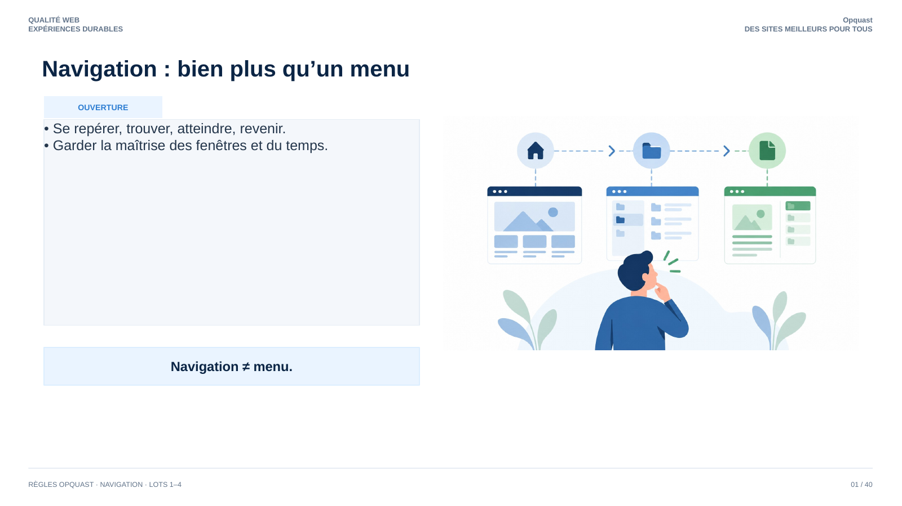
Idée principale
La navigation ne se limite pas au menu. Elle rassemble les moyens permettant de s’orienter, de circuler dans le service et de garder le contrôle de l’interface.
Les deux dimensions de la navigation
- Se repérer, trouver, atteindre, revenir
- Garder la maîtrise des fenêtres et du temps
Ce que montre l’illustration
Trois pages web sont reliées par des flèches : une page d’accueil, une rubrique et un document. Une personne observe les différents chemins possibles entre ces pages.
L’illustration représente la navigation comme un parcours entre plusieurs contenus, et non comme un composant unique.
Message à retenir
Navigation ≠ menu.
Navigation : dépasser le menu
Quand vous arrivez dans une ville inconnue, le plan affiché à la gare est utile, mais il ne suffit pas. Vous regardez aussi le nom des rues, les points de repère, les chemins possibles et la manière de revenir vers un endroit connu.
Sur un site web, le menu joue un peu le rôle de ce plan : il est important, mais il ne résume pas toute la navigation.
Se repérer et circuler
Naviguer, c’est pouvoir :
- se repérer ;
- trouver une information ;
- atteindre le contenu recherché ;
- revenir vers un point connu.
C’est essentiel lorsque nous arrivons directement sur une page depuis un moteur de recherche, sans être passés par l’accueil. Le site doit alors nous aider à comprendre où nous sommes et quelles directions restent possibles.
Garder la maîtrise de l’interface
Naviguer, c’est aussi garder le contrôle de ce qui se passe à l’écran.
Une fenêtre ne devrait pas surgir de manière imprévisible. Lorsqu’un contenu s’ouvre au-dessus de la page, nous devons pouvoir le fermer facilement. Et si une action est limitée dans le temps, cette limite doit être annoncée avant que nous commencions.
Le fil rouge de la séquence
Navigation ≠ menu.
Le menu est un composant. La navigation est l’ensemble des garanties qui nous évitent d’être perdus, bloqués ou surpris.
Nous suivrons donc quatre repères :
- Je sais où je suis.
- Je sais où aller.
- Je peux y aller.
- Je garde la main.
Slide 2 - 20 règles, 6 problèmes utilisateur
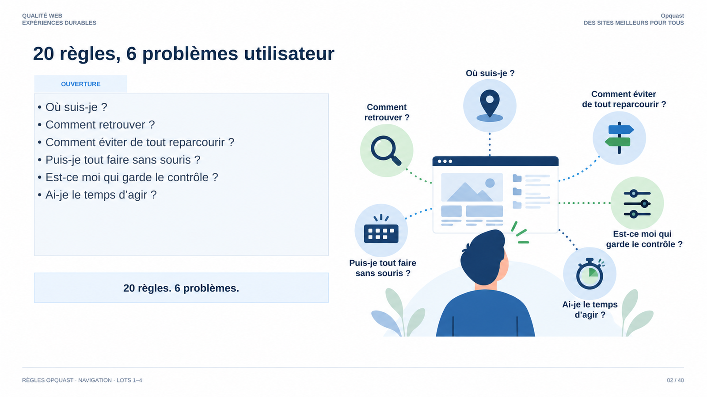
Idée principale
Les vingt règles de la rubrique Navigation sont regroupées autour de six problèmes vécus par les utilisateurs.
Ces questions constituent une grille de lecture pédagogique du parcours.
Les six questions utilisateur
- Où suis-je ?
- Comment retrouver ?
- Comment éviter de tout reparcourir ?
- Puis-je tout faire sans souris ?
- Est-ce moi qui garde le contrôle ?
- Ai-je le temps d’agir ?
Ce que montre l’illustration
Une page web est entourée de six pictogrammes disposés en cercle. Chaque pictogramme représente l’une des six questions.
Une personne observe cet ensemble, qui relie la navigation aux difficultés rencontrées pendant un parcours plutôt qu’à une simple liste de contrôles techniques.
Message à retenir
20 règles. 6 problèmes.
Six questions pour comprendre vingt règles
Derrière les vingt règles de la rubrique Navigation, nous retrouvons six problèmes très concrets.
Quand un site nous frustre, ce n’est généralement pas parce que nous ignorons un numéro de règle. C’est parce que nous ne savons plus où nous sommes, que nous ne retrouvons pas une information, que nous devons reparcourir toute la page, qu’une fonction reste inutilisable au clavier, qu’une fenêtre s’impose ou qu’une limite de temps nous prend de court.
Ces six questions vont donc nous servir de grille de lecture.
S’orienter et retrouver son chemin
Les trois premières questions concernent notre capacité à comprendre le service et à rejoindre son contenu.
- Où suis-je ? Puis-je entrer directement, revenir à l’accueil, comprendre ma position et reconnaître la rubrique active ? Les règles 153 et 155 à 159 construisent ces repères.
- Comment retrouver ? Si le menu ne suffit pas, puis-je utiliser une recherche, conserver ou partager ses résultats, modifier ma requête et consulter un plan du site ? C’est le rôle des règles 168 à 171.
- Comment éviter de tout reparcourir ? Puis-je atteindre directement le contenu, le menu ou la recherche sans retraverser tous les éléments répétés ? La règle 164 répond à ce besoin avec les liens d’accès rapide.
Agir et garder la maîtrise
Les trois questions suivantes concernent notre capacité à utiliser l’interface sans être bloqués ou surpris.
- Puis-je tout faire sans souris ? Le focus reste-t-il visible ? Toutes les fonctions sont-elles utilisables au clavier ? L’ordre de navigation reste-t-il prévisible ? Ce sont les règles 165 à 167.
- Est-ce moi qui garde le contrôle ? La navigation évite-t-elle les popups imposées ? Les fenêtres ouvertes peuvent-elles être fermées immédiatement, explicitement et toujours au même endroit ? Ce sont les règles 154 et 160 à 163.
- Ai-je le temps d’agir ? Lorsqu’une action ou un accès est limité dans le temps, cette limite et sa durée sont-elles annoncées avant que je commence ? C’est la règle 172.
Une grille pédagogique
Ces six questions ne constituent pas un classement officiel du référentiel. Elles nous permettent de relier chaque règle à un problème vécu et de comprendre ce qu’elle cherche à prévenir.
Dix-neuf règles seront développées visuellement dans la suite. La règle 172 ne possède pas de slide dédiée, mais elle reste bien présente dans notre grille de lecture.
Message à retenir
20 règles. 6 problèmes.
Au lieu de mémoriser vingt exigences isolées, nous allons observer six manières de perdre ses repères, son efficacité ou le contrôle de son parcours.
Slide 3 - Opquast et RGAA : deux éclairages complémentaires
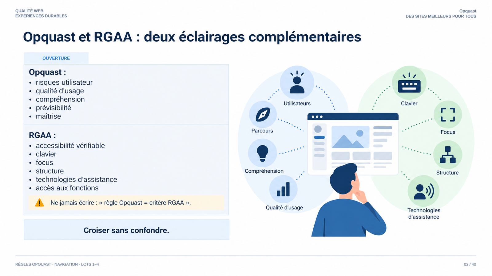
Idée principale
Opquast et le RGAA peuvent éclairer une même interface sous des angles complémentaires. Leurs objectifs et leurs méthodes ne sont cependant pas interchangeables.
L’éclairage Opquast
La démarche Opquast porte notamment sur :
- les risques utilisateur ;
- la qualité d’usage ;
- la compréhension ;
- la prévisibilité ;
- la maîtrise du parcours.
L’éclairage du RGAA
Le RGAA permet de vérifier des exigences d’accessibilité concernant notamment :
- l’utilisation au clavier ;
- la visibilité du focus ;
- la structure des contenus ;
- les technologies d’assistance ;
- l’accès aux fonctions.
Point de vigilance
Ne jamais écrire : « règle Opquast = critère RGAA ».
Les deux démarches peuvent examiner un même composant sans établir de correspondance automatique entre leurs règles et leurs critères.
Ce que montre l’illustration
Une page web est placée entre deux ensembles de repères.
À gauche, l’éclairage Opquast est représenté par les utilisateurs, le parcours, la compréhension et la qualité d’usage.
À droite, l’éclairage du RGAA est représenté par le clavier, le focus, la structure et les technologies d’assistance.
Message à retenir
Croiser sans confondre.
Deux éclairages sur une même interface
Prenons un menu dans lequel la rubrique active est signalée uniquement par une nuance de bleu.
Avec Opquast, nous commençons par formuler le risque utilisateur : si ce repère est difficile à percevoir, une personne peut ne plus savoir dans quelle partie du site elle se trouve. Nous nous intéressons à la compréhension de l’interface, à sa prévisibilité et à la maîtrise du parcours.
Avec le RGAA, nous disposons de critères et de tests permettant de vérifier des exigences d’accessibilité. Dans notre exemple, nous pouvons notamment contrôler que l’information ne repose pas uniquement sur la couleur.
Nous observons donc le même menu, mais nous ne posons pas exactement la même question.
L’éclairage Opquast
Opquast propose des règles de prévention applicables tout au long du projet. Elles permettent aux différents métiers de partager des risques concrets :
- perdre ses repères ;
- devoir deviner le fonctionnement d’un composant ;
- rencontrer un comportement imprévisible ;
- ne plus pouvoir poursuivre son parcours ;
- perdre la maîtrise de l’interface.
Ces règles contribuent à la qualité numérique, mais elles ne constituent pas un audit de conformité RGAA.
L’éclairage du RGAA
Le RGAA fournit une méthode de vérification de l’accessibilité. Ses critères et ses tests permettent notamment d’examiner :
- l’utilisation au clavier ;
- la visibilité du focus ;
- la structure et les relations entre les contenus ;
- l’accès aux fonctions ;
- la restitution avec les technologies d’assistance lorsque le test le demande.
Le RGAA permet d’établir un résultat de conformité dans un périmètre défini. Il ne couvre pas, à lui seul, tous les risques de qualité numérique rencontrés par les utilisateurs.
Pourquoi il ne faut pas établir d’équivalence
Une règle Opquast ne se traduit pas automatiquement par un critère RGAA. Une même règle peut croiser plusieurs critères, et un critère RGAA peut éclairer plusieurs problèmes de qualité.
Écrire « règle Opquast = critère RGAA » ferait disparaître les différences de périmètre, d’objectif et de méthode de vérification.
Message à retenir
Croiser sans confondre.
Opquast nous aide à prévenir des risques utilisateur dans l’ensemble du projet. Le RGAA nous donne une méthode pour vérifier des exigences d’accessibilité. Les deux démarches peuvent examiner le même composant et enrichir la même décision, sans devenir interchangeables.
Slide 4 - Où suis-je ?
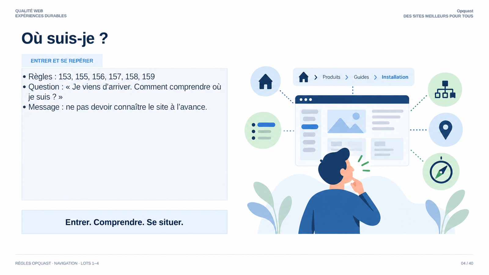
Idée principale
Cette première séquence porte sur l’entrée dans un service et sur les repères nécessaires pour comprendre sa position sans connaître le site à l’avance.
Question utilisateur
« Je viens d’arriver. Comment comprendre où je suis ? »
Règles concernées
La séquence regroupe les règles :
- 153 ;
- 155 ;
- 156 ;
- 157 ;
- 158 ;
- 159.
La règle 154 sera traitée séparément avec les règles relatives à la maîtrise des fenêtres.
Ce que montre l’illustration
Une page web est surmontée d’un fil d’Ariane. Celui-ci commence par une icône d’accueil et conduit à la page « Installation » en passant par « Produits » et « Guides ».
Des pictogrammes de repérage entourent la page et représentent les différents moyens permettant de comprendre sa position dans le service.
Message de la séquence
L’utilisateur ne doit pas avoir besoin de connaître le site à l’avance pour commencer à naviguer.
Message à retenir
Entrer. Comprendre. Se situer.
Arriver sans connaître le site
Imaginons que je reçoive un lien vers une page intitulée « Installation ». Je clique et j’arrive directement sur cette page, sans avoir vu l’accueil, le menu précédent ni la rubrique parente.
Je dois pourtant pouvoir répondre rapidement à quelques questions : sur quel site suis-je ? Dans quelle partie du service se trouve cette page ? Où puis-je aller maintenant ? Et comment revenir vers un point connu ?
L’interface ne devrait pas exiger que je connaisse déjà son organisation pour commencer à l’utiliser.
Six garanties complémentaires
Les six règles de cette séquence construisent ensemble cette première compréhension.
- La règle 153 permet d’atteindre directement le contenu lorsqu’aucune restriction ne justifie une étape préalable.
- La règle 155 offre un moyen de revenir à l’accueil depuis toutes les pages.
- La règle 156 donne une information sur la position de la page dans l’arborescence.
- La règle 157 signale la rubrique ou la page active dans le menu.
- La règle 158 maintient les blocs de navigation de même nature aux mêmes emplacements.
- La règle 159 évite de devoir deviner la fonction des icônes de navigation.
Ces règles ne fournissent pas toutes le même repère. Certaines facilitent l’entrée, d’autres la réorientation, la compréhension de la position ou l’apprentissage de l’interface. C’est leur combinaison qui rend le service plus facile à découvrir.
Un regroupement pédagogique
Vous remarquerez que la règle 154 n’apparaît pas dans cette séquence. Elle concerne les popups provoquées par la navigation. Nous la retrouverons plus tard avec les règles consacrées à la maîtrise des fenêtres.
Nous commençons ici par la porte d’entrée du parcours : avant de chercher à nous déplacer, encore faut-il pouvoir atteindre le contenu et comprendre l’espace dans lequel nous venons d’arriver.
Message à retenir
Entrer. Comprendre. Se situer.
Je ne dois pas connaître le site à l’avance. L’interface doit me donner suffisamment de repères pour commencer à naviguer.
Slide 5 - Règle 153 : accès immédiat
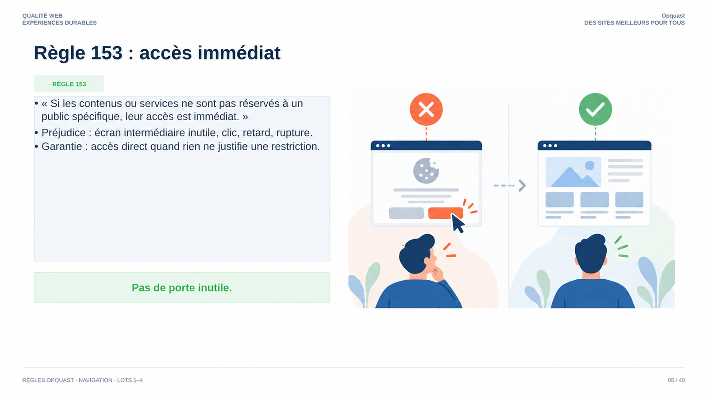
Règle 153
« Si les contenus ou services ne sont pas réservés à un public spécifique, leur accès est immédiat. »
Idée principale
Lorsqu’aucune restriction liée au public ne le justifie, la ressource demandée doit être accessible sans écran préalable ni étape intermédiaire.
Préjudice évité
Un écran intermédiaire inutile entraîne :
- un clic supplémentaire ;
- un retard dans l’accès au contenu ;
- une interruption du parcours ;
- un risque d’abandon.
Garantie recherchée
L’utilisateur accède directement au contenu ou au service demandé lorsque rien ne justifie une restriction préalable.
Ce que montre l’illustration
Deux parcours sont comparés.
À gauche, une personne rencontre un écran intermédiaire avant d’atteindre le contenu. Une croix rouge signale ce parcours inutile.
À droite, la personne accède directement au contenu demandé. Une coche verte valide ce parcours.
Message à retenir
Pas de porte inutile.
Un lien doit conduire à la ressource annoncée
Avez-vous déjà cliqué sur un lien vers un article pour arriver sur une page affichant seulement un logo et un bouton « Entrer sur le site » ?
Vous aviez demandé un contenu précis. Le site vous impose pourtant une étape supplémentaire avant de vous le montrer. Cette étape demande un clic, retarde l’accès et interrompt le parcours sans vous aider à accomplir votre tâche.
La règle 153
« Si les contenus ou services ne sont pas réservés à un public spécifique, leur accès est immédiat. »
Le point de départ est donc très simple : lorsqu’une personne saisit une adresse ou active un lien vers une ressource publique, elle doit pouvoir consulter directement cette ressource.
Une page de garde, un pré-accueil ou un affichage intermédiaire ne devrait pas être ajouté par habitude, pour mettre en scène la marque ou pour imposer un message sans rapport avec la demande initiale.
Une exception qui doit rester justifiée
La règle ne supprime pas toutes les étapes préalables. Un contenu réellement réservé à un public spécifique peut nécessiter une vérification, par exemple lorsqu’il est destiné uniquement à un public majeur.
L’important est de ne pas transformer cette exception en justification générale. L’étape doit correspondre à une restriction réelle et concerner précisément le contenu ou le service visé.
Le contrôle à effectuer
Pour vérifier cette règle, nous pouvons ouvrir directement :
- la page d’accueil ;
- une page interne ;
- un lien profond provenant d’un autre site ou d’un message.
Dans chaque cas, posons-nous deux questions :
- La ressource demandée est-elle immédiatement accessible ?
- Si une étape la précède, quelle fonction utile remplit-elle pour l’utilisateur ?
Si nous ne pouvons pas répondre clairement à la seconde question, cette étape est probablement une porte artificielle.
L’accès direct facilite aussi la prise en compte des contenus par les moteurs de recherche et les outils d’indexation. Mais le premier bénéfice reste celui de l’utilisateur : commencer immédiatement la consultation demandée.
Message à retenir
Pas de porte inutile.
Lorsqu’un contenu est public, le parcours doit commencer sur ce contenu, pas devant un sas ajouté par le site.
Slide 6 - Le coût d’une étape inutile
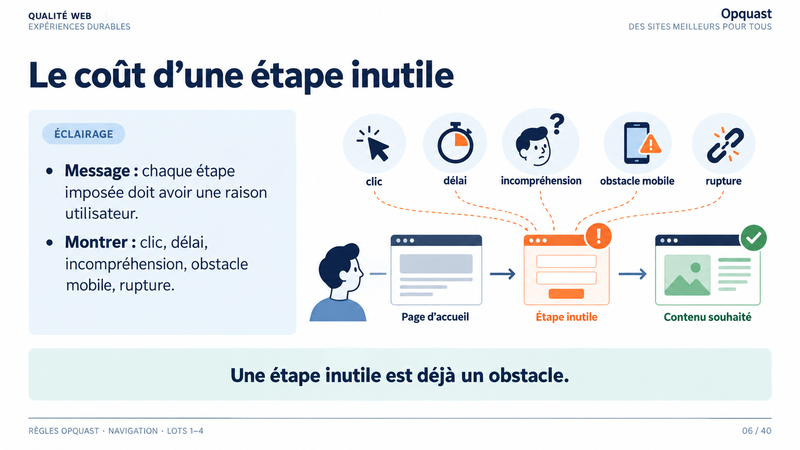
Idée principale
Chaque étape imposée dans un parcours doit répondre à une nécessité identifiable. Une étape inutile ajoute déjà un obstacle entre l’utilisateur et le contenu recherché.
Le parcours représenté
Le visuel présente trois écrans successifs :
- Page d’accueil
- Étape inutile
- Contenu souhaité
L’écran intermédiaire est signalé en orange par un point d’exclamation. Le contenu souhaité est associé à une coche verte.
Cinq effets possibles
L’étape intermédiaire peut entraîner :
- un clic, avec une interaction supplémentaire ;
- un délai, avant d’atteindre le contenu ;
- une incompréhension, face à une demande inattendue ;
- un obstacle mobile, lorsque l’espace et les moyens d’interaction sont limités ;
- une rupture, lorsque la personne perd le fil ou abandonne son parcours.
Question de conception
Quelle nécessité pour l’utilisateur justifie cette étape ?
Une étape nécessaire peut être conservée. Une étape sans fonction identifiable doit être remise en question.
Message à retenir
Une étape inutile est déjà un obstacle.
Une étape supplémentaire n’est jamais neutre
Imaginons que vous consultiez un article sur votre téléphone, dans les transports. Vous avez déjà trouvé le bon lien. Pourtant, avant d’accéder au contenu, vous devez comprendre un nouvel écran et activer un bouton supplémentaire.
Cette étape peut sembler minuscule lorsqu’on regarde uniquement la maquette. Dans le parcours réel, elle produit plusieurs coûts possibles.
Cinq coûts à examiner
- Le clic
Il ne s’agit pas seulement d’appuyer sur un bouton. Il faut repérer le contrôle, comprendre ce qu’il permet de faire, l’atteindre puis l’activer.
- Le délai
L’étape retarde l’accès au contenu. Elle peut également ajouter un chargement, mais ce n’est pas systématique.
- L’incompréhension
La personne doit interpréter un écran qu’elle n’avait pas demandé : pourquoi apparaît-il ? Que se passera-t-il si elle refuse ou ferme ?
- L’obstacle mobile
Sur un petit écran, l’étape occupe une place importante. Le bouton attendu peut devenir plus difficile à identifier ou à manipuler.
- La rupture
L’attention quitte la tâche initiale. La personne peut perdre le fil, fermer la page ou renoncer à poursuivre.
Ces effets ne se produisent pas toujours avec la même intensité. Leur accumulation transforme cependant une étape apparemment légère en obstacle réel.
Distinguer le nécessaire de l’inutile
L’objectif n’est pas de supprimer aveuglément toutes les étapes intermédiaires. Certaines répondent à une restriction réelle, à une exigence de sécurité ou à une décision nécessaire pour poursuivre le service.
Avant de conserver une étape, posons-nous trois questions :
- Quelle nécessité précise justifie sa présence ?
- Cette étape intervient-elle au bon moment ?
- Peut-elle être simplifiée ou intégrée au parcours sans interrompre l’accès ?
Si nous supprimons cette étape, que perd réellement l’utilisateur ? Si la réponse est « rien », nous avons probablement trouvé une friction inutile.
Message à retenir
Une étape inutile est déjà un obstacle.
Une étape intermédiaire doit être justifiée par le parcours, pas seulement par les habitudes de l’organisation. Après avoir supprimé les portes inutiles, nous pouvons examiner le repère suivant : la possibilité de revenir à l’accueil.
Slide 7 - Règle 155 : revenir à l’accueil
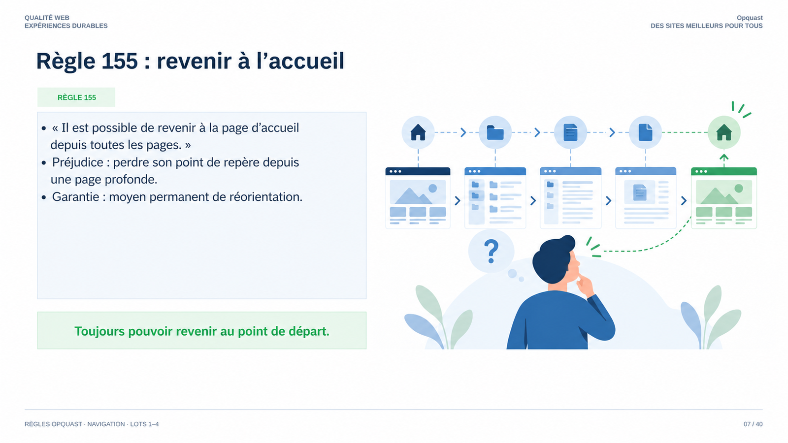
Règle 155
« Il est possible de revenir à la page d’accueil depuis toutes les pages. »
Idée principale
La page d’accueil constitue un point de référence commun. Elle doit pouvoir être rejointe depuis chaque page, même lorsque l’utilisateur est arrivé directement sur un contenu profond.
Préjudice évité
Sans moyen de retour vers l’accueil, une personne peut perdre son point de référence et ne plus savoir comment commencer à explorer le reste du service.
Garantie recherchée
Chaque page propose un moyen explicite permettant de rejoindre la page d’accueil et de reprendre la navigation depuis un niveau général.
Ce que montre l’illustration
Cinq pages successives représentent un parcours qui s’éloigne progressivement de l’accueil.
Une personne observe la page profonde avec un point d’interrogation. Une flèche verte en pointillés représente le retour direct vers le repère d’accueil, symbolisé par une maison.
Message à retenir
Toujours pouvoir revenir au point de départ.
Le point de départ désigne ici la page d’accueil du service, et non nécessairement la première page consultée par l’utilisateur.
Retrouver un point de référence
Imaginons que j’arrive sur une fiche produit depuis un moteur de recherche. Je n’ai pas parcouru le site depuis son accueil et je ne connais pas encore son organisation.
Si j’utilise le bouton précédent du navigateur, je retourne vers le moteur de recherche. Je quitte donc le site au lieu de rejoindre un point central depuis lequel je pourrais commencer à l’explorer.
La règle 155
« Il est possible de revenir à la page d’accueil depuis toutes les pages. »
Cette règle fournit un moyen de réorientation interne. Lorsque je suis désorienté ou que je souhaite repartir d’un niveau général, je peux rejoindre l’accueil sans devoir modifier moi-même l’adresse ou deviner la structure du site.
La page d’accueil n’est pas nécessairement la première page de mon parcours. Elle constitue un point de référence commun auquel je peux revenir.
Un lien explicite, pas seulement une convention
Rendre le logo cliquable est une convention fréquente et utile. Mais toutes les personnes ne savent pas nécessairement qu’un logo permet de revenir à l’accueil.
La vérification Opquast recherche donc un lien explicite, distinct du lien éventuellement placé sur le logo. Ce moyen peut prendre différentes formes, par exemple :
- un lien textuel « Accueil » ;
- le premier élément d’un fil d’Ariane ;
- un contrôle associant une icône de maison à un nom accessible explicite.
L’essentiel est que le moyen soit compréhensible et qu’il conduise effectivement à la page d’accueil du service concerné.
Vérifier toutes les pages
Le mot important dans cette règle est « toutes ».
Le contrôle ne doit pas porter uniquement sur les pages éditoriales ordinaires. Il faut également examiner :
- les pages de connexion ;
- les pages d’erreur ;
- les étapes de paiement ;
- les pages produites par un service tiers ;
- les gabarits particuliers.
Ce sont souvent ces pages exceptionnelles qui perdent les mécanismes de navigation présents dans le reste du site.
Message à retenir
Toujours pouvoir revenir au point de départ.
Ici, le « point de départ » désigne le point de référence proposé par le service, pas nécessairement la première page réellement consultée. La règle suivante complétera ce retour en répondant à une autre question : où se trouve exactement la page dans l’arborescence ?
Slide 8 - Règle 156 : connaître sa position
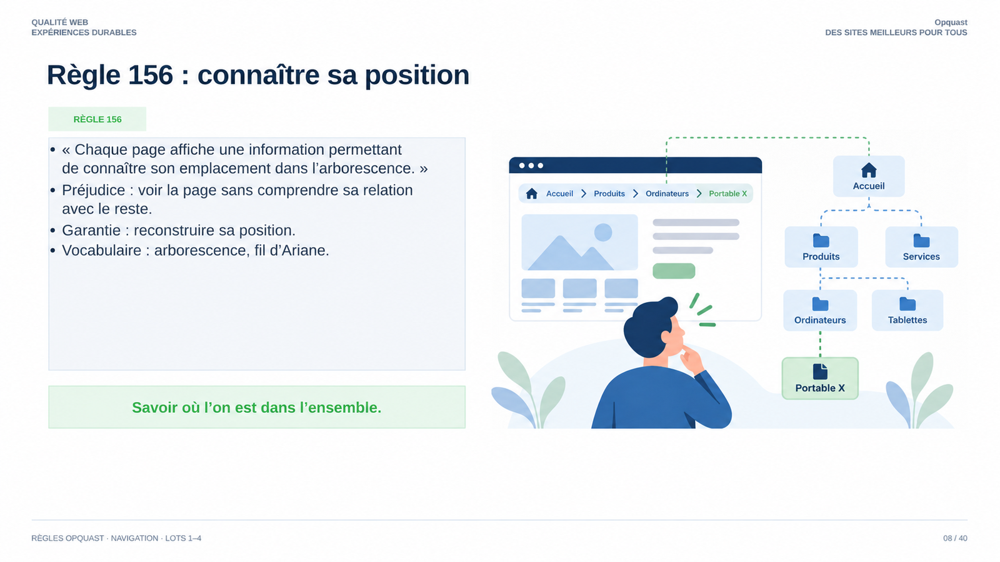
Règle 156
« Chaque page affiche une information permettant de connaître son emplacement dans l’arborescence. »
Idée principale
Le contenu d’une page et sa position dans le site sont deux informations différentes.
Le titre « Portable X » identifie le contenu consulté. Le chemin « Accueil, Produits, Ordinateurs, Portable X » indique sa relation avec l’ensemble du service.
Préjudice évité
Sans information d’emplacement, l’utilisateur voit la page sans comprendre à quelle rubrique ou à quel ensemble de contenus elle appartient.
Garantie recherchée
La page fournit une information permettant de reconstruire sa position dans l’organisation hiérarchique du site.
Vocabulaire
- Arborescence : organisation hiérarchique des rubriques, sous-rubriques et pages.
- Fil d’Ariane : représentation de la position de la page dans cette arborescence.
Ce que montre l’illustration
À gauche, une page web affiche le fil d’Ariane :
- Accueil
- Produits
- Ordinateurs
- Portable X
À droite, une arborescence présente les branches « Produits » et « Services ». Sous « Produits » figurent « Ordinateurs » et « Tablettes ». La page « Portable X » est mise en évidence sous « Ordinateurs ».
Les deux représentations conduisent au même contenu.
Message à retenir
Savoir où l’on est dans l’ensemble.
Comprendre la relation entre la page et le site
Imaginons que j’arrive directement sur une page intitulée « Portable X ». Ce titre me permet de savoir quel produit je consulte. Il ne m’indique pas nécessairement où cette page se trouve dans l’organisation du site.
Appartient-elle à la rubrique « Produits », à une catégorie « Ordinateurs » ou à un espace d’assistance ? Sans information supplémentaire, je connais le contenu de la page, mais pas sa relation avec le reste du service.
La règle 156
« Chaque page affiche une information permettant de connaître son emplacement dans l’arborescence. »
Cette règle ajoute un repère hiérarchique. Elle permet de comprendre dans quelle partie du site la page est située et quels niveaux la relient à l’accueil.
Le titre répond à la question « que suis-je en train de consulter ? ». L’information d’emplacement répond à une autre question : « où ce contenu se trouve-t-il dans l’ensemble ? ».
Deux notions à distinguer
L’arborescence représente l’organisation hiérarchique des contenus. Elle relie les rubriques, les sous-rubriques et les pages.
Le fil d’Ariane rend visible une partie de cette arborescence pour la page consultée. Dans l’exemple présenté, nous lisons :
- Accueil
- Produits
- Ordinateurs
- Portable X
Cette suite ne raconte pas nécessairement les clics effectués pour arriver sur la page. Une personne provenant directement d’un moteur de recherche verra le même fil d’Ariane. Celui-ci représente la position de la page, pas l’historique du parcours.
Ce que nous devons vérifier
En arrivant directement sur une page interne, pouvons-nous identifier :
- la page courante ;
- sa rubrique parente ;
- les niveaux qui la relient à l’accueil ?
Le fil d’Ariane est le mécanisme le plus courant pour fournir cette information. Il doit rester identifiable et cohérent d’une page à l’autre. La page d’accueil constitue naturellement un cas particulier, puisqu’elle se trouve déjà au sommet de l’arborescence.
Message à retenir
Savoir où l’on est dans l’ensemble.
Une page ne doit pas apparaître comme un contenu isolé. Elle doit révéler sa relation avec la structure du service. La slide suivante précisera ce que le fil d’Ariane raconte réellement et comment il contribue à la réorientation.
Slide 9 - Fil d’Ariane : un repère
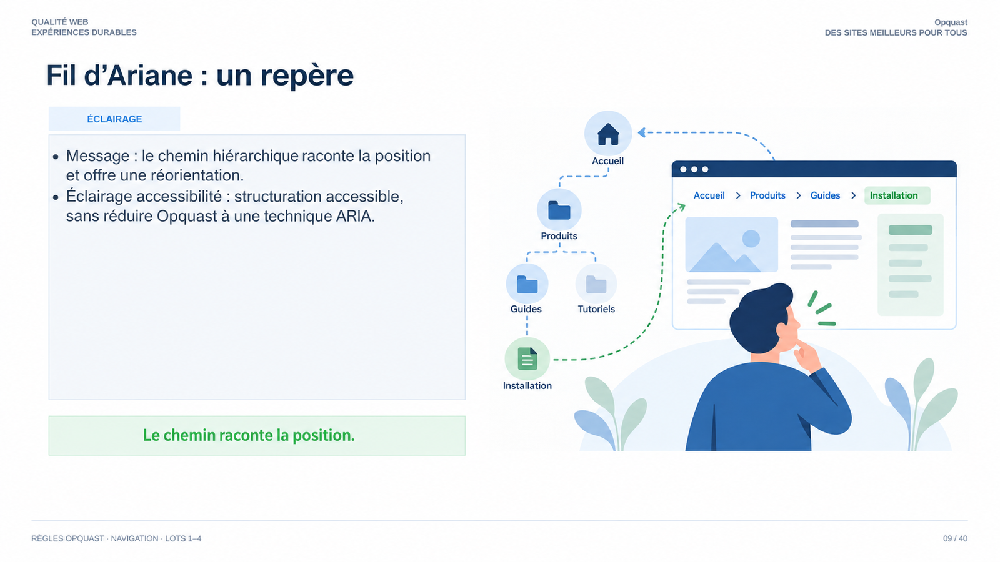
Idée principale
Le fil d’Ariane représente la position de la page dans l’arborescence. Il peut également proposer des chemins de réorientation vers les niveaux parents.
Le chemin hiérarchique représenté
- Accueil
- Produits
- Guides
- Tutoriels
- Installation
Ce chemin décrit la relation entre les différents niveaux. Il ne représente pas nécessairement les pages réellement consultées pour arriver jusqu’à « Installation ».
Les deux fonctions
- Informer : rendre visible la position de la page courante dans l’organisation du service.
- Réorienter : permettre de rejoindre un niveau parent lorsque celui-ci est proposé sous forme de lien.
Ce que montre l’illustration
À gauche, l’arborescence relie « Accueil », « Produits », « Guides », « Tutoriels » et « Installation ».
Des pointillés associent cette structure au fil d’Ariane affiché dans la page web située à droite. La dernière étape, « Installation », est mise en évidence comme page courante.
Une personne observe la correspondance entre l’arborescence et le fil d’Ariane.
Éclairage accessibilité
Le fil d’Ariane doit être structuré de manière à rester compréhensible et utilisable avec différentes modalités de navigation.
Le balisage HTML et les attributs ARIA peuvent faciliter sa restitution. Ils ne remplacent cependant ni la présence du composant, ni une hiérarchie correcte, ni des libellés compréhensibles.
Message à retenir
Le chemin raconte la position.
Le fil d’Ariane représente une hiérarchie
Regardons ce chemin :
- Accueil
- Produits
- Guides
- Tutoriels
- Installation
Est-ce que cela signifie que j’ai réellement visité ces cinq pages avant d’arriver sur « Installation » ? Non.
Je peux avoir ouvert directement cette page depuis un moteur de recherche. Le fil d’Ariane restera pourtant identique, car il représente la position de la page dans l’arborescence, pas mon historique de clics.
Informer sur la position
Le premier rôle du fil d’Ariane est de rendre visible la relation entre la page courante et les niveaux qui la contiennent.
Je comprends que la page « Installation » appartient à « Tutoriels », qui se trouve dans « Guides », puis dans « Produits ».
Le composant m’aide ainsi à reconstruire une partie de l’organisation du service sans devoir ouvrir le menu ou repartir de l’accueil.
Offrir une réorientation
Les niveaux supérieurs peuvent également devenir des chemins de réorientation.
Si « Produits », « Guides » et « Tutoriels » sont des liens, je peux rejoindre directement l’un de ces niveaux. Je ne suis pas obligé de reparcourir toute la navigation principale.
Cette fonction complète l’information d’emplacement. Le fil d’Ariane ne dit plus seulement « vous êtes ici ». Il permet aussi de rejoindre un niveau parent pertinent.
Structurer le composant de manière accessible
Une mise en œuvre accessible peut notamment s’appuyer sur :
- une région de navigation dotée d’un nom accessible comme « Fil d’Ariane » ;
- une liste ordonnée, puisque l’ordre des niveaux est significatif ;
- des séparateurs traités comme des éléments décoratifs lorsqu’ils n’apportent pas d’information supplémentaire ;
- une identification compréhensible de la page courante ;
aria-current="page"lorsque l’élément courant est représenté par un lien.
Ces choix techniques facilitent la restitution du composant. Ils ne remplacent cependant ni sa présence visuelle ni la pertinence de la hiérarchie affichée.
Un fil d’Ariane parfaitement balisé mais fondé sur une arborescence fausse reste un mauvais repère. Il faut d’abord représenter correctement la structure du service, puis rendre cette représentation accessible.
Message à retenir
Le chemin raconte la position.
Il raconte la place de la page dans la structure, pas le parcours réellement effectué pour y arriver. La règle suivante ajoutera un autre repère de position : l’item actif du menu.
Slide 10 - Règle 157 : signaler l’item actif
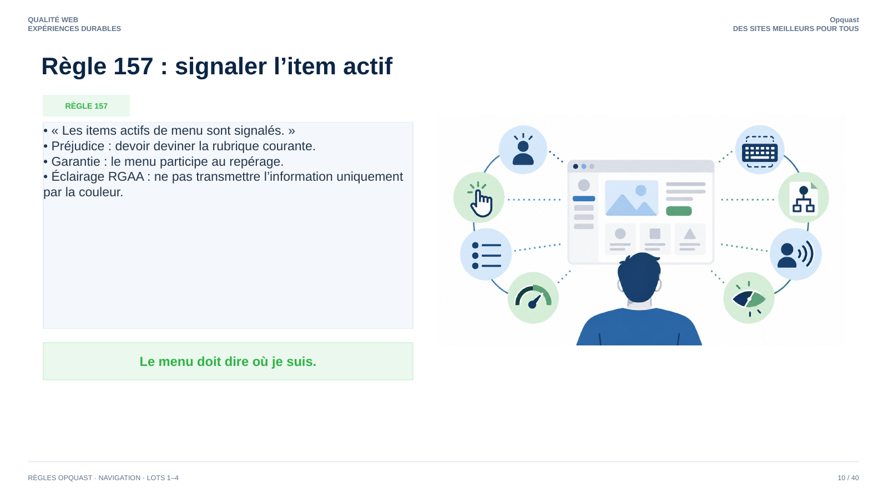
Règle 157
« Les items actifs de menu sont signalés. »
Idée principale
Le menu ne sert pas uniquement à proposer des destinations. Il participe aussi au repérage en indiquant la page ou la rubrique actuellement affichée.
Préjudice évité
Lorsque tous les items conservent la même apparence, l’utilisateur doit deviner quelle rubrique correspond au contenu consulté.
Garantie recherchée
L’item actif est distingué des autres items afin que le menu fournisse un repère supplémentaire sur la position courante.
Éclairage accessibilité
L’état actif ne doit pas être transmis uniquement par une différence de couleur.
Le signalement peut associer la couleur à un autre indice visuel, par exemple :
- un soulignement ;
- une bordure ;
- un fond distinct ;
- une graisse typographique ;
- un marqueur adjacent.
Lorsque le lien représente la page courante, l’attribut aria-current="page" peut également exposer cet état aux technologies d’assistance.
Ce que montre l’illustration
Une page web présente un item de menu mis en évidence. Huit pictogrammes disposés autour de la page évoquent différentes modalités de perception et d’interaction.
Une personne observe l’interface et peut identifier la rubrique active grâce au signalement présent dans le menu.
Message à retenir
Le menu doit dire où je suis.
Le menu est aussi un repère
Imaginons un menu dont tous les items conservent exactement la même apparence, quelle que soit la page affichée.
Je peux lire le titre de la page pour comprendre son contenu. Mais lorsque je regarde le menu, rien ne confirme si je me trouve dans « Produits », « Services » ou « Ressources ».
Le menu me permet de changer de rubrique, mais il ne m’aide pas à identifier celle que je consulte actuellement.
La règle 157
« Les items actifs de menu sont signalés. »
Un item actif correspond à la page ou à la section actuellement affichée. Son signalement apporte un repère supplémentaire dans l’interface.
Le menu ne sert donc pas uniquement à proposer des destinations. Il indique aussi quelle destination est actuellement sélectionnée.
Un état visuellement perceptible
Si le seul changement consiste à faire passer le texte du noir au bleu, l’information peut être difficile à percevoir ou disparaître selon les conditions de consultation.
Nous pouvons associer la couleur à un autre indice visuel, par exemple :
- un soulignement ;
- une bordure ;
- un fond distinct ;
- une graisse typographique suffisamment perceptible ;
- un marqueur adjacent.
Il ne s’agit pas d’accumuler tous ces effets. Il faut choisir un signal cohérent, suffisamment visible et qui ne repose pas uniquement sur la couleur.
Exposer aussi l’état dans le code
Une classe CSS comme .active permet d’appliquer une présentation visuelle. Elle ne donne cependant aucune signification particulière aux technologies d’assistance.
Lorsque le lien correspond réellement à la page courante, l’attribut suivant peut exposer cet état :
<a href="/services/" aria-current="page">Services</a>Une technologie d’assistance peut alors restituer que ce lien correspond à la page courante.
Cet attribut doit refléter l’état réel de l’interface. Il ne faut pas laisser plusieurs pages courantes dans un même ensemble de navigation ni utiliser aria-current="page" pour une rubrique qui ne correspond pas à la page affichée.
Le contrôle à effectuer
Pour chaque menu concerné, vérifions que :
- l’item correspondant au contenu affiché est identifiable visuellement ;
- son état ne repose pas uniquement sur la couleur ;
- l’information programmatique correspond à l’état visuel ;
- le signalement reste correct après chaque changement de page ;
- il reste compréhensible dans les versions mobile et bureau.
Message à retenir
Le menu doit dire où je suis.
Le fil d’Ariane situe la page dans une hiérarchie. L’item actif confirme la page ou la rubrique courante dans le menu. La règle suivante ajoutera une nouvelle garantie : retrouver les blocs de navigation au même endroit.
Slide 11 - Règle 158 : stabilité des blocs
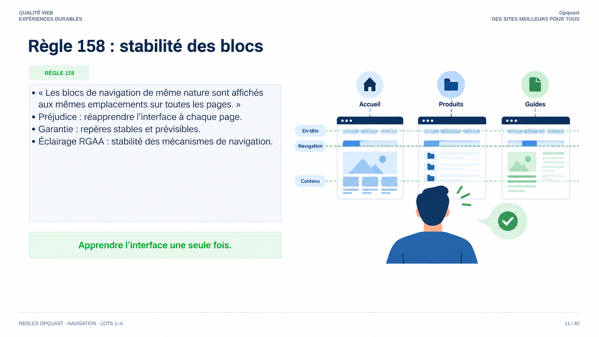
Règle 158
« Les blocs de navigation de même nature sont affichés aux mêmes emplacements sur toutes les pages. »
Idée principale
Les mécanismes de navigation remplissant la même fonction doivent conserver des emplacements prévisibles d’une page à l’autre.
Préjudice évité
Lorsque les blocs changent de place sans raison compréhensible, l’utilisateur doit rechercher et réapprendre l’interface à chaque nouvelle page.
Garantie recherchée
Les repères appris sur une page restent réutilisables pendant la suite du parcours.
Éclairage du RGAA
Dans un même ensemble de pages, le RGAA vérifie notamment que le menu et les barres de navigation :
- restent à la même place dans la présentation ;
- conservent le même ordre relatif dans le code source.
L’ordre relatif du code et l’ordre de tabulation sont deux contrôles distincts.
Ce que montre l’illustration
Trois pages sont comparées :
- Accueil
- Produits
- Guides
Sur chaque page, les zones « En-tête », « Navigation » et « Contenu » restent alignées aux mêmes emplacements.
Une personne observe cette répétition et retrouve les mêmes repères sur les trois pages.
Message à retenir
Apprendre l’interface une seule fois.
Apprendre un repère, puis le retrouver
Imaginons que le menu principal apparaisse en haut de la page d’accueil, dans une colonne latérale sur les pages produit, puis à un troisième emplacement sur les pages d’aide.
À chaque changement de page, je dois interrompre ma tâche et rechercher de nouveau la navigation. Le menu existe toujours, mais le repère que j’avais appris ne fonctionne plus.
La règle 158
« Les blocs de navigation de même nature sont affichés aux mêmes emplacements sur toutes les pages. »
L’expression « de même nature » est importante.
Un menu principal doit rester placé comme un menu principal. Une navigation secondaire peut occuper un autre emplacement. La règle ne demande pas de placer tous les mécanismes de navigation au même endroit ni de rendre toutes les pages identiques.
Elle demande que les repères remplissant la même fonction restent prévisibles d’une page à l’autre.
Réutiliser ce qui a déjà été appris
Lors de la première consultation, je découvre l’interface :
- où se trouve le menu principal ;
- où chercher une navigation secondaire ;
- où retrouver les outils récurrents ;
- comment passer d’une rubrique à une autre.
Si ces éléments restent aux mêmes emplacements, je peux réutiliser cet apprentissage. Mon attention reste disponible pour le contenu et pour la tâche que je veux accomplir.
Si leur position change sans raison compréhensible, je dois recommencer cette recherche à chaque page.
Stabilité ne signifie pas rigidité
Une interface peut s’adapter au contexte.
Sur mobile, le menu peut être présenté différemment de la version bureau. Cette adaptation ne contredit pas nécessairement la règle, à condition que le fonctionnement et l’emplacement restent cohérents entre les pages consultées dans le même contexte.
Un changement déclenché volontairement par l’utilisateur peut également répondre à un besoin légitime. Le problème apparaît lorsque la position varie de manière imprévisible au fil du parcours.
L’éclairage du RGAA
Le RGAA apporte un contrôle complémentaire. Dans un même ensemble de pages, il vérifie notamment que le menu et les barres de navigation :
- restent à la même place dans la présentation ;
- conservent le même ordre relatif dans le code source.
Ce second point concerne la structure du document. Il ne doit pas être confondu avec l’ordre de tabulation, qui fait l’objet d’un autre contrôle.
Nous croisons donc à nouveau les deux démarches sans établir d’équivalence automatique.
Vérifier les pages qui échappent aux gabarits
La stabilité doit être examinée sur plusieurs types de pages :
- accueil ;
- contenu éditorial ;
- fiche produit ;
- recherche ;
- connexion ;
- erreur ;
- service fourni par un outil tiers.
Les services de paiement, de recrutement ou de billetterie méritent une attention particulière, car ils peuvent introduire des gabarits différents et rompre les repères du service principal.
Message à retenir
Apprendre l’interface une seule fois.
La stabilité permet de réutiliser un repère déjà acquis. La slide suivante montrera pourquoi cette prévisibilité réduit l’effort nécessaire pour accomplir la tâche.
Slide 12 - La stabilité réduit la charge mentale
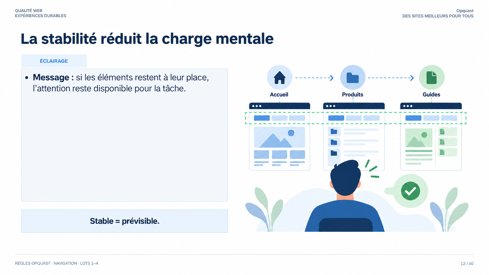
Idée principale
Lorsque les éléments de navigation restent à leur place, l’utilisateur peut réutiliser les repères déjà appris. Son attention reste davantage disponible pour la tâche en cours.
Le parcours représenté
Trois pages sont reliées :
- Accueil
- Produits
- Guides
Sur chacune, la zone de navigation est encadrée en pointillés au même emplacement.
Effet recherché
La répétition d’un même emplacement rend l’interface plus prévisible. L’utilisateur n’a pas à rechercher de nouveau le bloc de navigation à chaque changement de page.
Message à retenir
Stable = prévisible.
Garder l’attention disponible pour la tâche
Avez-vous déjà utilisé une voiture dont les commandes n’étaient pas placées comme dans celle que vous conduisez habituellement ?
Pendant quelques instants, vous devez chercher le bon contrôle et vérifier son fonctionnement. Une partie de votre attention quitte la tâche principale pour se reporter vers l’interface.
Sur un site web, le déplacement imprévisible d’un menu ou d’un outil récurrent produit un mécanisme comparable, à une autre échelle : il faut interrompre la tâche pour retrouver le repère.
Ce que coûte un changement d’emplacement
Imaginons que je souhaite comparer deux produits.
Sur la première page, la navigation se trouve en haut. Sur la deuxième, elle passe dans une colonne. Sur la troisième, elle est masquée derrière un autre contrôle.
À chaque déplacement, je dois :
- interrompre ma comparaison ;
- parcourir de nouveau l’écran ;
- identifier le bloc recherché ;
- vérifier qu’il remplit bien la même fonction ;
- reprendre ma tâche.
Le coût ne réside donc pas seulement dans le temps nécessaire pour retrouver le menu. Il réside aussi dans la rupture de l’activité en cours.
Réutiliser une attente déjà construite
Lorsque les éléments restent à leur place, je peux réutiliser ce que j’ai appris sur la page précédente.
Je sais où regarder pour :
- changer de rubrique ;
- ouvrir la recherche ;
- retrouver un outil récurrent ;
- poursuivre mon parcours.
L’attention nécessaire à la recherche de l’interface diminue. Elle peut alors être davantage consacrée au contenu ou à l’action en cours.
Réduire l’effort évitable, pas supprimer tout effort
Une interface stable ne devient pas automatiquement simple, accessible ou parfaitement prévisible. Elle retire seulement une difficulté évitable : devoir rechercher un élément dont la fonction est déjà connue.
Certains changements restent légitimes. Une version mobile peut organiser l’espace différemment. Une personne peut choisir d’ouvrir ou de replier un panneau. Un processus particulier peut nécessiter une présentation adaptée.
La question est donc la suivante : ce changement aide-t-il à comprendre et à agir, ou oblige-t-il simplement à retrouver un repère qui aurait pu rester stable ?
Un principe que nous retrouverons plus tard
La règle 158 applique cette logique aux blocs de navigation.
Nous retrouverons le même principe avec la règle 163, consacrée à l’emplacement des mécanismes de fermeture. Une fois que nous avons appris où fermer une fenêtre, ce contrôle ne devrait pas changer de place sans raison compréhensible.
Message à retenir
Stable = prévisible.
La stabilité ne supprime pas toute charge mentale. Elle évite de consacrer inutilement de l’attention à la recherche répétée des mêmes éléments. La prochaine règle portera sur une autre forme d’effort évitable : devoir deviner la fonction d’une icône.
Slide 13 - Règle 159 : légender les icônes
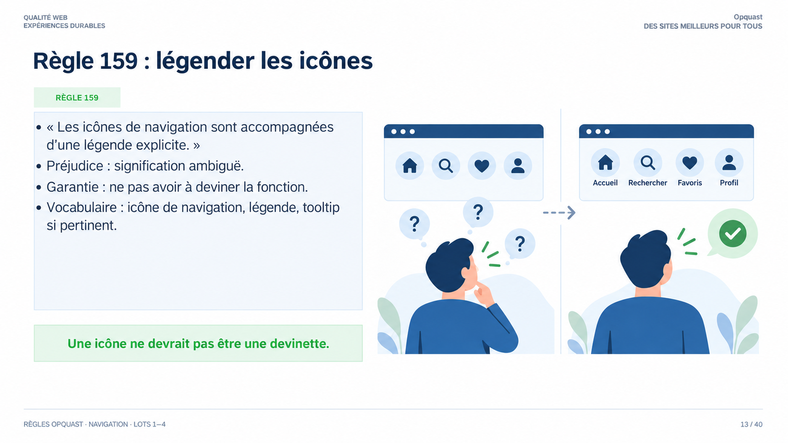
Règle 159
« Les icônes de navigation sont accompagnées d’une légende explicite. »
Préjudice évité
Sans légende, la signification d’une icône peut rester ambiguë. L’utilisateur doit deviner sa fonction ou l’activer pour comprendre ce qu’elle permet de faire.
Garantie recherchée
Une légende explicite permet d’identifier la destination ou la fonction de navigation avant de l’activer.
Vocabulaire
- Icône de navigation : représentation graphique donnant accès à une destination ou à une fonction de navigation.
- Légende : libellé textuel qui explicite la signification de l’icône.
- Infobulle : information complémentaire qui peut être affichée dans certains contextes, notamment au survol ou à la prise de focus.
Ce que montre l’illustration
Deux états sont comparés.
À gauche, quatre icônes sans légende laissent l’utilisateur hésitant.
À droite, les mêmes icônes sont accompagnées des libellés « Accueil », « Rechercher », « Favoris » et « Profil ».
Message à retenir
Une icône ne devrait pas être une devinette.
Ne pas obliger à deviner
Regardez les quatre icônes présentées à gauche de la slide.
La loupe semble familière. Mais déclenche-t-elle immédiatement une recherche ou ouvre-t-elle un formulaire ? Le cœur permet-il d’ajouter cette page aux favoris ou d’accéder à une liste déjà enregistrée ? La silhouette représente-t-elle un profil, un compte ou une connexion ?
Une icône peut sembler évidente à la personne qui l’a conçue tout en restant ambiguë pour celle qui découvre l’interface.
La règle 159
« Les icônes de navigation sont accompagnées d’une légende explicite. »
La règle porte ici sur les icônes qui permettent de naviguer vers une destination ou d’accéder à une fonction de navigation.
Elle ne demande pas seulement que le dessin soit reconnaissable. Elle demande que sa signification soit explicitée avant que l’utilisateur l’active.
Un dessin ne porte pas une signification unique
La signification d’une icône dépend :
- des conventions employées par le service ;
- du contexte dans lequel elle apparaît ;
- des autres éléments de l’interface ;
- de l’expérience préalable de la personne.
Le dessin apporte donc un indice, mais il ne suffit pas toujours à confirmer la destination ou l’action proposée.
Dans l’exemple de droite, les libellés « Accueil », « Rechercher », « Favoris » et « Profil » lèvent cette ambiguïté.
Ce qu’est une légende explicite
La solution la plus directe consiste à afficher un libellé à côté ou sous l’icône.
Ce libellé doit nommer clairement la destination ou la fonction. « Rechercher » informe davantage que « Cliquer ici ».
Une infobulle peut apporter une information complémentaire, mais elle doit être disponible au clavier et ne résout pas tous les usages, notamment sur un écran tactile dépourvu de survol.
Ne pas confondre légende visible et nom accessible
Le lien ou le bouton doit également posséder un nom compréhensible pour les technologies d’assistance.
Si le libellé visible est correctement associé au contrôle, il peut déjà constituer ce nom accessible.
Si le composant reste uniquement composé d’une icône, un attribut comme aria-label peut lui fournir un nom dans le code. Mais ce nom n’apparaît pas à l’écran : il ne lève donc pas l’ambiguïté pour une personne voyante qui hésite devant le pictogramme.
De même, l’alternative d’une image peut contribuer au nom accessible du contrôle sans constituer une légende visible.
Le contrôle à effectuer
Pour chaque icône de navigation, posons-nous deux questions :
- Une personne peut-elle comprendre sa fonction avant de l’activer ?
- Cette fonction possède-t-elle aussi un nom correctement restitué par les technologies d’assistance ?
Ces deux vérifications sont complémentaires. Aucune ne remplace l’autre.
Message à retenir
Une icône ne devrait pas être une devinette.
Le dessin aide à reconnaître. Le texte confirme ce qui va se passer.
Slide 14 - Synthèse A
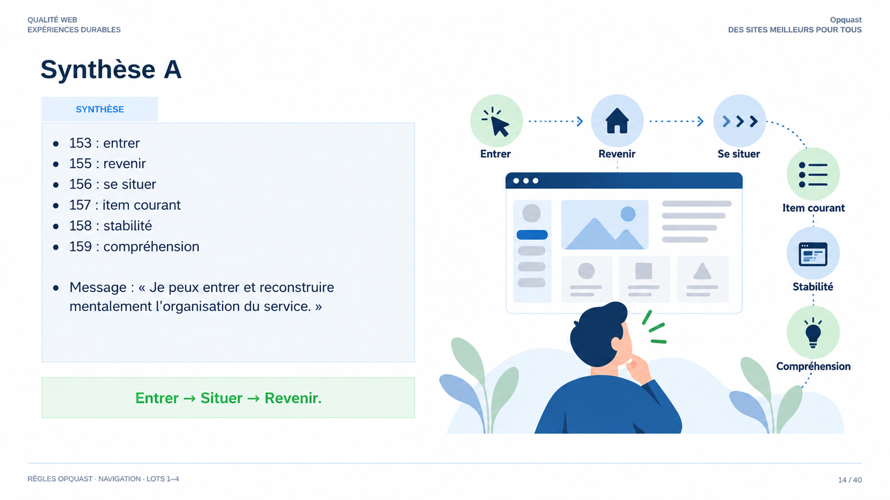
Synthèse du bloc A
Cette slide rassemble les six règles du bloc « Entrer et se repérer ». Elles apportent des repères complémentaires à une personne qui découvre une page sans connaître le site à l’avance.
Les six repères
- 153 - Entrer
- 155 - Revenir
- 156 - Se situer
- 157 - Identifier l’item courant
- 158 - Retrouver des repères stables
- 159 - Comprendre les icônes
Ce que montre l’illustration
Six pictogrammes sont disposés autour d’une page web :
- Entrer
- Revenir
- Se situer
- Item courant
- Stabilité
- Compréhension
Ils sont reliés par des pointillés autour de la page. Une personne observe cet ensemble et cherche à comprendre l’organisation du service.
Message de synthèse
« Je peux entrer et reconstruire mentalement l’organisation du service. »
Mémo
Entrer - Situer - Revenir.
Relier les six repères
Avant de passer au bloc suivant, revenons à une situation simple.
Une personne ouvre un lien reçu dans un message. Elle arrive directement sur une page intérieure qu’elle n’a jamais consultée.
Que doit lui permettre l’interface pour qu’elle puisse commencer à s’orienter sans connaître le site à l’avance ?
Six règles, pas six contrôles isolés
Les six règles représentées sur cette slide répondent ensemble à cette situation.
- 153 - Entrer : accéder directement au contenu demandé lorsque rien ne justifie une restriction.
- 155 - Revenir : disposer, depuis chaque page, d’un moyen de revenir à l’accueil.
- 156 - Se situer : connaître la position de la page dans l’arborescence.
- 157 - Identifier l’item courant : voir quelle page ou quelle rubrique est active dans le menu.
- 158 - Retrouver des repères stables : conserver les blocs de navigation de même nature aux mêmes emplacements.
- 159 - Comprendre les icônes : ne pas avoir à deviner la fonction d’une icône de navigation.
La numérotation n’est pas continue parce que ce bloc rassemble les règles qui répondent au même problème utilisateur. La règle 154 n’est pas oubliée : nous la retrouverons plus tard avec la maîtrise des fenêtres.
Trois moments à retenir
Nous pouvons regrouper ces six règles en trois moments.
Entrer
La règle 153 évite qu’une étape artificielle retarde l’accès au contenu demandé.
Comprendre et se situer
Les règles 156, 157, 158 et 159 apportent plusieurs indices complémentaires :
- la position dans l’arborescence ;
- la rubrique ou la page active ;
- des blocs de navigation que l’on retrouve au même endroit ;
- des icônes dont la fonction est explicitée.
Aucun de ces indices ne suffit nécessairement à lui seul. Leur combinaison aide à comprendre la relation entre la page consultée et le reste du service.
Revenir
La règle 155 offre un moyen de se réorienter en revenant à l’accueil depuis chaque page.
Transformer la synthèse en contrôle de parcours
Pour vérifier ce bloc, choisissons une page intérieure et posons six questions :
- Le contenu demandé est-il accessible sans étape inutile ?
- Peut-on revenir à l’accueil ?
- La position de la page dans l’arborescence est-elle indiquée ?
- L’item actif du menu est-il signalé ?
- Les blocs de navigation restent-ils stables par rapport aux autres pages ?
- Les icônes de navigation ont-elles une signification explicite ?
Cette vérification permet de considérer les règles dans un parcours réel plutôt que comme six éléments indépendants d’une checklist.
Message à retenir
« Je peux entrer et reconstruire mentalement l’organisation du service. »
Entrer - Situer - Revenir.
La séquence suivante ajoutera une nouvelle question : comment retrouver un contenu lorsque je ne veux pas, ou ne peux pas, suivre l’arborescence prévue ?
Slide 15 - Comment retrouver ce que je cherche ?
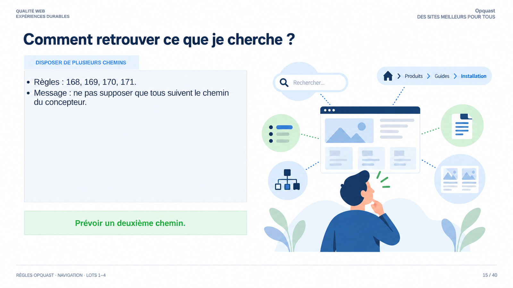
Idée principale
Une personne ne suivra pas nécessairement le chemin imaginé par l’équipe de conception. Plusieurs mécanismes doivent lui permettre d’accéder à un contenu ou de se réorienter.
Les quatre règles annoncées
- 168 - Proposer un moteur de recherche interne
- 169 - Donner une adresse à chaque page de résultats
- 170 - Permettre de relancer une recherche depuis les résultats
- 171 - Rendre le plan du site disponible depuis chaque page
Principe du bloc
Le menu, le moteur de recherche et le plan du site répondent à des stratégies différentes. Aucun chemin ne doit être considéré comme le seul parcours possible.
Ce que montre l’illustration
Une barre de recherche et un fil d’Ariane encadrent une page web.
Le fil d’Ariane mène successivement vers :
- Produits
- Guides
- Installation
Le mot « Rechercher » représente une autre possibilité d’accès au contenu.
Message à retenir
Prévoir un deuxième chemin.
Ne pas supposer un seul chemin
Imaginons que je cherche un guide d’installation précis.
Je peux parcourir successivement « Produits », puis « Guides », puis « Installation ». Je peux aussi saisir directement le mot « installation » dans un moteur de recherche. Si je ne comprends pas l’organisation du site, je peux préférer consulter son plan.
Ces chemins répondent au même objectif, mais ils ne demandent ni les mêmes connaissances ni le même effort.
Une même personne peut changer de stratégie
Il ne s’agit pas de classer les utilisateurs en profils définitifs.
Une même personne peut :
- explorer le menu lorsqu’elle découvre le service ;
- rechercher un mot précis lorsqu’elle connaît déjà le contenu attendu ;
- consulter le plan du site lorsqu’elle veut comprendre l’organisation générale ;
- reformuler sa recherche lorsque les premiers résultats ne lui conviennent pas.
La stratégie dépend de la tâche, du contexte et de ce que la personne connaît déjà du service.
Quatre règles pour éviter l’impasse
Les règles 168 à 171 ne proposent pas quatre chemins identiques. Elles organisent plusieurs possibilités d’accès et de réorientation.
- 168 - Proposer un moteur de recherche interne : permettre une recherche à partir des mots choisis par l’utilisateur.
- 169 - Donner une adresse à chaque page de résultats : permettre de conserver ou de partager une recherche.
- 170 - Pouvoir relancer la recherche depuis les résultats : afficher le formulaire prérempli afin de modifier immédiatement la requête précédente.
- 171 - Rendre le plan du site disponible depuis chaque page : fournir une vue structurée et une autre possibilité de navigation.
La présence d’un moteur ne garantit pas encore la pertinence de ses résultats. De même, le plan du site ne remplace pas le menu. Chaque dispositif répond à un moment différent du parcours.
Prévoir l’échec du premier chemin
Le chemin conçu par l’équipe peut devenir difficile à suivre :
- le vocabulaire du menu ne correspond pas aux mots employés par l’utilisateur ;
- la rubrique attendue n’est pas celle choisie dans l’arborescence ;
- la personne connaît précisément le contenu recherché, mais pas son emplacement ;
- une première recherche est trop large ou ne produit aucun résultat ;
- la personne souhaite conserver ou transmettre la recherche effectuée.
Dans chacun de ces cas, une autre voie doit permettre de poursuivre le parcours sans tout recommencer.
Ce que signifie « plusieurs chemins »
Prévoir un deuxième chemin ne signifie pas dupliquer chaque parcours ni garantir que toutes les voies produisent exactement le même résultat.
Cela signifie éviter qu’un seul mécanisme de navigation devienne un point de blocage.
Pour vérifier ce principe, nous pouvons poser quatre questions :
- Que peut faire une personne qui ne comprend pas le menu ?
- Peut-elle conserver ou partager sa recherche ?
- Peut-elle modifier sa requête depuis les résultats ?
- Peut-elle consulter une vue structurée du site depuis la page où elle se trouve ?
Message à retenir
Prévoir un deuxième chemin.
Ne pas supposer que tout le monde suivra le chemin imaginé par l’équipe. La slide suivante commence par le premier dispositif de réorientation : le moteur de recherche interne.
Slide 16 - Règle 168 : moteur de recherche
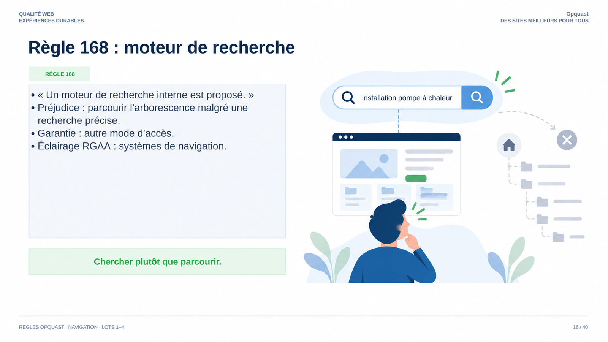
Règle 168
« Un moteur de recherche interne est proposé. »
Préjudice évité
Lorsqu’une personne connaît précisément le contenu recherché sans connaître son emplacement, elle peut être contrainte de parcourir plusieurs niveaux d’arborescence et de deviner le classement adopté par le service.
Garantie recherchée
Le moteur de recherche fournit un autre mode d’accès. Il permet de rechercher un contenu à partir de mots-clés choisis par la personne.
Sa présence ne garantit pas à elle seule la pertinence des résultats.
Éclairage du RGAA
Le critère 12.1 du RGAA demande, pour chaque ensemble de pages et hors cas particuliers, au moins deux systèmes de navigation différents.
Le moteur de recherche peut constituer l’un de ces systèmes. Sa présence seule ne suffit pas à valider le critère.
Ce que montre l’illustration
Une barre de recherche contient la requête « installation pompe à chaleur ».
Elle mène directement vers une page web et est opposée à une arborescence composée de plusieurs dossiers imbriqués.
Message à retenir
Chercher plutôt que parcourir.
Partir des mots de la personne
Imaginons que je cherche une information précise : « installation pompe à chaleur ».
Le site a peut-être classé cette information dans « Habitat », puis « Chauffage », puis « Équipements ». Mais je ne connais ni cette organisation ni le vocabulaire choisi par l’équipe.
Dois-je explorer l’arborescence jusqu’à trouver la bonne rubrique, ou puis-je partir directement des mots que j’ai en tête ?
La règle 168
« Un moteur de recherche interne est proposé. »
La règle apporte un autre mode d’accès au contenu.
Le menu me demande de comprendre l’organisation du site. Le moteur de recherche me permet de formuler mon besoin avec mes propres mots.
Il devient particulièrement utile lorsque je connais :
- un nom de document ;
- une référence ;
- une expression précise ;
- le nom d’une démarche ;
- un mot présent dans le contenu recherché.
Un chemin complémentaire, pas un remplacement
Le moteur de recherche ne dispense pas de construire une arborescence compréhensible.
Certaines personnes souhaitent explorer les rubriques. D’autres connaissent déjà les termes à rechercher. Une même personne peut utiliser le menu dans une situation et la recherche dans une autre.
Ces deux mécanismes se complètent.
La présence du moteur ne garantit pas non plus que le bon résultat apparaîtra immédiatement. Sa pertinence dépend notamment des contenus indexés, du traitement des requêtes et de la présentation des résultats.
La règle 168 pose donc un premier socle : offrir ce mode d’accès.
Rendre le moteur réellement disponible
La vérification ne doit pas se limiter à la page d’accueil.
Le moteur doit rester accessible dans les différents gabarits du site, y compris depuis une page intérieure ou une page produite par un service tiers.
Pour qu’il puisse être utilisé, il faut également vérifier que :
- sa fonction est clairement identifiable ;
- le champ possède une étiquette pertinente ;
- le bouton de validation est compréhensible ;
- le formulaire peut être utilisé au clavier ;
- les contenus importants sont effectivement pris en compte par la recherche.
Ces vérifications complètent la simple présence du moteur.
L’éclairage du RGAA
Le RGAA apporte un éclairage différent.
Son critère 12.1 demande, pour chaque ensemble de pages et hors cas particuliers, au moins deux systèmes de navigation parmi les combinaisons suivantes :
- un menu et un plan du site ;
- un menu et un moteur de recherche ;
- un moteur de recherche et un plan du site.
Le RGAA ne demande donc pas toujours un moteur de recherche en particulier. Il demande une pluralité de systèmes de navigation.
Inversement, respecter la règle Opquast 168 ne suffit pas à valider le critère RGAA. Il faut examiner l’ensemble de pages, le second système présent et l’accessibilité propre du formulaire.
Nous retrouvons ici notre principe : croiser les deux démarches sans les confondre.
Le contrôle à effectuer
Pour cette règle, posons-nous trois questions :
- Le moteur de recherche est-il disponible dans les différents gabarits du site ?
- Permet-il de partir des mots choisis par la personne plutôt que de l’organisation interne du service ?
- Le formulaire de recherche est-il compréhensible et utilisable avec différents modes d’interaction ?
Message à retenir
Chercher plutôt que parcourir.
La règle suivante s’intéressera à ce qui se passe après la recherche : peut-on conserver, retrouver ou partager la page de résultats ?
Slide 17 - Règle 169 : résultats adressables
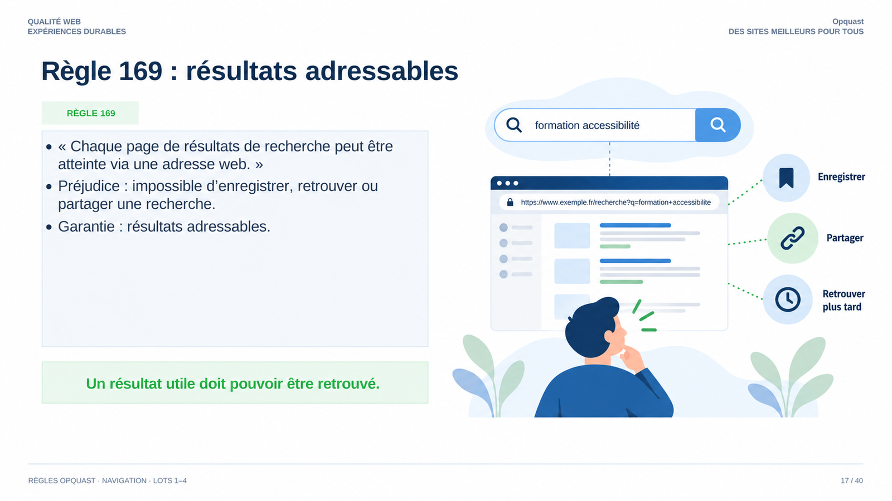
Règle 169
« Chaque page de résultats de recherche peut être atteinte via une adresse web. »
Préjudice évité
Lorsque l’adresse ne conserve pas la recherche effectuée, la personne ne peut pas enregistrer, retrouver ou partager la page de résultats. Elle doit recommencer la recherche et sélectionner de nouveau ses critères.
Garantie recherchée
Une page de résultats adressable peut être atteinte directement à partir de son URL.
Cette adresse doit restaurer la requête et les paramètres nécessaires pour retrouver l’état pertinent de la recherche. La liste des résultats peut néanmoins évoluer avec les contenus du service.
Ce que montre l’illustration
La recherche « formation accessibilité » est associée à l’adresse :
https://www.exemple.fr/recherche?q=formation+accessibilite
Trois usages sont représentés :
- Enregistrer
- Partager
- Retrouver plus tard
Message à retenir
Un résultat utile doit pouvoir être retrouvé.
Faire en sorte que la recherche laisse une trace
Imaginons que je recherche « formation accessibilité ».
Après plusieurs essais, j’obtiens une page de résultats utile. Je souhaite l’enregistrer dans mes favoris ou l’envoyer à une collègue.
Je copie l’adresse affichée dans le navigateur, je l’ouvre dans un nouvel onglet et je découvre une page de recherche vide.
L’adresse existait, mais elle ne permettait pas de retrouver la recherche effectuée.
La règle 169
« Chaque page de résultats de recherche peut être atteinte via une adresse web. »
Le point important est l’expression « peut être atteinte ».
L’adresse doit permettre d’accéder directement à la page de résultats, sans avoir à reproduire auparavant toutes les étapes de la recherche.
Une personne doit pouvoir :
- copier l’adresse ;
- l’enregistrer dans ses favoris ;
- la transmettre ;
- l’ouvrir ultérieurement ;
- recharger la page sans perdre la recherche représentée.
Ce que l’adresse doit conserver
Dans l’exemple de la slide, l’adresse contient la requête :
https://www.exemple.fr/recherche?q=formation+accessibilite
Le paramètre q conserve les mots recherchés.
Lorsque des filtres ou une pagination modifient de manière significative la page de résultats, leur état doit également être représenté dans l’adresse si l’on veut pouvoir retrouver cette page précise.
Cela ne signifie pas que la liste restera identique pendant plusieurs années. Des contenus peuvent être ajoutés, modifiés ou supprimés.
La règle garantit l’adressabilité de la recherche, pas l’immobilité des données.
Une mise en œuvre simple avec GET
La solution recommandée par la fiche Opquast consiste à soumettre le formulaire de recherche avec la méthode HTTP GET.
Les paramètres utiles sont alors transmis dans l’adresse :
- les mots recherchés ;
- les filtres significatifs ;
- la page de résultats consultée.
Cette solution s’appuie directement sur le fonctionnement du navigateur.
D’autres mises en œuvre sont possibles, notamment pour une interface dynamique. Mais modifier visuellement les résultats et changer le texte de l’adresse ne suffit pas.
L’adresse produite doit réellement permettre de reconstruire la recherche lors d’un accès direct.
Vérifier au-delà de la barre d’adresse
Le contrôle peut être réalisé en quelques étapes :
- effectuer une recherche ;
- appliquer les filtres utiles ou changer de page ;
- copier l’adresse obtenue ;
- ouvrir cette adresse dans un nouvel onglet ;
- vérifier que la requête et l’état pertinent sont restaurés ;
- recharger la page ;
- vérifier la cohérence des boutons « Précédent » et « Suivant » du navigateur.
Le contrôle porte sur la recherche reconstruite. Il ne faut pas exiger que les résultats restent identiques si les contenus du service ont évolué.
Message à retenir
Un résultat utile doit pouvoir être retrouvé.
Une fois la recherche retrouvable, une autre question se pose : peut-on la corriger et la relancer directement depuis la page de résultats ?
Slide 18 - Règle 170 : relancer une recherche
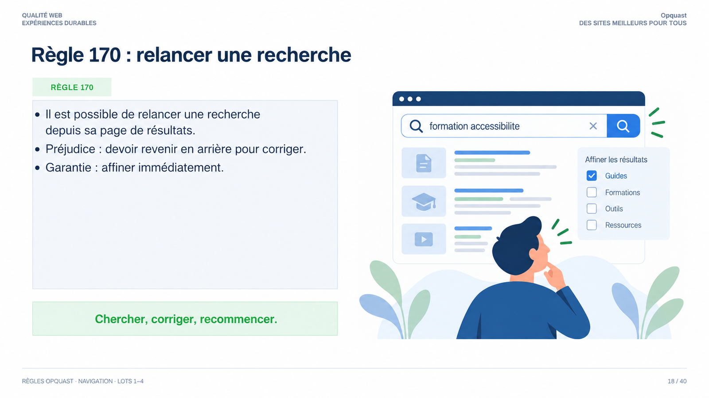
Règle 170
« Il est possible de relancer une recherche depuis sa page de résultats. »
Préjudice évité
Si le formulaire disparaît ou revient vide sur la page de résultats, la personne doit revenir en arrière et ressaisir sa recherche pour corriger ou préciser sa demande.
Garantie recherchée
Sur chaque page de résultats, le formulaire de recherche est :
- présent ;
- prérempli avec la saisie précédente ;
- modifiable ;
- immédiatement validable.
La personne peut ainsi corriger ou affiner sa requête sans recommencer le parcours.
Ce que montre l’illustration
La requête « formation accessibilité » reste affichée au-dessus des résultats.
Un panneau « Affiner les résultats » propose quatre catégories :
- Guides
- Formations
- Outils
- Ressources
Les filtres complètent la recherche, mais ne remplacent pas la possibilité de modifier les mots de la requête.
Message à retenir
Chercher, corriger, recommencer.
Considérer la recherche comme une boucle
Je recherche « formation accessibilité ».
La page de résultats s’affiche, mais la liste est trop large. Je souhaite remplacer « formation » par « formation développeur », corriger une faute ou choisir une autre catégorie.
Que se passe-t-il si le formulaire de recherche a disparu ?
Je dois revenir en arrière, retrouver le formulaire, ressaisir ma requête et espérer conserver le fil de ce que je venais d’observer.
La règle 170
« Il est possible de relancer une recherche depuis sa page de résultats. »
La fiche Opquast précise ce que signifie cette possibilité.
Sur chaque page de résultats :
- le formulaire de recherche est présent ;
- la saisie précédente est conservée ;
- cette saisie reste modifiable ;
- une nouvelle recherche peut être validée immédiatement.
Ces quatre éléments forment le contrôle.
Un simple lien « Nouvelle recherche » menant vers un formulaire vide ne répond pas au même besoin.
Corriger au lieu de recommencer
La personne peut vouloir :
- corriger une faute de frappe ;
- remplacer un mot trop général ;
- ajouter un terme plus précis ;
- retirer un terme qui exclut trop de résultats ;
- modifier une date, une destination ou une catégorie ;
- relancer une recherche qui n’a produit aucun résultat.
Le formulaire prérempli lui permet de partir de l’état précédent au lieu de reconstruire toute sa demande.
Ne pas confondre requête et filtres
La slide montre la requête « formation accessibilité » ainsi que des filtres :
- Guides
- Formations
- Outils
- Ressources
Ces filtres peuvent aider à réduire la liste des résultats.
Mais filtrer une liste et relancer une recherche sont deux actions différentes. La personne doit toujours pouvoir modifier les mots de sa requête et valider immédiatement une nouvelle recherche.
Pour un moteur plus complexe, les critères importants doivent également rester visibles et modifiables. Sur un service de réservation, il peut s’agir des dates, du lieu de départ ou de la destination.
Le contrôle à effectuer
Pour vérifier la règle :
- lancer une première recherche ;
- observer la page de résultats ;
- vérifier que le formulaire y est présent ;
- vérifier que la requête précédente est toujours affichée ;
- modifier un terme ;
- valider directement la nouvelle recherche ;
- recommencer le test depuis une page sans résultat et depuis une page comportant des filtres.
Le test ne consiste donc pas seulement à repérer une loupe ou un lien vers la recherche. Il faut réellement modifier puis relancer la requête depuis la page de résultats.
Message à retenir
Chercher, corriger, recommencer.
Après la recherche et son affinage, la règle suivante proposera une autre forme de réorientation : retrouver une vue structurée du site.
Slide 19 - Règle 171 : plan du site
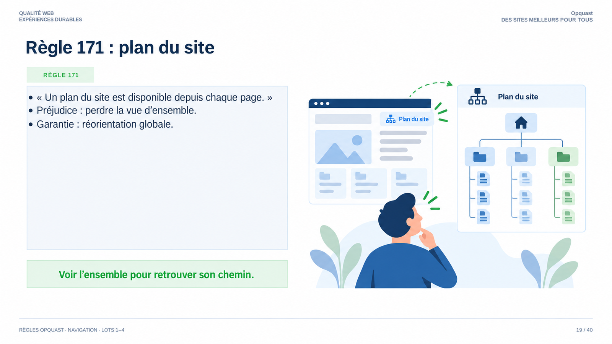
Règle 171
« Un plan du site est disponible depuis chaque page. »
Préjudice évité
Sans plan du site, une personne désorientée peut perdre la vue d’ensemble du service et ne pas disposer d’un moyen structuré pour choisir un nouveau point de départ.
Garantie recherchée
Une page de plan du site présente les principales rubriques et permet d’accéder directement ou indirectement aux pages du service.
Un lien vers ce plan est disponible depuis chaque page. Son emplacement n’est pas imposé, mais il gagne à rester constant.
Structure du plan
Le plan du site s’appuie notamment sur :
- des titres représentant les sections ;
- des listes hiérarchisées ;
- des liens textuels explicites ;
- des liens fonctionnels et à jour.
La représentation peut rester synthétique sans afficher chaque page au même niveau.
Ce que montre l’illustration
Une page web donne accès à un lien intitulé « Plan du site ».
Ce lien ouvre une arborescence organisée en trois colonnes de dossiers représentant les différentes parties du service.
Message à retenir
Voir l’ensemble pour retrouver son chemin.
Retrouver une vue structurée du service
Imaginons que j’arrive sur une page profonde ou sur une page d’erreur.
Le menu ne montre qu’une partie de l’organisation. Le moteur de recherche suppose que je connaisse les mots à saisir. Je souhaite simplement comprendre les grandes rubriques du service et choisir un nouveau point de départ.
C’est le rôle du plan du site.
La règle 171
« Un plan du site est disponible depuis chaque page. »
La règle comporte deux éléments :
- une page de plan du site existe ;
- un lien permettant de l’atteindre est disponible depuis chaque page.
Le lien peut se trouver dans l’en-tête, dans un menu ou dans le pied de page. Son emplacement est libre, mais il gagne à rester constant pour pouvoir être retrouvé facilement.
Il est particulièrement utile sur les pages profondes ainsi que sur les pages d’erreur 403 et 404.
Représenter sans tout entasser
Un plan du site utile reflète l’organisation des rubriques.
Il peut présenter :
- les grandes sections ;
- leurs principales sous-rubriques ;
- les pages transverses comme le contact ou les mentions légales ;
- des liens permettant de poursuivre vers des niveaux plus détaillés.
Il ne doit pas nécessairement afficher chaque page individuelle dans une arborescence immense.
La fiche Opquast demande que toutes les pages soient accessibles directement ou indirectement depuis le plan. La représentation visible peut donc rester synthétique tout en donnant accès à l’ensemble du service.
Une page de navigation destinée aux personnes
Le plan du site est une page navigable.
Il doit s’appuyer sur :
- des intitulés de liens explicites ;
- des titres qui représentent les sections ;
- des listes structurées ;
- une hiérarchie compréhensible ;
- des liens fonctionnels et à jour.
Une présentation en colonnes, comme dans l’illustration, peut faciliter la lecture visuelle. Elle ne suffit pas à elle seule à restituer la hiérarchie : celle-ci doit également être portée par la structure du document.
L’éclairage du RGAA
Dans le RGAA, le plan du site peut constituer l’un des systèmes de navigation utilisés pour proposer plusieurs chemins d’accès.
Le RGAA vérifie également que le plan :
- représente l’architecture générale du site ;
- contient des liens fonctionnels ;
- utilise des intitulés correspondant à leur destination ;
- reste accessible à partir d’une fonctionnalité cohérente dans l’ensemble de pages.
Respecter la règle Opquast 171 contribue donc à la qualité de navigation, mais ne suffit pas à valider tous ces contrôles.
Le contrôle à effectuer
Pour vérifier cette règle :
- rechercher le lien « Plan du site » depuis plusieurs types de pages ;
- inclure une page profonde, une page d’erreur et, si nécessaire, une page produite par un service tiers ;
- ouvrir le plan et vérifier que les grandes rubriques sont représentées ;
- suivre plusieurs liens vers différents niveaux ;
- vérifier que les pages non affichées directement restent accessibles par les rubriques proposées ;
- contrôler que les titres et les listes traduisent correctement la hiérarchie.
Message à retenir
Voir l’ensemble pour retrouver son chemin.
La slide suivante précisera une distinction importante : ce plan destiné aux personnes n’est pas le sitemap XML destiné principalement aux outils techniques.
Slide 20 - Plan du site ≠ sitemap XML
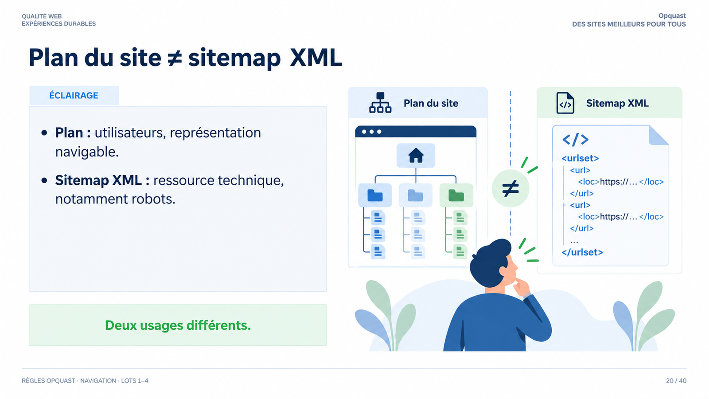
Idée principale
Le plan du site destiné aux personnes et le sitemap XML destiné aux outils techniques sont deux ressources différentes. L’une ne remplace pas l’autre.
Plan du site
Le plan du site est une page, ou un ensemble de pages, proposant une représentation navigable des rubriques.
Il permet aux personnes de comprendre l’organisation du service et d’activer les liens qui les intéressent.
Il correspond à la règle Opquast 171.
Sitemap XML
Le sitemap XML est un fichier de données signalant des URL aux robots des moteurs de recherche.
Il utilise notamment les éléments :
<urlset><url><loc>
Il correspond à la règle Opquast 220. Sa présence ne garantit pas l’indexation des URL indiquées.
Ce que montre l’illustration
Deux panneaux sont séparés par un signe « différent de ».
À gauche, une arborescence représente le plan du site destiné aux personnes.
À droite, un extrait de fichier XML représente le sitemap destiné aux outils techniques.
Message à retenir
Deux usages différents.
Un même mot pour deux ressources différentes
Imaginons cette conversation :
« Le plan du site est-il disponible ? »
« Oui, le fichier sitemap.xml a été généré. »
La réponse décrit une ressource technique utile, mais elle ne répond pas encore à la règle 171.
Pour cette règle, une personne doit pouvoir ouvrir une page de plan du site, comprendre l’organisation proposée et suivre ses liens.
Le plan du site destiné aux personnes
Le plan du site est une page, ou un ensemble de pages, intégré au service.
Il propose :
- des rubriques compréhensibles ;
- des liens textuels explicites ;
- une organisation hiérarchique ;
- une représentation navigable des principales parties du service ;
- un accès direct ou indirect aux autres pages.
Il est conçu pour être consulté et parcouru par des personnes, y compris avec un clavier ou une technologie d’assistance lorsque son implémentation est accessible.
La règle 171 demande qu’un lien permettant d’atteindre ce plan soit disponible depuis chaque page.
Le sitemap XML destiné aux outils techniques
Le sitemap XML est un fichier de données.
Il contient principalement une liste d’adresses représentées par des éléments comme :
<urlset>;<url>;<loc>.
Il peut aussi contenir certaines métadonnées facultatives.
Cette ressource aide les robots des moteurs de recherche à découvrir les URL que le site souhaite leur signaler. Elle n’est pas conçue comme une interface de navigation pour les personnes.
Sa présence ne garantit pas que toutes les URL seront explorées ou indexées.
Deux règles Opquast distinctes
La distinction apparaît directement dans le référentiel.
- Règle 171 : un plan du site est disponible depuis chaque page.
- Règle 220 : le site propose un fichier sitemap indiquant les contenus à explorer.
Ces deux règles portent sur deux objets différents.
Un projet peut proposer les deux ressources. Mais l’une ne permet pas de déclarer automatiquement l’autre satisfaite.
Le contrôle à effectuer
Pour éviter la confusion, posons deux questions séparées.
Pour la règle 171
- Existe-t-il une page de plan du site destinée aux personnes ?
- Un lien vers cette page est-il disponible depuis chaque page ?
- Le plan est-il compréhensible et navigable ?
Pour la règle 220
- Existe-t-il un fichier sitemap destiné aux outils d’indexation ?
- Contient-il les URL que le service souhaite faire explorer ?
- Est-il disponible à l’emplacement prévu ou déclaré dans le fichier
robots.txt?
Le premier contrôle porte sur un mécanisme de navigation. Le second porte sur une ressource technique.
Message à retenir
Deux usages différents.
Le plan du site aide les personnes à naviguer. Le sitemap XML aide les outils techniques à découvrir des URL. La slide suivante réunira les quatre règles du bloc consacré aux chemins de réorientation.
Slide 21 - Synthèse B
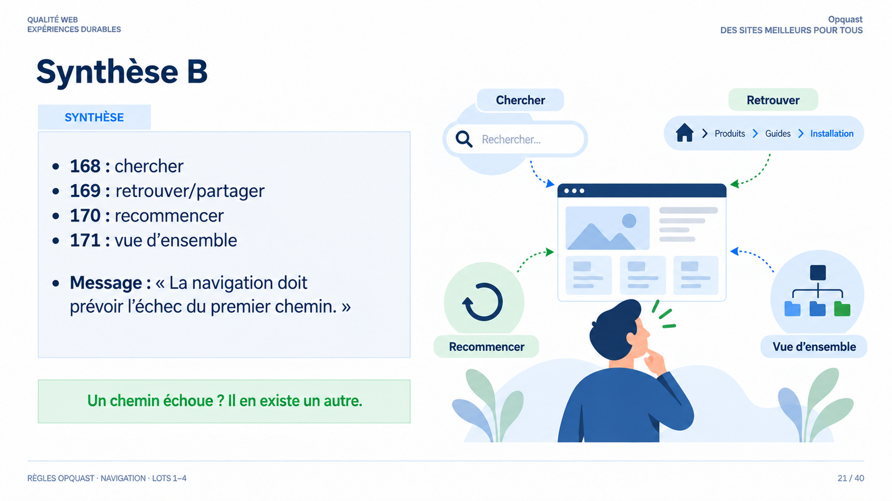
Idée principale
Cette slide récapitule les quatre règles du bloc consacré aux différents moyens de chercher et de se réorienter.
Elles remplissent des fonctions complémentaires lorsque le premier chemin emprunté ne permet pas d’atteindre le contenu attendu.
Les quatre règles rappelées
- Règle 168 - Chercher : proposer un moteur de recherche interne comme autre moyen d’accéder aux contenus.
- Règle 169 - Retrouver ou partager : rendre une page de résultats atteignable par une adresse web.
- Règle 170 - Recommencer : permettre de modifier la recherche précédente et de la relancer depuis la page de résultats.
- Règle 171 - Vue d’ensemble : proposer depuis chaque page un accès au plan du site.
Ces règles ne représentent pas quatre chemins équivalents. Elles permettent de chercher autrement, de conserver un résultat, d’ajuster une requête ou de retrouver une représentation structurée du service.
Message affiché
« La navigation doit prévoir l’échec du premier chemin. »
L’échec désigne ici un parcours qui ne répond pas au besoin ou au vocabulaire de l’utilisateur. Il ne signifie pas que l’utilisateur a commis une erreur.
Ce que montre l’illustration
Une personne observe une page web placée au centre de quatre représentations :
- un champ de recherche légendé « Chercher » ;
- un fil d’Ariane allant de l’accueil à « Produits », « Guides » puis « Installation », légendé « Retrouver » ;
- une flèche circulaire légendée « Recommencer » ;
- une arborescence légendée « Vue d’ensemble ».
Des flèches relient ces quatre représentations à la page web centrale.
Message à retenir
Un chemin échoue ? Il en existe un autre.
Quand le premier chemin ne fonctionne pas
Imaginons que vous cherchiez une procédure précise.
Vous ouvrez une rubrique du menu, mais son contenu ne correspond pas à ce que vous attendiez. Vous essayez un autre intitulé, puis un autre. À quel moment le service vous propose-t-il une autre manière d’avancer ?
La formule affichée sur la slide est volontairement forte :
La navigation doit prévoir l’échec du premier chemin.
L’échec dont nous parlons n’est pas celui de l’utilisateur. C’est l’échec d’un chemin qui ne correspond pas à son vocabulaire, à son point d’entrée ou à sa manière de chercher.
Quatre règles, quatre fonctions complémentaires
Ces quatre règles ne créent pas quatre itinéraires équivalents. Elles interviennent à différents moments du parcours.
Règle 168 - Chercher autrement
Le moteur de recherche offre une autre voie d’accès lorsque le menu ne permet pas de trouver rapidement le contenu attendu.
L’utilisateur peut formuler son besoin avec ses propres mots au lieu de devoir deviner le classement choisi par le site.
La règle garantit la présence de cette possibilité de recherche. Elle ne garantit pas, à elle seule, la pertinence ou l’exhaustivité des résultats.
Règle 169 - Conserver ou partager un résultat
Lorsqu’une recherche produit une page de résultats utile, son adresse web doit permettre de l’atteindre à nouveau.
L’utilisateur peut ainsi conserver cette adresse dans ses favoris ou la transmettre à une autre personne.
La règle porte sur l’adressabilité de la page. Elle ne promet pas que les résultats resteront identiques dans le temps.
Règle 170 - Corriger sans recommencer le parcours
Une première requête peut être trop large, trop précise ou comporter une erreur.
Depuis la page de résultats, l’utilisateur doit pouvoir modifier la saisie précédente et lancer immédiatement une nouvelle recherche.
Le service accompagne ainsi la reformulation au lieu d’imposer un retour vers le formulaire initial.
Règle 171 - Retrouver une représentation du service
Lorsqu’une personne ne sait plus dans quelle rubrique chercher, le plan du site lui propose une représentation structurée des contenus.
Il donne accès, directement ou indirectement, aux pages du service grâce à des liens organisés par rubriques.
Ce n’est pas nécessairement une liste exhaustive affichée sur un seul écran. C’est un moyen de comprendre l’organisation et de reprendre son parcours.
Un dispositif de récupération
Ensemble, ces règles répondent à plusieurs situations :
- le menu ne correspond pas au vocabulaire de l’utilisateur ;
- la première recherche doit être reformulée ;
- une page de résultats doit être conservée ou partagée ;
- l’utilisateur a besoin de retrouver une vue structurée du service.
Elles ne garantissent pas que chaque recherche aboutira. Elles évitent qu’un premier chemin infructueux devienne immédiatement une impasse.
Message à retenir
Un chemin échoue ? Il en existe un autre.
La qualité de navigation ne consiste pas à imposer un parcours idéal. Elle consiste à proposer des moyens de chercher, d’ajuster, de conserver et de se réorienter.
La slide suivante abordera un autre type de difficulté : même lorsque la bonne page est trouvée, faut-il encore traverser tous les éléments répétés avant d’atteindre son contenu ?
Slide 22 - Comment éviter de tout reparcourir ?
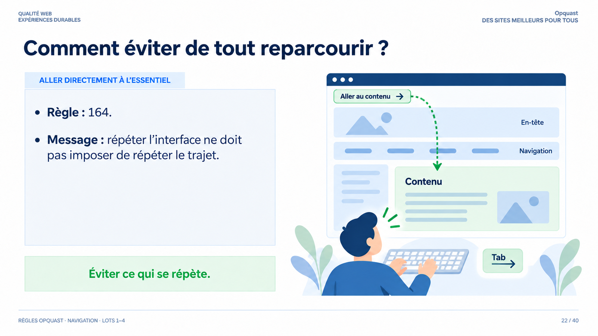
Idée principale
Cette slide ouvre le bloc consacré aux liens d’accès rapide et introduit la règle Opquast 164.
Lorsqu’une interface répète les mêmes blocs sur plusieurs pages, elle ne doit pas obliger les personnes naviguant séquentiellement à retraverser les mêmes éléments avant d’atteindre le contenu principal.
Principe présenté
Répéter l’interface ne doit pas imposer de répéter le trajet.
Les liens d’accès rapide sont placés au début du code source. Ils permettent de rejoindre plus rapidement certaines zones utiles de la page, comme le contenu principal, le menu ou la recherche, selon l’organisation de l’interface.
Ce que montre l’illustration
Une personne utilise un clavier devant une page web composée de trois zones successives :
- un en-tête ;
- une zone de navigation ;
- une zone de contenu.
Au début de la page, un lien intitulé « Aller au contenu » est mis en évidence.
Le repère « Tab » indique que ce lien peut recevoir le focus pendant la navigation au clavier. Une fois activé, il permet de déplacer la navigation vers la zone de contenu sans parcourir les éléments interactifs de l’en-tête et du menu.
Une flèche verte en pointillés représente ce raccourci.
Message à retenir
Éviter ce qui se répète.
Le même écran, mais pas le même trajet
Prenons une page classique.
Elle commence par un logo, des liens de service, un moteur de recherche, puis un menu comportant plusieurs entrées. Le contenu propre à la page arrive seulement après ces éléments.
Avec un pointeur, nous pouvons généralement viser directement la zone qui nous intéresse.
Au clavier, le déplacement suit une succession d’éléments interactifs. Sans raccourci prévu par la page, il peut être nécessaire de traverser les mêmes liens à chaque changement de page avant d’atteindre le contenu principal.
La question de cette séquence est donc :
Comment éviter de tout reparcourir ?
La stabilité crée aussi de la répétition
Nous avons vu que des blocs de navigation stables facilitent le repérage.
Mais cette stabilité produit également des éléments répétés : même en-tête, même recherche, même menu et mêmes liens de service.
Le problème n’est pas leur répétition visuelle. Le problème apparaît lorsque leur présence impose systématiquement le même parcours séquentiel.
Répéter l’interface ne doit pas imposer de répéter le trajet.
Le rôle de la règle 164
La règle 164 demande que chaque page contienne des liens d’accès rapide placés au début du code source.
Ces liens proposent des raccourcis vers les zones utiles de la page, par exemple :
- le contenu principal ;
- le menu principal ;
- le moteur de recherche.
Les destinations nécessaires dépendent de l’organisation réelle de la page. Il ne s’agit pas d’ajouter mécaniquement les mêmes liens partout, mais de permettre d’éviter les éléments qui précèdent inutilement la zone recherchée.
Ce que montre la slide
Le visuel représente une personne naviguant au clavier.
La page contient successivement un en-tête, une zone de navigation puis le contenu. Un lien intitulé « Aller au contenu » permet de passer directement des premiers éléments de la page à la zone de contenu.
Ce lien ne supprime ni l’en-tête ni la navigation. Il permet simplement de ne pas avoir à les retraverser.
Un bénéfice qui ne concerne pas un seul public
Les liens d’accès rapide sont utiles aux personnes qui parcourent la page au clavier ou selon une lecture linéaire ou semi-linéaire.
Ils ne sont pas réservés aux utilisateurs de lecteurs d’écran. Une personne voyante qui utilise le clavier doit également pouvoir les repérer et les activer.
Nous préciserons leur visibilité et leur fonctionnement dans les slides suivantes.
Message à retenir
Éviter ce qui se répète.
Une interface peut conserver des repères stables tout en proposant un raccourci vers ce qui change réellement d’une page à l’autre : son contenu.
Slide 23 - Règle 164 : liens d’accès rapide
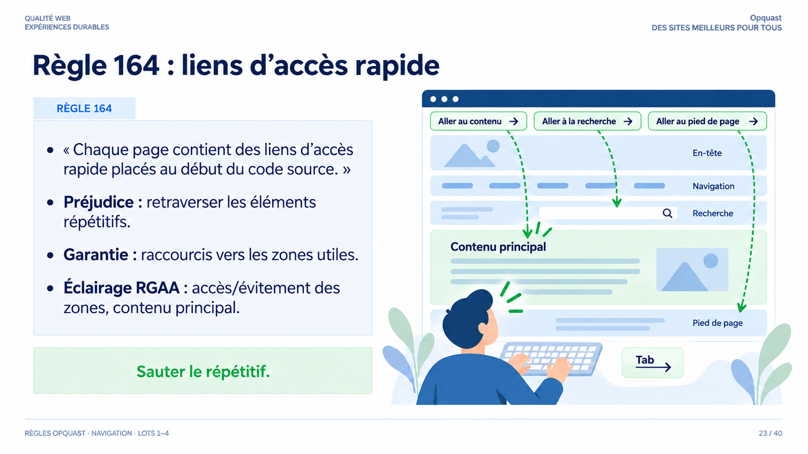
Idée principale
La règle Opquast 164 demande que chaque page contienne des liens d’accès rapide placés au début du code source.
Ces raccourcis permettent d’atteindre certaines zones utiles sans retraverser les éléments interactifs répétés en début de page.
Préjudice et garantie
Le préjudice présenté est l’obligation de parcourir à nouveau les mêmes éléments, comme l’en-tête ou le menu, avant d’atteindre la zone recherchée.
La garantie apportée est la présence de raccourcis vers les zones utiles, choisies selon l’organisation de la page.
Un lien d’accès rapide doit :
- être rencontré avant les éléments qu’il permet d’éviter ;
- porter un libellé compréhensible ;
- être visible ou devenir lisiblement visible lorsqu’il reçoit le focus ;
- conduire effectivement à la zone annoncée ;
- permettre de poursuivre la lecture et la navigation au clavier depuis cette zone.
Éclairage RGAA
Le critère RGAA 12.6 vérifie que les grandes zones répétées peuvent être atteintes ou évitées. Les liens d’accès rapide constituent un mécanisme possible parmi plusieurs.
Le critère RGAA 12.7 vérifie spécifiquement la présence et le fonctionnement d’un lien permettant d’éviter la zone de contenu principal ou d’y accéder.
Ces rapprochements ne rendent pas la règle Opquast et les critères RGAA équivalents.
Ce que montre l’illustration
Une page web est divisée en cinq zones :
- l’en-tête ;
- la navigation ;
- la recherche ;
- le contenu principal ;
- le pied de page.
Trois liens sont placés au début de la page :
- « Aller au contenu » ;
- « Aller à la recherche » ;
- « Aller au pied de page ».
Des flèches vertes en pointillés relient chaque lien à sa destination.
Le repère « Tab » et la personne utilisant un clavier représentent l’accès à ces raccourcis pendant la navigation au clavier.
Le lien vers le pied de page est ici un exemple de destination possible. La règle ne l’impose pas systématiquement.
Message à retenir
Sauter le répétitif.
Un raccourci doit réellement raccourcir le parcours
Ouvrons une page et utilisons uniquement le clavier.
Quel est le premier élément interactif qui reçoit le focus ? Le lien vers le logo ? Un lien de service ? Le premier élément du menu ?
Sans mécanisme d’accès rapide, le contenu propre à la page peut n’être atteint qu’après avoir parcouru une succession d’éléments déjà rencontrés sur les pages précédentes.
La règle 164 répond à cette répétition :
Chaque page contient des liens d’accès rapide placés au début du code source.
Être rencontré avant les éléments répétitifs
Les liens d’accès rapide doivent apparaître au début de l’ordre de navigation, avant les autres liens et formulaires de la page.
Leur emplacement est essentiel. Un lien « Aller au contenu » placé après le menu ne permet plus d’éviter ce menu.
L’objectif est que la personne puisse choisir rapidement sa destination avant d’entrer dans les blocs récurrents.
Choisir les raccourcis utiles à la page
Selon l’organisation de l’interface, les liens peuvent permettre d’atteindre :
- le contenu principal ;
- le menu principal ;
- le moteur de recherche ;
- éventuellement une autre zone dont l’accès rapide répond à un usage réel.
Il ne s’agit pas d’ajouter automatiquement la même liste sur tous les sites.
Par exemple, si le contenu principal suit immédiatement l’en-tête sans aucun élément interactif intermédiaire, le trajet à éviter n’est pas le même que sur une page comportant un menu très développé.
Le visuel présente également un accès au pied de page. C’est un raccourci possible, mais la règle Opquast ne l’impose pas systématiquement.
Rester perceptible au clavier
Les liens peuvent être visibles dès le chargement de la page.
Ils peuvent aussi être masqués visuellement au départ. Dans ce cas, ils doivent apparaître de manière lisible et prévisible lorsqu’ils reçoivent le focus.
Un utilisateur voyant qui navigue au clavier doit savoir quel lien il s’apprête à activer.
La slide suivante reviendra précisément sur ce point.
Atteindre la zone ne suffit pas
L’activation du lien doit produire un résultat utilisable.
Il faut pouvoir reprendre la lecture et poursuivre la navigation au clavier depuis la zone annoncée.
Un lien qui fait seulement défiler visuellement la page, mais laisse la navigation clavier au début du document, n’assure pas correctement sa fonction.
Vérifier toute la chaîne
Pour contrôler le dispositif :
- ouvrir la page et commencer une navigation au clavier ;
- vérifier que les liens d’accès rapide sont rencontrés avant les autres éléments interactifs ;
- vérifier qu’ils sont lisibles lorsqu’ils reçoivent le focus ;
- contrôler que chaque libellé annonce clairement sa destination ;
- activer chaque lien ;
- poursuivre la navigation pour vérifier qu’elle reprend bien depuis la zone annoncée ;
- répéter le contrôle sur plusieurs gabarits de pages.
Éclairage RGAA
Le rapprochement avec le RGAA porte sur deux exigences distinctes.
Le critère 12.6 vérifie que les grandes zones répétées peuvent être atteintes ou évitées. Les liens d’accès rapide constituent un mécanisme possible parmi plusieurs.
Le critère 12.7 vérifie spécifiquement la présence d’un lien permettant d’éviter la zone de contenu principal ou d’y accéder. Il contrôle également sa cohérence entre les pages, sa visibilité et son fonctionnement.
On croise donc la règle Opquast et ces critères lors de l’analyse, sans les déclarer équivalents.
Message à retenir
Sauter le répétitif.
La qualité du raccourci ne se mesure pas à la présence d’un lien dans le code. Elle se vérifie dans le parcours complet : le trouver, le comprendre, l’activer et poursuivre depuis la bonne zone.
Slide 24 - Pas seulement pour les lecteurs d’écran
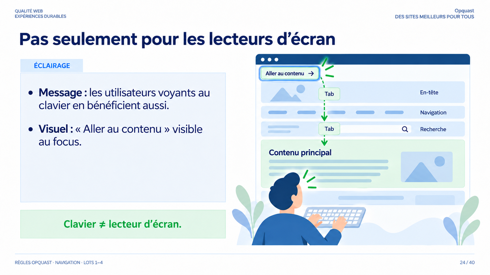
Idée principale
Les liens d’accès rapide ne sont pas réservés aux personnes utilisant un lecteur d’écran.
Une personne qui regarde l’écran peut également naviguer au clavier. Elle doit pouvoir voir le lien atteint et identifier l’élément qui possède le focus.
Deux informations visuelles nécessaires
Lorsqu’un lien d’accès rapide reçoit le focus :
- le lien doit être visible, ou devenir visible s’il était masqué au chargement ;
- un indicateur visuel doit montrer que ce lien possède actuellement le focus ;
- son libellé doit permettre de comprendre sa destination.
La visibilité du lien et celle de l’indicateur de focus sont deux besoins complémentaires.
Un lien affiché sans focus perceptible ne permet pas de suivre le parcours clavier. Un indicateur appliqué à un lien qui reste hors écran ne fournit pas davantage de repère utilisable.
Ce que montre l’illustration
Une page web présente successivement les zones suivantes :
- l’en-tête ;
- la navigation ;
- la recherche ;
- le contenu principal.
Au début de la page, le lien « Aller au contenu » est affiché avec un encadrement bleu et vert. Cet encadrement indique qu’il possède le focus.
Deux repères « Tab » et des flèches vertes représentent la navigation au clavier vers le contenu principal.
La touche Tab permet de déplacer le focus. L’activation du lien constitue une action distincte, généralement réalisée avec la touche Entrée.
Point de vigilance
Masquer visuellement un lien ne doit pas le retirer de la navigation au clavier ni de l’arbre d’accessibilité.
Le lien peut aussi rester visible en permanence. Le masquage initial n’est pas une obligation.
Message à retenir
Clavier ≠ lecteur d’écran.
Une personne qui navigue au clavier peut suivre son parcours directement à l’écran. Elle a besoin de voir le lien atteint et le focus qui l’identifie.
Pouvoir utiliser le clavier sans perdre la page de vue
Faisons une expérience très simple.
Ouvrons une page, posons la souris et appuyons sur la touche Tab.
Qu’est-ce qui change à l’écran ? Quel élément vient de recevoir le focus ? Pouvons-nous comprendre immédiatement ce qui sera activé si nous appuyons sur Entrée ?
Si rien n’apparaît, la personne qui navigue visuellement au clavier ne sait pas où elle se trouve dans le parcours.
Le clavier ne suppose pas un lecteur d’écran
Les liens d’accès rapide ne sont pas réservés aux personnes non-voyantes.
Une personne peut utiliser le clavier parce qu’elle ne peut pas utiliser un dispositif de pointage, parce qu’elle rencontre une contrainte temporaire ou simplement parce que ce mode de navigation lui convient mieux.
Cette personne peut regarder l’écran. Elle a donc besoin de voir :
- le lien d’accès rapide lorsqu’il est atteint ;
- son libellé ;
- l’indicateur montrant qu’il possède le focus.
À l’inverse, certaines personnes peuvent combiner perception visuelle, agrandissement et restitution vocale. Il ne faut pas enfermer les usages dans deux catégories étanches.
Deux éléments visuels à distinguer
Lorsque le premier lien reçoit le focus, deux choses doivent être perceptibles.
Le lien lui-même
Si le lien « Aller au contenu » était masqué au chargement, il doit devenir visible dans une position prévisible.
La personne doit pouvoir lire son libellé et comprendre sa destination.
L’indicateur de focus
Une bordure, un halo ou un autre traitement visuel doit signaler que ce lien est actuellement sélectionné dans le parcours clavier.
Afficher le lien sans montrer qu’il possède le focus ne suffit pas. Montrer un indicateur de focus sur un élément qui reste hors écran ne suffit pas davantage.
La règle 164 porte ici sur l’accès rapide et sa visibilité lors de l’utilisation. La règle 165 généralisera ensuite l’exigence d’un focus visible à tous les éléments interactifs.
Masqué visuellement ne signifie pas supprimé
Un lien d’accès rapide peut rester visible en permanence. C’est une solution parfaitement valable.
S’il est masqué au chargement, la technique choisie doit préserver sa présence dans la navigation au clavier et permettre son affichage à la prise de focus.
Il ne faut donc pas appliquer un masquage qui retire le lien de l’affichage et de l’arbre d’accessibilité, puis supposer qu’un lecteur d’écran le retrouvera malgré tout.
La bonne question n’est pas seulement : « Le lien existe-t-il dans le code ? »
Il faut demander :
- peut-il recevoir le focus ?
- devient-il visible ?
- son focus est-il perceptible ?
- son libellé est-il compréhensible ?
- peut-il être activé ?
- l’activation conduit-elle réellement à la bonne zone ?
Lire le visuel
Sur la slide, le lien « Aller au contenu » apparaît en haut de la page avec un encadrement visible.
Le premier repère « Tab » correspond à l’arrivée du focus sur ce lien.
Après son activation, la navigation rejoint la zone de contenu principal. Le second repère « Tab » illustre la poursuite du parcours depuis cette zone.
La touche Tab déplace donc le focus. Elle n’active pas elle-même le lien.
Message à retenir
Clavier ≠ lecteur d’écran.
Concevoir un lien d’accès rapide, c’est fournir une information exploitable par les technologies d’assistance, mais aussi un repère visible pour les personnes qui suivent leur parcours directement à l’écran.
La slide suivante identifiera les grandes zones de la page qu’il doit être possible d’atteindre ou d’éviter.
Slide 25 - Atteindre ou éviter les grandes zones
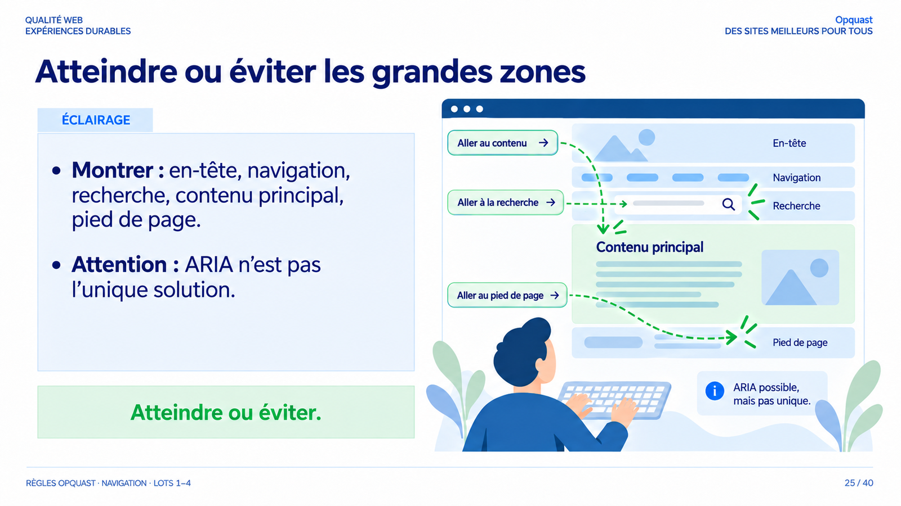
Idée principale
Une page peut comporter plusieurs grandes zones fonctionnelles. Lorsqu’elles sont présentes, ces zones doivent pouvoir être identifiées, atteintes ou évitées selon les mécanismes proposés.
La structure sémantique fournit une carte de la page aux technologies d’assistance. Les liens d’accès rapide fournissent des raccourcis explicites vers certaines zones.
Les cinq zones représentées
La slide montre cinq zones fréquentes :
- l’en-tête général ;
- la navigation ;
- la recherche ;
- le contenu principal ;
- le pied de page général.
Des éléments HTML sémantiques peuvent identifier plusieurs de ces régions :
<header>pour l’en-tête général lorsqu’il se trouve dans le contexte global de la page ;<nav>pour une zone de navigation importante ;<main>pour le contenu principal ;<footer>pour le pied de page général lorsqu’il se trouve dans le contexte global de la page.
La zone de recherche peut également être identifiée par une structure HTML adaptée ou un rôle search.
Deux couches complémentaires
Les landmarks permettent à certaines technologies d’assistance de présenter les grandes régions et de naviguer entre elles.
Ils ne transforment pas automatiquement ces régions en étapes accessibles avec la touche Tab.
Les liens d’accès rapide fournissent le chemin complémentaire : ils permettent d’atteindre directement une zone déterminée et d’y poursuivre la navigation au clavier.
ARIA n’est pas l’unique solution
ARIA peut servir à exposer la fonction d’une région lorsqu’une structure native adaptée n’est pas utilisée.
Cependant, un élément HTML sémantique peut déjà produire le landmark attendu. Ajouter systématiquement le rôle ARIA équivalent est alors généralement redondant.
Selon la zone et le contexte, d’autres mécanismes peuvent aussi permettre de l’atteindre ou de l’éviter :
- un titre décrivant la zone ;
- un bouton permettant de la masquer ;
- un lien d’évitement ;
- un lien d’accès rapide.
Un rôle ARIA ne remplace pas un raccourci clavier lorsqu’un tel raccourci est nécessaire.
Ce que montre l’illustration
Une page web est découpée en cinq zones :
- en-tête ;
- navigation ;
- recherche ;
- contenu principal ;
- pied de page.
Trois liens sont placés sur le côté gauche :
- « Aller au contenu » ;
- « Aller à la recherche » ;
- « Aller au pied de page ».
Des flèches vertes en pointillés relient chaque lien à sa destination.
L’en-tête et la navigation sont identifiés dans la page, mais aucun lien spécifique ne les cible dans cette illustration.
Une note indique : « ARIA possible, mais pas unique. »
Message à retenir
Atteindre ou éviter.
La sémantique décrit les grandes zones. Les liens d’accès rapide fournissent des chemins directs. Ces deux couches répondent à des besoins complémentaires.
Transformer la mise en page en structure compréhensible
Regardons une page sans tenir compte de ses couleurs, de ses espacements ou de ses bordures.
Comment savons-nous où commence la navigation ? Où se trouve la recherche ? Quelle partie contient le sujet principal ? Où commence le pied de page ?
Visuellement, la mise en page apporte ces repères. Pour qu’une technologie d’assistance puisse également les exploiter, ces grandes zones doivent être identifiables dans le code.
Cinq zones fréquentes, lorsqu’elles existent
La slide représente cinq grandes zones fonctionnelles.
L’en-tête
L’en-tête général contient habituellement l’identité du service et certains outils communs.
Un élément <header> placé directement dans le contexte de la page peut produire un landmark banner.
Tous les éléments <header> ne jouent cependant pas ce rôle. Un en-tête placé dans un article ou une section décrit cette partie du contenu, pas l’en-tête général du site.
La navigation
Un élément <nav> identifie une zone contenant des liens de navigation importants.
Une page peut comporter plusieurs navigations. Lorsqu’elles ont des fonctions différentes, elles doivent pouvoir être distinguées par un nom compréhensible.
La recherche
La zone de recherche regroupe les éléments permettant d’interroger le service.
Elle peut être identifiée par un élément HTML adapté ou par un rôle search, selon la structure retenue.
Le contenu principal
L’élément <main> identifie le contenu principal propre à la page.
Cette zone constitue généralement la destination du lien « Aller au contenu ».
Le pied de page
Le pied de page général contient souvent des informations communes au service.
Comme pour l’en-tête, un élément <footer> produit un landmark contentinfo uniquement lorsqu’il représente le pied de page général, et non le pied d’un article ou d’une section interne.
Une carte sémantique n’est pas un lien clavier
Cette distinction est essentielle.
Les landmarks permettent notamment à certaines technologies d’assistance de présenter une liste des grandes régions et de naviguer de l’une à l’autre.
Mais un élément <main> ou <nav> ne devient pas automatiquement une étape de la navigation avec Tab.
Pour fournir un raccourci directement utilisable au clavier, la page doit proposer un lien d’accès rapide fonctionnel vers la zone concernée.
Nous avons donc deux couches complémentaires :
- la structure sémantique décrit les grandes zones ;
- les liens d’accès rapide fournissent des raccourcis explicites vers certaines de ces zones.
ARIA n’est pas l’unique solution
Le message de la slide ne signifie pas qu’ARIA est inutile.
Il signifie qu’un objectif d’accès ou d’évitement peut être satisfait par plusieurs mécanismes.
Pour une zone donnée, le RGAA envisage notamment :
- un landmark correspondant à sa fonction ;
- un titre permettant de comprendre sa nature ;
- un bouton permettant de la masquer ;
- un lien permettant de l’éviter ;
- un lien d’accès rapide permettant de l’atteindre.
Un élément HTML sémantique peut déjà produire le landmark nécessaire. Ajouter le rôle ARIA équivalent n’apporte alors généralement aucune information supplémentaire.
À l’inverse, un rôle ARIA ajouté sur un conteneur ne corrige pas une structure incohérente et ne crée pas à lui seul un raccourci clavier.
Lire le visuel
Le visuel représente les cinq zones de la page :
- l’en-tête ;
- la navigation ;
- la recherche ;
- le contenu principal ;
- le pied de page.
Trois liens permettent d’atteindre directement le contenu, la recherche et le pied de page.
Les flèches vertes représentent ces raccourcis.
L’en-tête et la navigation restent identifiés comme des zones, mais aucun lien spécifique ne les cible dans cette illustration. Le visuel montre donc bien que toutes les zones n’ont pas nécessairement le même mécanisme d’accès.
Vérifier les deux couches
Pour contrôler cette organisation :
- identifier les grandes zones réellement présentes ;
- vérifier que leur fonction est exposée dans la structure du document ;
- distinguer les zones de même nature lorsqu’il en existe plusieurs ;
- tester les liens d’accès rapide au clavier ;
- vérifier que la navigation peut reprendre depuis chaque cible.
Message à retenir
Atteindre ou éviter.
La sémantique fournit une carte de la page. Les liens d’accès rapide fournissent des chemins. La qualité vient de leur articulation, pas de l’ajout mécanique d’attributs ARIA.
La slide suivante posera une nouvelle question : une fois la bonne zone atteinte, toutes ses fonctionnalités sont-elles réellement utilisables au clavier ?
Slide 26 - Puis-je tout faire au clavier ?
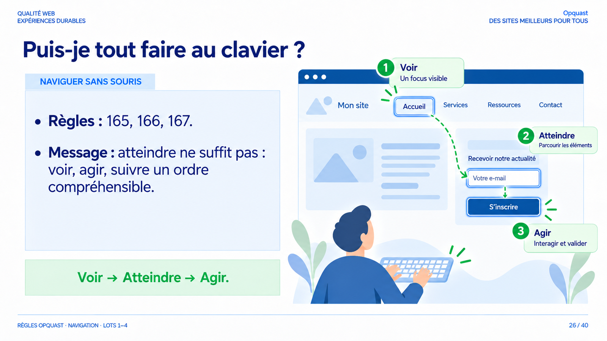
Idée principale
Cette slide ouvre le bloc consacré à la navigation sans souris et réunit les règles Opquast 165, 166 et 167.
Une expérience utilisable au clavier ne se résume pas au passage du focus sur les composants. La personne doit pouvoir repérer sa position, atteindre les contrôles dans un ordre compréhensible et accomplir les actions attendues.
Trois règles complémentaires
- Règle 165 - Voir : le focus clavier n’est ni supprimé ni masqué.
- Règle 166 - Atteindre et agir : la navigation au clavier permet d’interagir avec l’intégralité des contenus et services.
- Règle 167 - Suivre : la navigation au clavier s’effectue dans un ordre prévisible.
Le mémo « Voir - Atteindre - Agir » décrit l’expérience de la personne. Il ne constitue pas une correspondance mot à mot avec les trois règles.
Ce que montre l’illustration
À droite, une personne utilise un clavier devant une page intitulée « Mon site ».
Le parcours est représenté en trois étapes :
- Voir : le lien « Accueil » est entouré d’un indicateur de focus visible.
- Atteindre : une flèche verte conduit au champ « Votre e-mail » et représente le parcours entre les éléments interactifs.
- Agir : le parcours aboutit au bouton « S’inscrire », qui représente l’interaction et la validation de la tâche.
Les autres éléments visibles du menu sont « Services », « Ressources » et « Contact ».
Message à retenir
Voir - Atteindre - Agir.
La navigation au clavier doit permettre de percevoir le focus, de progresser dans un ordre prévisible et de terminer la tâche.
Une fonctionnalité accessible au clavier doit pouvoir être suivie et utilisée
Posons la souris et essayons d’accomplir une tâche complète.
Nous pouvons utiliser Tab et Majuscule + Tabulation pour nous déplacer. Mais cela ne suffit pas toujours. Certains composants utilisent aussi Entrée, Espace, les flèches ou Échap.
La question n’est donc pas seulement :
Puis-je atteindre ce composant ?
Il faut aussi demander :
- puis-je voir quel élément possède le focus ?
- puis-je atteindre les éléments dans un ordre compréhensible ?
- puis-je réellement déclencher les actions et terminer la tâche ?
Trois règles complémentaires
Le bloc rassemble trois règles qui décrivent des dimensions différentes du même parcours.
Règle 165 - Voir où se trouve le focus
Le focus clavier n’est ni supprimé ni masqué.
Chaque fois qu’un élément interactif reçoit le focus, un repère visuel doit permettre de l’identifier.
Ce repère peut être celui fourni par le navigateur ou un style personnalisé suffisamment perceptible.
La personne doit savoir quel lien, bouton, champ ou contrôle recevra sa prochaine action.
Règle 166 - Utiliser les contenus et les services
La navigation au clavier permet d’interagir avec l’intégralité des contenus et services.
Atteindre un composant ne prouve pas qu’il est utilisable.
Un menu peut recevoir le focus sans pouvoir être ouvert. Une fenêtre peut apparaître sans que son bouton de fermeture soit accessible. Un bouton peut être atteint sans réagir aux commandes attendues.
Le contrôle doit donc porter sur l’accomplissement de la tâche, pas seulement sur le passage du focus.
Règle 167 - Suivre un ordre prévisible
La navigation au clavier s’effectue dans un ordre prévisible.
Le focus doit progresser selon une séquence que la personne peut comprendre et anticiper.
Cet ordre doit rester cohérent avec la structure du contenu et la logique de la tâche. Il n’est pas nécessairement une reproduction mécanique du déplacement visuel de gauche à droite et de haut en bas.
Les fenêtres modales et certains composants complexes exigent une gestion adaptée de cet ordre.
Un modèle d’expérience, pas une équivalence mot à mot
Le mémo de la slide propose trois étapes :
Voir - Atteindre - Agir.
Cette formule décrit l’expérience de la personne, mais elle ne répartit pas parfaitement les règles mot par mot.
- « Voir » renvoie directement à la règle 165.
- « Atteindre » suppose que les contrôles soient accessibles et parcourus dans un ordre prévisible, ce qui mobilise les règles 166 et 167.
- « Agir » renvoie à la possibilité d’utiliser réellement les fonctionnalités, au cœur de la règle 166.
- L’ordre prévisible de la règle 167 soutient l’ensemble du parcours.
Lire le visuel
Le visuel montre une personne utilisant un clavier devant une page contenant un menu et un formulaire d’inscription.
La première étape, « Voir », est illustrée par un focus visible autour du lien « Accueil ».
La deuxième étape, « Atteindre », suit une flèche verte jusqu’au champ « Votre e-mail ». Elle représente le parcours entre les éléments interactifs.
La troisième étape, « Agir », aboutit au bouton « S’inscrire ». Elle représente l’interaction et la validation de la tâche.
Le déplacement suit donc une chaîne cohérente : repérer le focus, atteindre le contrôle attendu, puis accomplir l’action.
Tester un parcours complet
Pour vérifier cette expérience :
- mettre de côté la souris ou le pavé tactile ;
- parcourir les éléments dans les deux sens ;
- observer la visibilité du focus ;
- vérifier la logique de l’ordre de passage ;
- utiliser les commandes attendues par chaque composant ;
- remplir et valider les formulaires ;
- ouvrir et fermer les menus, fenêtres et autres composants ;
- confirmer que la tâche peut être terminée sans dispositif de pointage.
Un contrôle limité aux liens du menu ne couvre pas l’expérience réelle.
Message à retenir
Voir - Atteindre - Agir.
La navigation au clavier forme une chaîne. La personne doit percevoir sa position, progresser dans un ordre compréhensible et accomplir les actions attendues.
La slide suivante commencera par le premier maillon : la visibilité du focus.
Slide 27 - Règle 165 : focus visible
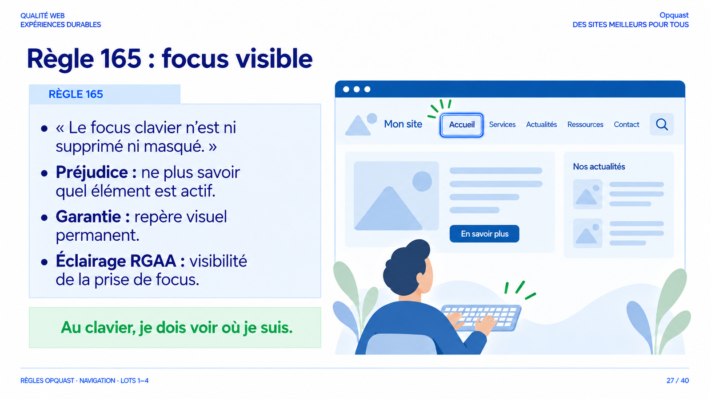
Idée principale
La règle Opquast 165 exige que le focus clavier ne soit ni supprimé ni masqué.
Le focus désigne l’élément qui reçoit actuellement les commandes du clavier. Son indication visuelle permet à la personne de savoir quelle cible recevra sa prochaine action.
Deux risques différents
- Focus supprimé : un script retire le focus lorsqu’un élément le reçoit. L’élément peut alors devenir difficile ou impossible à utiliser au clavier.
- Focus masqué : le focus continue à se déplacer, mais son indication visuelle est absente ou imperceptible. La personne ne sait plus où elle se trouve dans le parcours.
Le repère peut prendre la forme d’un contour, d’un halo, d’un changement de fond ou d’un soulignement.
Le style natif du navigateur peut être conservé ou remplacé. Dans tous les cas, l’élément qui possède le focus doit rester identifiable.
Éclairage RGAA
Le critère 10.7 du RGAA 4.1.2 contrôle également la visibilité de la prise de focus.
Le style natif du navigateur ne doit pas être supprimé ou dégradé. Lorsqu’un style spécifique est défini, il doit rester visible et présenter un contraste suffisant.
Ce que montre l’illustration
À droite, une personne utilise un clavier devant une page web.
Dans le menu, le lien « Accueil » est entouré d’un double contour bleu. Des marques vertes attirent l’attention sur ce repère.
Les autres entrées visibles sont « Services », « Actualités », « Ressources » et « Contact ». La page comporte également un bouton « En savoir plus » et un bloc intitulé « Nos actualités ».
Le focus visible permet d’identifier immédiatement l’élément actuellement sélectionné.
Message à retenir
Au clavier, je dois voir où je suis.
Un focus techniquement présent mais visuellement imperceptible ne permet pas de contrôler correctement le parcours.
Commencer par la prochaine action
Regardons le lien « Accueil » entouré dans le visuel.
Si j’appuie maintenant sur Entrée, quel élément sera activé ?
Ici, nous pouvons répondre immédiatement parce que le lien qui possède le focus est clairement signalé.
Si ce repère disparaît, le clavier peut continuer à déplacer le focus dans la page. Pourtant, la personne ne sait plus quelle sera la cible de sa prochaine action.
C’est précisément le risque traité par la règle 165.
La règle Opquast
Le focus clavier n’est ni supprimé ni masqué.
Le focus désigne l’élément qui reçoit actuellement les commandes du clavier.
Il peut s’agir d’un lien, d’un bouton, d’un champ de formulaire ou d’un contrôle appartenant à un composant plus complexe.
Avec Tabulation et Majuscule + Tabulation, le focus se déplace généralement entre les éléments interactifs. Dans certains composants, les flèches permettent ensuite de se déplacer à l’intérieur du composant.
À chaque étape, la personne doit pouvoir identifier l’élément concerné.
Deux défaillances différentes
Le libellé de la règle distingue deux problèmes.
Un focus supprimé
Un script peut retirer le focus dès qu’un élément le reçoit.
L’élément devient alors difficile ou impossible à utiliser correctement au clavier.
Un focus masqué
Le focus existe toujours techniquement, mais son indication visuelle a été supprimée ou rendue imperceptible.
La personne continue à tabuler, mais elle ne sait plus où elle se trouve dans le parcours.
Dans les deux cas, la relation entre le déplacement et la prochaine action est rompue.
Ce que la règle garantit
La règle protège un repère visuel disponible tout au long du parcours au clavier.
Ce repère peut prendre plusieurs formes :
- un contour ;
- un halo ;
- un changement de fond ;
- un soulignement ;
- une combinaison de plusieurs effets.
Le style natif fourni par le navigateur peut être conservé. Il peut également être remplacé par un style spécifique, à condition que celui-ci reste suffisamment perceptible sur les différents arrière-plans et dans les différents états du composant.
Le véritable objectif n’est pas d’imposer une forme graphique particulière. Il est de permettre à la personne de répondre à tout moment à cette question :
Quel élément recevra ma prochaine action ?
Le piège du nettoyage graphique
Une erreur fréquente consiste à supprimer le contour natif avec une règle comme outline: none parce qu’il est jugé peu esthétique.
Le problème n’est pas de personnaliser ce contour. Le problème est de le retirer sans solution de remplacement.
Un choix graphique ne doit jamais rendre invisible un état indispensable à l’utilisation de l’interface.
L’éclairage RGAA
Le RGAA 4.1.2 contrôle également la visibilité de la prise de focus.
Pour chaque élément susceptible de recevoir le focus, il faut vérifier que :
- le style natif du navigateur n’est pas supprimé ou dégradé ;
- ou qu’un style défini par l’auteur est visible ;
- et que l’indication présente un contraste suffisant, avec un rapport d’au moins 3:1 selon la méthode de test.
Nous retrouvons donc un même besoin utilisateur, abordé sous deux angles différents :
- Opquast formule le risque de navigation et la garantie attendue ;
- le RGAA fournit des critères et une méthode de contrôle de l’accessibilité.
Lire le visuel
Dans l’illustration, le lien « Accueil » est entouré d’un double contour bleu.
Les marques vertes attirent l’attention sur cet état.
La personne utilise un clavier et peut identifier immédiatement l’élément actuellement sélectionné. Elle sait donc où elle se trouve et quelle cible recevra sa prochaine commande.
Tester la règle
Pour vérifier cette expérience :
- mettre de côté la souris et le pavé tactile ;
- parcourir la page avec Tabulation et Majuscule + Tabulation ;
- utiliser les flèches dans les composants qui le demandent ;
- vérifier chaque lien, bouton, champ et contrôle interactif ;
- confirmer que le focus reste visible sur tous les arrière-plans ;
- vérifier qu’aucun script ne retire artificiellement le focus.
Le test ne doit pas se limiter au menu principal. Il faut suivre un parcours complet dans la page.
Message à retenir
Au clavier, je dois voir où je suis.
Le focus peut se déplacer sans être visible. La règle 165 exige que sa position reste perceptible afin que la personne puisse anticiper sa prochaine action.
La slide suivante proposera une analogie pour rendre ce rôle encore plus intuitif : le focus comme curseur du clavier.
Slide 28 - Le focus est le curseur du clavier
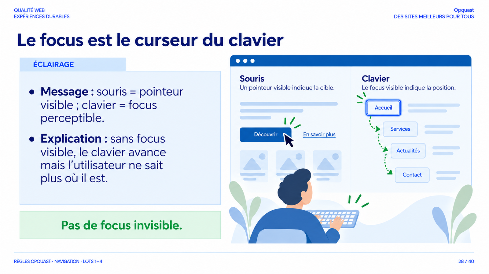
Idée principale
Cette slide utilise une analogie pédagogique : le focus joue, pour la navigation au clavier, un rôle comparable à celui du pointeur pour la souris.
Dans les deux cas, un repère visible permet d’identifier la cible actuelle avant d’agir.
Cette comparaison n’est toutefois pas une équivalence technique. Le pointeur se déplace librement dans l’écran, tandis que le focus passe entre les éléments interactifs selon un ordre de navigation.
Ce qui se passe sans focus visible
Le focus peut continuer à se déplacer dans la page même si son indication visuelle a disparu.
La personne utilise Tabulation, mais elle ne peut plus déterminer :
- quel élément possède le focus ;
- ce que déclenchera la prochaine commande ;
- si le focus se trouve encore dans le menu ou déjà dans le contenu.
Le déplacement fonctionne techniquement, mais il n’est plus perceptible pour une personne voyante naviguant au clavier.
Ce que montre l’illustration
Le visuel compare deux modes d’interaction.
Souris
À gauche, un pointeur est placé sur le bouton « Découvrir ».
Le texte indique :
Un pointeur visible indique la cible.
Un lien « En savoir plus » apparaît à côté du bouton.
Clavier
À droite, le lien « Accueil » possède un contour de focus visible.
Des flèches vertes relient successivement « Accueil », « Services », « Actualités » et « Contact ». Elles représentent le déplacement du focus entre les éléments interactifs.
Le texte indique :
Le focus visible indique la position.
Une personne utilisant un clavier est représentée sous cette comparaison.
Limite de l’analogie
Le pointeur indique une position libre dans l’écran.
Le focus indique un élément précis dans une séquence d’interaction.
Leur point commun est de fournir un retour visible permettant de comprendre où la prochaine action aura lieu.
Message à retenir
Pas de focus invisible.
Le focus visible rend le déplacement au clavier compréhensible et permet d’anticiper la prochaine action.
Une analogie utile, pas une équivalence technique
Le titre affirme :
Le focus est le curseur du clavier.
Cette formule est une analogie pédagogique.
Le pointeur de la souris et le focus clavier ne fonctionnent pas de la même manière. Mais ils répondent à un besoin commun : rendre perceptible la cible actuelle de l’utilisateur.
À la souris, voir la cible
Regardons la partie gauche du visuel.
Le pointeur est placé sur le bouton « Découvrir ».
Avant même de cliquer, nous savons quel élément recevra l’action. Le pointeur relie le mouvement de la souris à une cible visible dans la page.
Imaginons maintenant que ce pointeur disparaisse.
La souris continuerait à transmettre des déplacements. Le bouton pourrait même réagir au survol. Pourtant, nous ne pourrions plus viser l’élément avec suffisamment de certitude.
Au clavier, percevoir la position du focus
Regardons maintenant la partie droite.
Le lien « Accueil » possède un contour visible. Ce contour indique que le lien détient actuellement le focus.
Lorsque la personne utilise Tabulation, le focus peut ensuite passer vers « Services », « Actualités » puis « Contact ». Les flèches vertes représentent cette progression.
Le focus ne se déplace donc pas librement comme un pointeur. Il suit les éléments interactifs dans un ordre déterminé par la page et par le composant utilisé.
Ce que l’analogie permet de comprendre
Le parallèle porte sur la perception de la cible :
- avec la souris, le pointeur visible indique où l’action de pointage peut avoir lieu ;
- avec le clavier, le focus visible indique quel élément recevra la prochaine commande.
Dans les deux cas, la personne a besoin d’un retour visible avant d’agir.
L’analogie s’arrête là. Le pointeur indique une position libre dans l’écran. Le focus indique un élément précis dans une séquence d’interaction.
Quand le focus devient invisible
Si l’indication visuelle disparaît, le mécanisme de navigation peut continuer à fonctionner.
La personne appuie sur Tabulation. Le focus passe bien d’un élément à l’autre dans la page. Mais aucun changement perceptible ne lui permet de suivre ce déplacement.
Elle ne peut plus répondre à des questions pourtant essentielles :
- quel élément possède maintenant le focus ?
- que va déclencher la touche Entrée ?
- la tabulation précédente a-t-elle réellement déplacé le focus ?
- suis-je encore dans le menu ou déjà dans le contenu ?
Le problème n’est donc pas seulement l’absence d’un contour graphique. C’est la rupture de la boucle entre l’intention, le déplacement et la confirmation visuelle.
Lire le visuel
La comparaison est organisée en deux colonnes.
Souris
À gauche, le pointeur est placé sur le bouton « Découvrir ».
Le texte indique :
Un pointeur visible indique la cible.
Clavier
À droite, le lien « Accueil » possède un focus visible.
Une suite de flèches relie « Accueil », « Services », « Actualités » et « Contact ». Elle montre que le focus progresse entre les éléments interactifs.
Le texte indique :
Le focus visible indique la position.
La personne représentée utilise un clavier. Elle peut suivre visuellement le déplacement du focus dans l’interface.
Message à retenir
Pas de focus invisible.
Pour une personne voyante naviguant au clavier, le focus est le principal repère visuel de la cible actuelle.
Il rend le déplacement compréhensible et permet d’anticiper la prochaine action.
Mais voir un composant ne suffit pas encore. La slide suivante posera une nouvelle question : une fois le composant atteint, peut-on réellement l’utiliser au clavier ?
Slide 29 - Règle 166 : tout utiliser au clavier
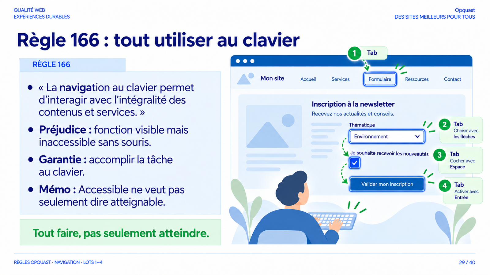
Idée principale
La règle Opquast 166 demande que la navigation au clavier permette d’interagir avec l’intégralité des contenus et services.
Recevoir le focus ne suffit pas. La personne doit pouvoir réaliser les actions attendues et accomplir la tâche sans souris.
Portée de la règle
Le contrôle concerne les liens, les boutons, les champs de formulaire et les composants interactifs.
Les commandes dépendent du composant. Tabulation sert généralement à passer d’un contrôle à un autre. Entrée, Espace, les flèches ou Échap peuvent intervenir selon le type d’interaction.
Le contrôle prévoit une exception lorsque l’usage du clavier n’aurait pas de sens, par exemple pour un tracé libre.
Ce que montre l’illustration
Une personne utilise au clavier un formulaire intitulé « Inscription à la newsletter ».
Le parcours comporte quatre étapes :
- Tabulation place le focus sur le lien « Formulaire ».
- Tabulation atteint la liste « Thématique », puis les flèches permettent ici de choisir la valeur « Environnement ».
- Tabulation atteint la case « Je souhaite recevoir les nouveautés », activée avec Espace.
- Tabulation atteint le bouton « Valider mon inscription », activé ici avec Entrée.
Ces commandes décrivent l’exemple affiché. Les touches attendues peuvent varier selon la nature du composant.
Message à retenir
Accessible ne veut pas seulement dire atteignable.
La personne doit pouvoir utiliser le composant et terminer la tâche.
Tester l’accomplissement, pas seulement la tabulation
Plaçons-nous devant le formulaire représenté dans la slide et mettons la souris de côté.
Avec la touche Tabulation, nous pouvons atteindre le lien « Formulaire ». Puis nous arrivons sur la liste de thématiques, sur la case à cocher et sur le bouton de validation.
Voir successivement un contour autour de ces éléments constitue un premier indice. Mais cela ne prouve pas encore que le formulaire peut être utilisé.
Il reste à ouvrir la liste, choisir une valeur, cocher l’option et envoyer l’inscription.
C’est ce passage du déplacement à l’accomplissement que traite la règle 166.
La règle Opquast
La navigation au clavier permet d’interagir avec l’intégralité des contenus et services.
Le contrôle ne s’arrête pas à la présence du focus.
Pour chaque contenu ou service interactif, il faut vérifier que la personne peut réaliser les actions attendues sans dispositif de pointage.
Cela concerne notamment :
- les liens et les boutons ;
- les champs de formulaire ;
- les menus et les listes de choix ;
- les accordéons et les onglets ;
- les fenêtres de dialogue ;
- les lecteurs multimédias ;
- les carrousels ;
- les composants développés en JavaScript.
Atteindre et utiliser sont deux contrôles différents
Un composant peut recevoir le focus tout en restant inutilisable.
Un menu peut être atteint sans pouvoir être ouvert. Une liste peut s’ouvrir sans permettre de changer d’option. Une case peut recevoir le focus sans réagir. Une fenêtre peut apparaître sans offrir de moyen de la fermer au clavier.
Dans chacun de ces cas, la tabulation fonctionne partiellement, mais la tâche reste bloquée.
La bonne question n’est donc pas seulement :
Le focus peut-il atteindre ce composant ?
Elle devient :
La personne peut-elle accomplir l’action attendue et poursuivre son parcours ?
Les commandes dépendent du composant
Le visuel associe plusieurs touches à plusieurs actions :
- Tabulation permet de passer d’un composant à un autre ;
- les flèches permettent ici de choisir une option ;
- Espace permet de cocher la case ;
- Entrée permet ici de valider le formulaire.
Cette séquence correspond au formulaire représenté. Elle ne doit pas être appliquée mécaniquement à tous les composants.
Un lien natif s’active généralement avec Entrée. Un bouton natif accepte Entrée et Espace. Une case à cocher change généralement d’état avec Espace. Les flèches servent dans certaines listes et certains composants complexes. Échap peut fermer ou annuler une interaction lorsque le composant prévoit ce comportement.
Pour un composant complexe, les commandes attendues doivent suivre un modèle connu. Lorsqu’elles sont inhabituelles, elles devraient être expliquées.
Privilégier les comportements natifs
Un bouton HTML, un lien correctement construit ou un champ de formulaire natif possède déjà un comportement clavier défini par le navigateur.
Un composant créé à partir d’un élément générique demande davantage de travail. Il faut gérer son accès au focus, ses commandes, ses états et les retours produits après l’action.
Rendre un élément générique atteignable avec tabindex="0" ne suffit donc pas à en faire un composant utilisable.
L’exception prévue par le contrôle
Le contrôle Opquast mentionne les interactions pour lesquelles une utilisation au clavier n’aurait pas de sens, par exemple une fonctionnalité de dessin fondée sur un tracé libre.
Cette exception reste liée à la nature de l’interaction. Elle ne justifie pas de rendre inaccessible au clavier un bouton, un formulaire, un menu ou une commande ordinaire.
Lire le visuel
L’illustration suit un parcours d’inscription à une newsletter.
La première étape place le focus sur le lien « Formulaire ». La deuxième atteint la liste « Thématique », dans laquelle la valeur « Environnement » est affichée. La troisième atteint la case « Je souhaite recevoir les nouveautés ». La quatrième atteint le bouton « Valider mon inscription ».
Le visuel ne montre donc pas seulement une succession de focus. Il représente une tâche qui progresse jusqu’à sa validation.
Tester la règle
Pour contrôler un service :
- mettre de côté la souris et le pavé tactile ;
- atteindre chaque fonctionnalité interactive ;
- utiliser les commandes attendues par son type de composant ;
- vérifier les états ouverts, fermés, cochés ou sélectionnés ;
- contrôler les messages produits après l’action ;
- poursuivre jusqu’au résultat attendu ;
- relever toute étape qui impose de reprendre la souris.
Message à retenir
Accessible ne veut pas seulement dire atteignable.
La règle 166 demande que les contenus et services puissent être réellement utilisés au clavier. Le résultat attendu est l’accomplissement de la tâche.
Slide 30 - Atteindre n’est pas utiliser
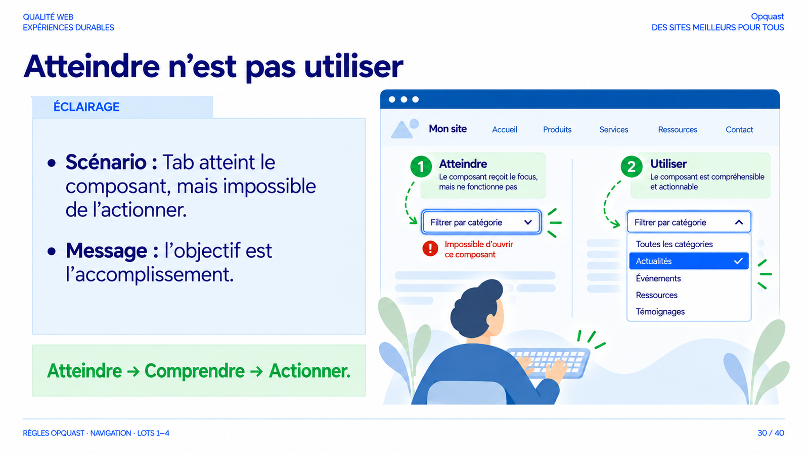
Idée principale
Cette slide prolonge la règle Opquast 166 en distinguant un composant qui reçoit le focus d’un composant réellement utilisable.
Le mémo « Atteindre - Comprendre - Actionner » constitue une grille pédagogique. Il rappelle que la présence du focus n’est que la première étape de l’interaction.
Les trois étapes
- Atteindre : le composant peut recevoir le focus au clavier.
- Comprendre : sa fonction, son état et les choix proposés sont identifiables.
- Actionner : la personne peut effectuer l’action attendue et obtenir son résultat.
Ce que montre l’illustration
Deux états du filtre « Filtrer par catégorie » sont comparés.
À gauche, sous le titre « Atteindre », le composant reçoit le focus mais ne fonctionne pas. Un message rouge indique : « Impossible d’ouvrir ce composant ».
À droite, sous le titre « Utiliser », le composant est ouvert. Il affiche les options « Toutes les catégories », « Actualités », « Événements », « Ressources » et « Témoignages ». L’option « Actualités » est sélectionnée.
La comparaison montre qu’un contour de focus visible ne prouve pas que la fonction peut être utilisée.
Message à retenir
Atteindre - Comprendre - Actionner.
L’objectif est l’accomplissement de la tâche, pas seulement l’arrivée du focus.
Une preuve insuffisante
Regardons le composant de gauche.
Le champ « Filtrer par catégorie » possède un contour de focus visible. Une vérification trop rapide pourrait conclure qu’il est accessible au clavier.
Essayons pourtant de l’utiliser.
Nous appuyons sur la commande attendue pour l’ouvrir, mais rien ne se passe. Les catégories restent inaccessibles et le message indique : « Impossible d’ouvrir ce composant ».
Le focus a atteint la commande. La personne, elle, n’a pas atteint son objectif.
Le résultat attendu est une action accomplie
Cette slide prolonge la règle 166 avec une distinction simple :
- être atteignable signifie que le composant peut recevoir le focus ;
- être utilisable signifie que la personne peut comprendre son rôle, l’actionner et obtenir le résultat attendu.
Un contour visible prouve uniquement la présence du focus. Il ne prouve ni l’ouverture du composant, ni la sélection d’une option, ni la mise à jour de la page.
Un modèle pédagogique en trois temps
Le mémo propose :
Atteindre - Comprendre - Actionner.
Il s’agit d’une grille de lecture pédagogique, pas de trois critères officiels distincts.
Atteindre
Le focus peut rejoindre le composant selon un parcours clavier logique. Cette étape est nécessaire, mais elle ne suffit pas.
Comprendre
La personne peut identifier la fonction du composant, son état actuel, les choix disponibles, les commandes attendues lorsqu’elles ne sont pas évidentes et le résultat de l’action.
Cette compréhension dépend du libellé, de la présentation, de la structure et des informations restituées par le composant.
Actionner
La personne peut ouvrir le contrôle, parcourir ses options, effectuer un choix, le confirmer et poursuivre sa tâche.
L’interaction produit un résultat perceptible et ne laisse pas le focus dans une impasse.
Lire la comparaison
À gauche, sous le titre « Atteindre », le composant reçoit le focus mais ne s’ouvre pas. Le message rouge signale l’échec.
À droite, sous le titre « Utiliser », la liste est ouverte. Elle présente cinq options et « Actualités » est sélectionnée.
La différence ne porte donc pas sur la visibilité du composant. Elle porte sur la capacité à mener l’interaction jusqu’à son résultat.
Le piège des composants personnalisés
Cette défaillance apparaît souvent lorsqu’un élément générique est transformé en liste, en bouton ou en menu uniquement avec des styles et du JavaScript.
Le développeur peut le rendre atteignable sans avoir reproduit le comportement clavier complet attendu.
Quand un élément HTML natif répond au besoin, il fournit généralement une base plus robuste. Un composant personnalisé exige de définir et de tester tout son modèle d’interaction.
L’ajout d’un rôle ou d’un attribut ARIA ne crée pas automatiquement ce comportement.
Tester un scénario, pas un composant isolé
Pour contrôler le filtre représenté dans la slide, il faut vérifier que la personne peut :
- atteindre le filtre ;
- identifier son rôle et son état ;
- ouvrir la liste ;
- parcourir les options ;
- sélectionner une catégorie ;
- fermer la liste si nécessaire ;
- constater la prise en compte du choix ;
- poursuivre le parcours.
Si une seule étape impose la souris, la tâche n’est pas utilisable au clavier.
Message à retenir
Atteindre - Comprendre - Actionner.
Le passage du focus constitue le début du contrôle. Le résultat attendu est l’utilisation réelle du composant et l’accomplissement de la tâche.
La slide suivante ajoute une autre condition : ces composants doivent être parcourus dans un ordre que la personne peut comprendre et anticiper.
Slide 31 - Règle 167 : ordre prévisible
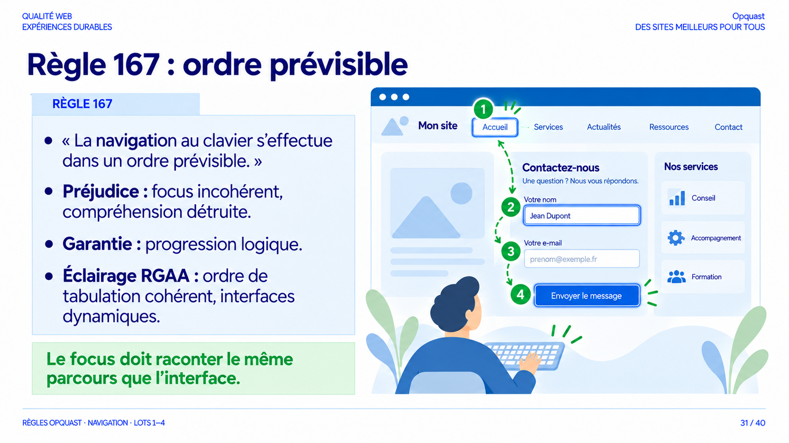
Idée principale
La règle Opquast 167 exige que la navigation au clavier s’effectue dans un ordre prévisible.
Le focus doit progresser selon une séquence adaptée au contenu et à la tâche. Cette séquence doit préserver le sens et permettre l’utilisation de la page.
Un ordre prévisible n’est pas nécessairement une reproduction stricte de la disposition visuelle. Plusieurs parcours peuvent être cohérents.
Éclairage RGAA
Le critère 12.8 du RGAA 4.1.2 contrôle la cohérence de l’ordre de tabulation.
Il couvre l’ordre présent dans le contenu ainsi que sa cohérence lorsqu’un script insère ou met à jour des éléments.
Ce que montre l’illustration
Une personne utilise un clavier devant une page comportant un menu, un formulaire de contact et un bloc « Nos services ».
Quatre jalons numérotés représentent une progression :
- le lien « Accueil » ;
- le champ « Votre nom », contenant « Jean Dupont » ;
- le champ « Votre e-mail », contenant « prenom@exemple.fr » ;
- le bouton « Envoyer le message ».
Le bloc « Nos services » présente « Conseil », « Accompagnement » et « Formation ».
Les quatre numéros schématisent les relations principales du parcours. Ils ne constituent pas la représentation exhaustive de tous les arrêts de tabulation de la page.
Message à retenir
Le focus doit raconter le même parcours que l’interface.
L’ordre doit rester logique et préserver le sens, sans nécessairement reproduire exactement la géométrie de l’écran.
Pouvoir anticiper l’étape suivante
Imaginons un formulaire comportant un nom, une adresse électronique et un bouton d’envoi.
Après le champ du nom, quelle cible attendons-nous avec Tabulation ?
Probablement le champ de l’adresse électronique. Si le focus part vers le pied de page, revient dans le menu puis rejoint le bouton d’envoi, la personne ne peut plus anticiper son parcours.
Le problème ne vient pas d’un élément isolé. Il vient de la relation entre les étapes.
La règle Opquast
La navigation au clavier s’effectue dans un ordre prévisible.
La personne doit pouvoir se construire des repères et comprendre la progression du focus.
L’ordre doit être adapté au contenu et à la tâche. Il doit préserver les relations qui donnent du sens au parcours.
Prévisible ne signifie pas géométrique
Il est tentant de résumer la règle ainsi : le focus doit toujours avancer de gauche à droite et de haut en bas.
Cette formule est trop rigide.
Plusieurs ordres peuvent être cohérents. Dans une page composée de colonnes indépendantes, la navigation peut parcourir une colonne puis une autre sans reproduire chaque déplacement du regard.
L’exigence principale est que la séquence reste logique et ne détruise ni la compréhension ni l’utilisation.
L’ordre doit généralement rester proche de celui suggéré par la présentation, mais il n’a pas à en être une copie géométrique exacte.
Le rôle du code et de la mise en page
Par défaut, le navigateur détermine l’ordre de tabulation à partir de l’organisation des éléments interactifs dans le code.
Une mise en page CSS peut modifier leur position visuelle sans modifier cet ordre. Ce décalage n’est pas automatiquement incorrect. Il devient problématique lorsque le focus semble sauter au hasard, sépare des éléments qui fonctionnent ensemble ou conduit à une action avant les informations nécessaires.
La meilleure base reste une structure HTML organisée selon les relations du contenu.
Forcer un ordre avec des valeurs positives de tabindex crée facilement une séquence fragile. La fiche Opquast ne l’interdit pas, mais le présente comme une solution de dernier ressort.
Lire le visuel
L’illustration présente quatre jalons :
- le lien « Accueil » dans le menu ;
- le champ « Votre nom », contenant « Jean Dupont » ;
- le champ « Votre e-mail », contenant « prenom@exemple.fr » ;
- le bouton « Envoyer le message ».
Cette suite illustre un passage du menu vers un formulaire, puis une progression entre les champs et l’action d’envoi.
Les numéros ne décrivent pas toute la séquence réelle de la page. D’autres liens et contrôles sont visibles. Il faut donc lire le dessin comme une représentation simplifiée des relations importantes, et non comme la preuve d’un ordre de tabulation complet.
Les interfaces dynamiques
Une interface peut modifier son contenu pendant le parcours.
Lorsqu’un script insère un contrôle, ouvre une fenêtre ou masque une zone, l’ordre doit rester compréhensible.
Dans une fenêtre de dialogue, le focus est placé sur un élément pertinent à l’intérieur. Ce choix dépend du contenu, de la taille de la fenêtre et de la tâche.
À la fermeture, le focus revient généralement vers le contrôle qui a ouvert la fenêtre. Si ce contrôle n’existe plus ou si l’action conduit logiquement à une nouvelle étape, un autre emplacement cohérent peut être choisi.
L’objectif reste le même : permettre à la personne de comprendre d’où elle vient et où elle poursuit son parcours.
L’éclairage RGAA
Le RGAA 4.1.2 traite cette exigence dans le critère 12.8.
Le test 12.8.1 vérifie la cohérence de l’ordre de tabulation dans le contenu. Le test 12.8.2 vérifie que cet ordre reste cohérent lorsqu’un script insère ou met à jour un contenu.
Nous croisons donc deux démarches :
- Opquast formule le risque de désorientation et l’attente de prévisibilité ;
- le RGAA fournit des tests de conformité sur la cohérence de l’ordre de tabulation.
Tester la règle
Pour contrôler le parcours :
- utiliser Tabulation et Majuscule + Tabulation ;
- suivre l’ordre dans les deux directions ;
- vérifier que les éléments liés restent regroupés ;
- contrôler les formulaires et les composants complexes ;
- activer les éléments qui modifient la page ;
- vérifier les contenus insérés et les fenêtres ;
- confirmer que chaque déplacement reste compréhensible.
Message à retenir
Le focus doit raconter le même parcours que l’interface.
Cette formule ne demande pas une copie exacte de la géométrie de l’écran. Elle demande une séquence qui préserve le sens, les relations et l’utilisation.
La slide suivante examine les situations où le parcours peut devenir un piège ou être perturbé par des interactions dynamiques.
Slide 32 - Éclairage RGAA : pièges et interactions
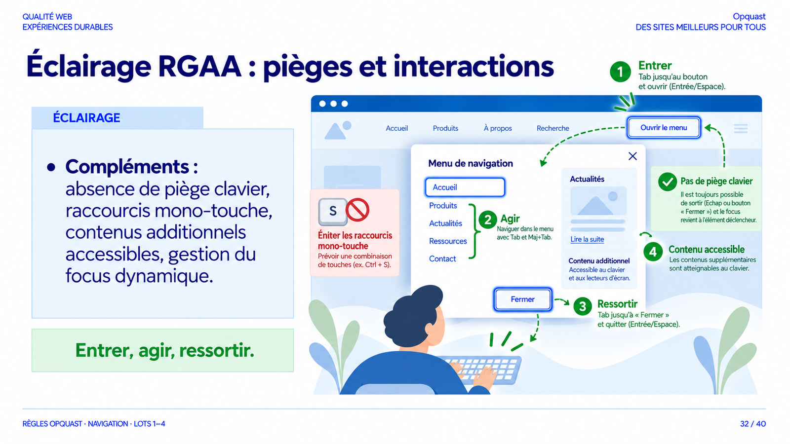
Nature de l’éclairage
Cette slide rassemble quatre exigences RGAA complémentaires aux règles Opquast sur la navigation au clavier :
- l’absence de piège au clavier ;
- le contrôle des raccourcis mono-touche ;
- l’accès aux contenus additionnels ;
- la cohérence du focus dans les interfaces dynamiques.
Ces exigences relèvent de plusieurs critères et ne constituent pas une nouvelle règle Opquast.
Les quatre compléments
- Absence de piège clavier : la personne peut atteindre l’élément suivant ou précédent, ou utiliser un autre mécanisme clavier qui lui est indiqué.
- Raccourcis mono-touche : ils peuvent être désactivés, reconfigurés avec une touche de modification, ou limités au composant qui possède le focus.
- Contenus additionnels : leurs composants interactifs sont atteignables au clavier et les contenus apparaissant au survol ou au focus restent contrôlables.
- Focus dynamique : après l’insertion ou la modification d’un contenu, l’ordre de tabulation et la reprise du parcours restent cohérents.
Ce que montre l’illustration
Un panneau intitulé « Menu de navigation » est ouvert au-dessus d’une page web.
Le parcours comporte quatre étapes :
- « Entrer » : Tabulation atteint le bouton « Ouvrir le menu », activé avec Entrée ou Espace dans cet exemple.
- « Agir » : le panneau contenant « Accueil », « Produits », « Actualités », « Ressources » et « Contact » est parcouru au clavier.
- « Ressortir » : le bouton « Fermer » permet de quitter le panneau.
- « Contenu accessible » : les contrôles d’un contenu supplémentaire restent atteignables au clavier.
Un encart vert intitulé « Pas de piège clavier » indique qu’il reste possible de fermer le panneau et que le focus revient vers l’élément déclencheur.
Un encart rouge représente la touche « S » barrée et met en garde contre les raccourcis mono-touche. La combinaison « Ctrl + S » est présentée comme un exemple, pas comme une solution universelle.
Précisions
Dans une véritable fenêtre modale, le focus peut rester contenu dans la fenêtre tant qu’elle est ouverte. Ce comportement n’est pas un piège si la personne dispose d’un moyen connu et fonctionnel pour la fermer.
Le retour du focus vers le déclencheur est habituel, mais une autre destination peut être plus logique selon le résultat de l’action.
Message à retenir
Entrer, agir, ressortir.
La personne doit pouvoir accéder au composant, l’utiliser et quitter son contexte sans perdre la maîtrise du parcours.
Quatre compléments, pas une nouvelle règle Opquast
Cette slide élargit le contrôle de la navigation au clavier.
Les règles Opquast 166 et 167 demandent de pouvoir utiliser les services et de progresser dans un ordre prévisible.
Le RGAA ajoute ici quatre points de contrôle plus précis :
- l’absence de piège au clavier ;
- le contrôle des raccourcis mono-touche ;
- l’accès aux contenus additionnels ;
- la cohérence du focus lorsque l’interface change.
Ces exigences appartiennent à des critères différents. Le mémo « Entrer, agir, ressortir » permet de les relier dans un même parcours utilisateur.
Entrer dans un composant
Le visuel commence par le bouton « Ouvrir le menu ».
La personne l’atteint avec Tabulation puis l’active avec une commande prévue par le bouton.
Le panneau de navigation apparaît. Le focus doit alors rejoindre un emplacement cohérent dans ce nouveau contexte.
Dans une fenêtre de dialogue, ce placement dépend de la situation. Il peut s’agir du titre rendu focalisable, du premier contrôle, de l’action la plus probable ou de l’action la moins risquée.
Il n’existe pas une cible unique valable pour toutes les fenêtres.
Agir dans le composant
La personne doit ensuite pouvoir parcourir les liens et utiliser les commandes proposées.
Le visuel emploie Tabulation et Majuscule + Tabulation dans un panneau contenant des liens. Ce choix est cohérent avec cette représentation.
Il ne faut pas en déduire que tous les composants utilisent les mêmes touches. Certains widgets complexes reposent sur les flèches, Espace ou d’autres commandes définies par leur modèle d’interaction.
Ressortir sans piège clavier
Le critère 12.9 du RGAA vérifie qu’une personne peut atteindre l’élément suivant ou précédent, ou qu’elle connaît un autre mécanisme clavier permettant de quitter le composant.
Une fenêtre modale constitue un cas particulier important.
Tant qu’elle est ouverte, Tabulation et Majuscule + Tabulation restent normalement à l’intérieur de la fenêtre. Cette boucle volontaire n’est pas un piège si la personne peut fermer la fenêtre avec une commande connue, par exemple le bouton « Fermer » ou Échap.
Le piège apparaît lorsque le focus reste captif sans moyen utilisable ou annoncé pour quitter le composant.
Après la fermeture, le focus revient habituellement vers le bouton qui a ouvert la fenêtre. Une autre destination peut être plus logique si ce bouton a disparu ou si l’action vient de créer une nouvelle étape dans le parcours.
Contrôler les raccourcis mono-touche
Le visuel présente la touche « S » barrée et propose une combinaison avec une touche de modification.
L’idée n’est pas d’interdire toutes les touches seules.
Le critère 12.10 du RGAA demande que chaque raccourci fondé sur une seule lettre, un chiffre, un symbole ou un signe de ponctuation vérifie au moins une condition :
- le raccourci peut être désactivé ;
- il peut être reconfiguré avec une touche comme Ctrl, Alt ou Majuscule ;
- il ne s’active que lorsque le composant concerné possède le focus.
Cette exigence protège notamment les personnes qui utilisent la commande vocale ou qui produisent des frappes involontaires.
La combinaison « Ctrl + S » dessinée dans la slide reste un exemple. Une combinaison doit être choisie en tenant compte des raccourcis déjà utilisés par le navigateur, le système et les technologies d’assistance.
Rendre les contenus additionnels utilisables
Un contenu additionnel peut apparaître au survol, au focus ou après l’activation d’un composant.
Deux questions doivent être distinguées.
La première est traitée par le critère RGAA 12.11 : si ce contenu contient des liens, des boutons ou d’autres contrôles, ceux-ci doivent pouvoir être atteints au clavier.
La seconde relève du critère 10.13 : un contenu qui apparaît au survol ou au focus doit rester contrôlable. Selon le cas, il doit pouvoir être masqué sans déplacer le focus, rester survolable et demeurer visible tant que la personne en a besoin.
L’accessibilité aux lecteurs d’écran demande en plus une structure et des informations programmatiques adaptées. Le fonctionnement au clavier ne suffit pas, à lui seul, à prouver cette restitution.
Gérer le focus après une modification dynamique
Le critère RGAA 12.8.2 demande que l’ordre de tabulation reste cohérent lorsqu’un script insère ou met à jour un contenu.
La gestion du focus dépend ensuite de la nature du changement.
Une information ajoutée discrètement ne demande pas nécessairement de déplacer le focus. Une fenêtre de dialogue, en revanche, crée un nouveau contexte d’interaction qui exige un placement cohérent du focus.
Déplacer le focus à chaque mise à jour serait aussi perturbant que de ne jamais le déplacer. Le choix doit préserver le sens et la continuité du parcours.
Lire le visuel
Le dessin représente un panneau de navigation ouvert au-dessus de la page.
Quatre étapes sont numérotées :
- « Entrer » : atteindre le bouton « Ouvrir le menu » et l’activer.
- « Agir » : parcourir les liens du panneau.
- « Ressortir » : atteindre le bouton « Fermer » et quitter le panneau.
- « Contenu accessible » : atteindre les contrôles présents dans les contenus supplémentaires.
Un encart vert rappelle qu’il doit rester possible de fermer le panneau et de reprendre le parcours.
Un encart rouge attire l’attention sur les raccourcis mono-touche. Il illustre un risque, mais la combinaison proposée ne doit pas être interprétée comme une solution universelle.
Tester le parcours
Pour contrôler cette expérience :
- ouvrir le composant au clavier ;
- vérifier le placement initial du focus ;
- parcourir toutes les commandes utiles ;
- utiliser les contenus ajoutés ;
- revenir vers l’élément précédent et passer au suivant ;
- fermer le composant avec les commandes prévues ;
- vérifier la destination du focus après la fermeture ;
- contrôler les raccourcis mono-touche ;
- répéter le test après chaque mise à jour dynamique importante.
Message à retenir
Entrer, agir, ressortir.
Une interaction clavier maîtrisée permet d’accéder au composant, de l’utiliser et de quitter son contexte sans perdre le fil du parcours.
Slide 33 - Synthèse D
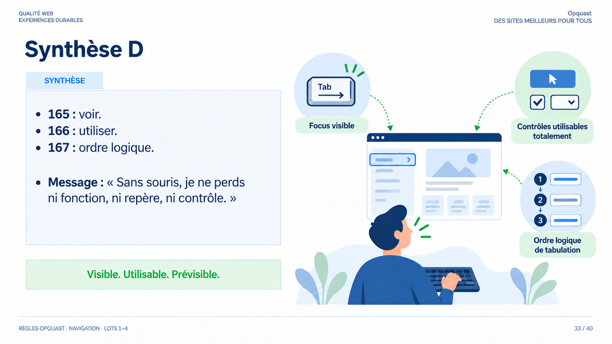
Idée principale
Cette slide conclut le bloc consacré à la navigation sans souris.
Elle réunit trois garanties complémentaires :
- Règle 165 - Voir : le focus clavier n’est ni supprimé ni masqué.
- Règle 166 - Utiliser : les contenus et les services peuvent être utilisés au clavier.
- Règle 167 - Progresser : le déplacement du focus suit un ordre prévisible.
Ces garanties doivent fonctionner ensemble. La présence de l’une ne compense pas l’absence d’une autre.
Ce que montre l’illustration
Une personne utilise un clavier devant une page web.
Trois représentations sont reliées à cette page par des flèches vertes en pointillés :
- une touche « Tab » accompagnée du texte « Focus visible » ;
- des boutons et des contrôles accompagnés du texte « Contrôles utilisables totalement » ;
- une séquence numérotée 1, 2, 3 accompagnée du texte « Ordre logique de tabulation ».
Le panneau de gauche associe les règles à trois fonctions :
- « 165 : voir » ;
- « 166 : utiliser » ;
- « 167 : ordre logique ».
Message à retenir
Visible. Utilisable. Prévisible.
Sans souris, la personne doit pouvoir percevoir le focus, utiliser les fonctions et progresser dans un ordre compréhensible.
Une tâche, trois conditions
Prenons une tâche simple : parcourir une page, ouvrir un contrôle et valider une action sans utiliser la souris.
Pour que cette tâche soit réellement possible, trois conditions doivent être réunies.
Si une seule manque, le parcours se dégrade ou s’interrompt.
Règle 165 - Rendre la position perceptible
Le focus clavier n’est ni supprimé ni masqué.
La personne doit identifier l’élément qui recevra sa prochaine commande.
Un bouton parfaitement utilisable ne sert à rien si elle ne peut pas savoir qu’il possède le focus.
Le premier besoin est donc un repère visible lorsque l’élément reçoit le focus.
Règle 166 - Permettre l’utilisation réelle
La navigation au clavier permet d’interagir avec l’intégralité des contenus et services.
Recevoir le focus ne suffit pas.
La personne doit pouvoir ouvrir un menu, sélectionner une option, remplir un champ, valider un formulaire ou fermer une fenêtre avec les commandes attendues.
Le deuxième besoin est l’accomplissement de la tâche.
Règle 167 - Organiser une progression prévisible
La navigation au clavier s’effectue dans un ordre prévisible.
Le passage d’un élément à l’autre doit former une séquence compréhensible et adaptée au contenu.
Cette séquence n’a pas besoin de reproduire mécaniquement chaque déplacement visuel. Elle doit permettre à la personne d’anticiper la suite du parcours.
Le troisième besoin est la prévisibilité.
Trois garanties indissociables
Ces règles ne se compensent pas.
- Un focus visible ne répare pas un bouton impossible à actionner.
- Un bouton utilisable ne répare pas un ordre de navigation incohérent.
- Un ordre logique ne répare pas un focus devenu invisible.
La navigation au clavier doit réunir les trois conditions au même moment.
Lire le visuel
L’illustration relie trois repères à une même page.
À gauche, une touche Tabulation représente le déplacement du focus et porte la mention « Focus visible ».
En haut à droite, plusieurs contrôles représentent les fonctions utilisables.
En bas à droite, une séquence numérotée 1, 2, 3 représente un ordre logique de tabulation.
La personne placée devant la page n’utilise qu’un clavier. Les trois repères convergent vers la même expérience.
Message à retenir
Visible. Utilisable. Prévisible.
Sans souris, la personne ne doit perdre ni sa position, ni les fonctions nécessaires à sa tâche, ni la capacité d’anticiper la suite.
La séquence suivante élargit cette question de contrôle : que se passe-t-il lorsque l’interface ouvre ou superpose elle-même une fenêtre ?
Slide 34 - Est-ce moi qui décide ?
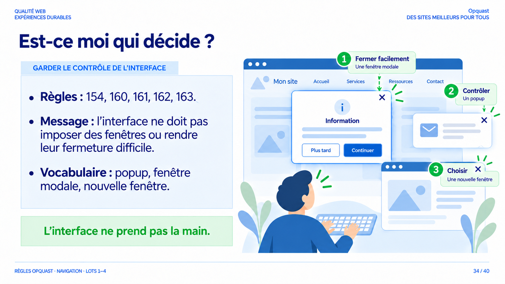
Idée principale
Cette slide ouvre le bloc « Garder le contrôle de l’interface ».
Elle annonce les règles Opquast 154, 160, 161, 162 et 163. Ces règles encadrent l’ouverture des popups et les mécanismes permettant de fermer les fenêtres ou contenus similaires.
Elles répondent à deux besoins :
- ne pas subir un changement de contexte imposé par la navigation ;
- pouvoir comprendre et fermer facilement ce qui s’affiche.
Les cinq règles annoncées
- 154 : ne pas provoquer l’ouverture de popups pendant la navigation.
- 160 : rattacher visuellement la fermeture au contenu concerné.
- 161 : rendre la fermeture immédiatement disponible.
- 162 : fournir un bouton de fermeture explicite.
- 163 : conserver le mécanisme de fermeture au même emplacement sur les différentes pages.
Ce que montre l’illustration
Une page intitulée « Mon site » comporte un menu avec les entrées « Accueil », « Services », « Ressources » et « Contact ».
Trois représentations de fenêtres sont superposées à cette page :
- Une fenêtre modale intitulée « Information », munie d’une croix et des boutons « Plus tard » et « Continuer », est associée au texte « Fermer facilement ».
- Un petit panneau muni d’une croix est associé au texte « Contrôler - Un popup ».
- Une fenêtre distincte munie d’une croix est associée au texte « Choisir - Une nouvelle fenêtre ».
Ces dessins sont schématiques. La distinction technique entre popup, modale et nouvelle fenêtre est précisée sur la slide suivante.
Message à retenir
L’interface ne prend pas la main.
Un contenu qui s’ouvre doit rester compréhensible et contrôlable par la personne.
Deux questions pour garder la main
Nous quittons maintenant la question du déplacement au clavier pour aborder la maîtrise de l’interface.
Lorsqu’un nouveau contenu apparaît, deux questions se posent immédiatement :
- est-ce moi qui ai demandé ce changement de contexte ?
- puis-je reprendre la main facilement ?
Le bloc rassemble cinq règles qui traitent l’ouverture des popups et la fermeture des fenêtres ou contenus similaires.
Première garantie - Ne pas imposer une popup pendant la navigation
La règle 154 demande que la navigation ne provoque pas l’ouverture de popups.
Lorsque je demande une page, je dois atteindre la destination annoncée sans qu’une fenêtre supplémentaire détourne mon attention ou m’impose une opération de fermeture.
Quatre garanties pour la fermeture
Les quatre règles suivantes ne disent pas la même chose.
Règle 160 - Comprendre ce que le contrôle va fermer
Le mécanisme de fermeture doit être visuellement rattaché au contenu concerné.
La personne ne doit pas hésiter entre fermer la fenêtre affichée et quitter un autre élément de l’interface.
Règle 161 - Pouvoir fermer immédiatement
Le mécanisme de fermeture doit être disponible dès l’affichage.
Aucun délai, décompte ou défilement ne doit être nécessaire pour reprendre la main.
Règle 162 - Disposer d’un bouton explicite
Une fenêtre dimensionnée ou une fenêtre modale doit proposer un bouton ou un lien de fermeture explicite.
La personne ne doit pas avoir à deviner qu’il faut cliquer sur l’arrière-plan ou utiliser une touche particulière.
Règle 163 - Retrouver le contrôle au même endroit
Les mécanismes de fermeture doivent conserver le même emplacement sur les différentes pages.
Cette stabilité permet l’apprentissage et évite de rechercher la commande à chaque apparition.
Trois objets à ne pas confondre
La slide annonce trois termes :
- popup ;
- fenêtre modale ;
- nouvelle fenêtre ou nouvel onglet.
Ils correspondent à des mécanismes différents. Les règles applicables dépendent de la nature réelle de l’objet, de son mode d’ouverture et de son mécanisme de fermeture.
La prochaine slide précise ces différences.
Lire le visuel
Le visuel superpose trois représentations à une page intitulée « Mon site ».
Au centre, une fenêtre « Information » comporte une croix et les boutons « Plus tard » et « Continuer ». Elle est associée à l’étape « Fermer facilement ».
À droite, un petit panneau portant une croix est associé à « Contrôler » et au terme « popup ».
En bas à droite, une autre fenêtre est associée à « Choisir » et au terme « nouvelle fenêtre ».
Ces représentations installent les objectifs du bloc. Elles ne remplacent pas les définitions techniques de la slide suivante.
Message à retenir
L’interface ne prend pas la main.
La personne doit comprendre ce qui s’est ouvert et disposer immédiatement d’un moyen clair, stable et prévisible pour reprendre son parcours.
Slide 35 - Popup, modale, nouvelle fenêtre
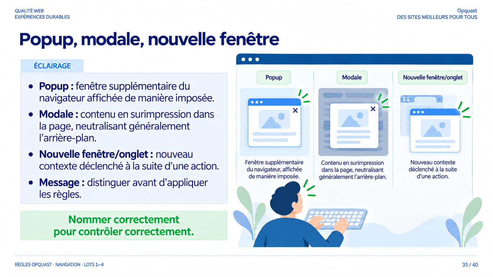
Idée principale
Cette slide distingue trois mécanismes qui ne doivent pas être confondus : la popup, la fenêtre modale et la nouvelle fenêtre ou le nouvel onglet.
La distinction repose sur le contexte créé et sur le mode de déclenchement, pas seulement sur l’apparence graphique.
Les trois définitions
- Popup : fenêtre supplémentaire du navigateur dont l’affichage automatique est imposé à l’ouverture d’une page.
- Modale : contenu affiché en surimpression dans la page, neutralisant généralement les interactions avec l’arrière-plan.
- Nouvelle fenêtre ou nouvel onglet : nouveau contexte du navigateur ouvert à la suite d’une action de l’utilisateur.
Une modale reste un bloc de la page. Une popup est une fenêtre à part entière du navigateur.
Ce que montre l’illustration
Trois colonnes comparent les mécanismes.
À gauche, la colonne « Popup » présente une petite fenêtre dotée d’une barre supérieure et d’une croix.
Au centre, la colonne « Modale » montre un bloc blanc placé devant une page assombrie.
À droite, la colonne « Nouvelle fenêtre/onglet » montre deux fenêtres de navigateur superposées.
Une personne utilisant un clavier est représentée sous cette comparaison.
Application aux règles
La règle 154 porte sur les popups provoquées par la navigation.
La règle 162 vise explicitement les nouvelles fenêtres dimensionnées et les fenêtres modales. Les règles 160, 161 et 163 encadrent les mécanismes permettant de fermer les fenêtres ou contenus similaires.
Message à retenir
Nommer correctement pour contrôler correctement.
Identifier précisément le composant permet d’appliquer la bonne règle et d’effectuer le bon contrôle.
Classer trois situations
Avant d’appliquer une règle, essayons de classer trois situations.
Première situation : une page se charge et une petite fenêtre supplémentaire du navigateur apparaît sans avoir été demandée.
Deuxième situation : un panneau s’affiche par-dessus la page et empêche d’utiliser l’arrière-plan.
Troisième situation : après l’activation d’un lien, le contenu demandé s’ouvre dans un autre onglet.
Ces trois situations peuvent se ressembler visuellement, mais elles ne reposent pas sur le même mécanisme.
Popup - Une fenêtre supplémentaire imposée
Dans le vocabulaire Opquast, une popup est une fenêtre supplémentaire du navigateur.
Elle possède son propre contexte de fenêtre et peut être dimensionnée ou privée de certaines commandes habituelles du navigateur.
Son affichage automatique est imposé à l’ouverture d’une page.
La popup ne doit pas être confondue avec un simple panneau dessiné à l’intérieur de la page.
Modale - Un contenu superposé dans la page
Une fenêtre modale est un contenu simulé en surimpression dans la page en cours.
Elle est généralement produite avec HTML, CSS et JavaScript.
Lorsqu’elle sollicite une action, elle neutralise le plus souvent les interactions avec l’arrière-plan jusqu’à sa fermeture ou sa validation.
Elle ne crée pas une véritable fenêtre supplémentaire du navigateur.
Nouvelle fenêtre ou nouvel onglet - Un nouveau contexte après une action
Une nouvelle fenêtre ou un nouvel onglet ouvre le contenu cible d’un lien dans un autre contexte du navigateur à la suite d’une action de l’utilisateur.
Le point important est le déclenchement : la personne a activé un élément.
Cela ne suffit toutefois pas à prouver qu’elle avait compris ou anticipé l’ouverture du nouveau contexte.
Pourquoi cette distinction change le contrôle
Les règles ne portent pas toutes sur les mêmes objets.
- La règle 154 contrôle les popups provoquées par la navigation.
- La règle 162 exige un bouton de fermeture explicite pour les fenêtres dimensionnées et les fenêtres modales.
- Les règles 160, 161 et 163 examinent la relation, la disponibilité et la stabilité des mécanismes de fermeture.
Appeler toute surimpression « popup » risque donc de conduire à un mauvais test.
Lire le visuel
Le visuel compare trois colonnes.
À gauche, la popup est représentée comme une petite fenêtre de navigateur dotée d’une barre supérieure et d’une croix de fermeture.
Au centre, la modale apparaît devant une page assombrie. Cette représentation montre que le contenu d’arrière-plan est neutralisé.
À droite, la nouvelle fenêtre ou le nouvel onglet est représenté par deux contextes de navigateur superposés.
Ces dessins rendent la différence visible, mais le classement repose d’abord sur le fonctionnement réel du composant.
Message à retenir
Nommer correctement pour contrôler correctement.
Pour savoir quelle règle appliquer, il faut identifier le contexte créé, le déclencheur de l’ouverture et le mécanisme de fermeture.
La slide suivante applique cette distinction à la règle 154.
Slide 36 - Règle 154 : pas de popup provoquée par la navigation
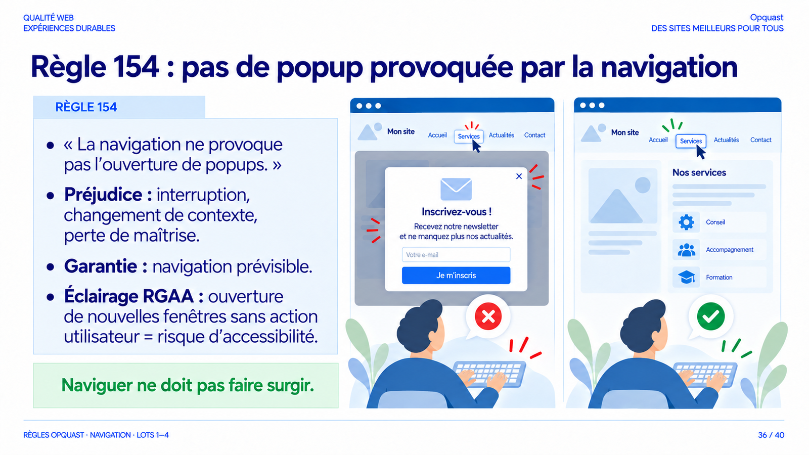
Idée principale
La règle Opquast 154 demande que la navigation ne provoque pas l’ouverture de popups.
Une popup est une fenêtre supplémentaire du navigateur dont l’affichage est imposé. Son ouverture pendant la navigation interrompt le parcours et crée un changement de contexte non attendu.
Ce que montre l’illustration
Deux scénarios sont comparés.
À gauche, la personne active l’entrée « Services » du menu. Une sollicitation intitulée « Inscrivez-vous ! » apparaît devant le contenu. Elle comporte un texte d’inscription à la newsletter, un champ « Votre e-mail », un bouton « Je m’inscris » et une croix de fermeture. Une croix rouge indique que le parcours est interrompu.
Cette représentation apparaît dans le cadre de la page et ressemble visuellement à une modale. Elle schématise le surgissement imposé, mais ne constitue pas une représentation technique exacte d’une popup du navigateur.
À droite, l’activation de « Services » affiche directement la page « Nos services ». Trois entrées sont visibles : « Conseil », « Accompagnement » et « Formation ». Une coche verte indique une navigation prévisible.
Éclairage RGAA
Le critère 13.2 du RGAA 4.1.2 interdit l’ouverture d’une nouvelle fenêtre sans action de l’utilisateur.
Ce critère éclaire un risque proche, mais il n’est pas équivalent à la règle Opquast 154. L’illustration montre une activation du lien « Services » : il existe donc une action de l’utilisateur, même si la fenêtre obtenue ne correspond pas à son intention de navigation.
Message à retenir
Naviguer ne doit pas faire surgir.
Un élément de navigation doit conduire à la destination annoncée sans imposer une fenêtre supplémentaire inattendue.
Partir de l’intention de navigation
Je clique sur « Services ».
Mon intention est claire : je veux consulter la page qui présente les services.
Dans le scénario de gauche, une sollicitation d’inscription apparaît à la place du contenu attendu. Je dois d’abord comprendre ce qui vient de surgir, puis le fermer avant de reprendre mon parcours.
Dans le scénario de droite, le clic conduit directement à la page « Nos services ».
La différence porte sur la prévisibilité de la navigation.
La règle Opquast
La navigation ne provoque pas l’ouverture de popups.
Dans le vocabulaire Opquast, une popup est une fenêtre supplémentaire du navigateur dont l’affichage est imposé.
La règle demande que la navigation dans les pages internes ne déclenche pas automatiquement ce type de fenêtre.
L’objectif est de préserver la continuité du parcours et d’éviter qu’une nouvelle fenêtre difficile à percevoir perturbe l’usage du navigateur, de son historique ou d’une aide technique.
Ce que la règle n’interdit pas
La règle ne dit pas que toute ouverture d’un nouveau contexte est interdite.
Elle cible la popup provoquée par la navigation.
Une nouvelle fenêtre ouverte à la suite d’une action prévue répond à une autre situation. Une fenêtre modale affichée dans la page est également un autre mécanisme, même si elle peut produire une interruption comparable.
La fiche Opquast recommande d’étendre le principe aux pseudo-popups réalisées avec des fenêtres modales, notamment publicitaires. Cette extension est utile pour la qualité d’usage, mais elle ne doit pas être confondue avec le contrôle officiel de la règle 154.
Une limite importante du visuel
Le panneau d’inscription représenté à gauche apparaît à l’intérieur du cadre de la page.
Techniquement, cette représentation ressemble davantage à une fenêtre modale qu’à une popup du navigateur.
Pour comprendre la règle, il faut retenir le scénario de surgissement imposé, mais conserver la définition donnée sur la slide précédente : une popup est une fenêtre supplémentaire du navigateur.
L’éclairage RGAA
Le RGAA 4.1.2 traite un risque voisin avec son critère 13.2 :
Dans chaque page web, l’ouverture d’une nouvelle fenêtre ne doit pas être déclenchée sans action de l’utilisateur.
La méthode demande notamment de vérifier qu’aucune nouvelle fenêtre, comme une popup ou une pop-under, ne s’ouvre lors du chargement du document.
Le rapprochement est pertinent, mais les contrôles ne sont pas identiques.
Dans notre illustration, un clic sur « Services » a bien lieu. Le critère RGAA 13.2 ne suffit donc pas, à lui seul, pour qualifier ce scénario. La règle Opquast 154 permet de poser la question d’usage plus précise : une action destinée à naviguer doit-elle imposer cette fenêtre inattendue ?
Tester la règle
Pour contrôler la règle 154 :
- désactiver temporairement le blocage des popups du navigateur ;
- parcourir les pages internes du service ;
- activer les éléments de navigation ;
- vérifier qu’aucune fenêtre supplémentaire ne s’ouvre automatiquement au cours du parcours ;
- confirmer que chaque élément conduit à la destination annoncée sans opération parasite.
Lire le visuel
À gauche, le lien « Services » vient d’être activé et une sollicitation « Inscrivez-vous ! » masque le contenu attendu. Une croix rouge signale l’interruption.
À droite, le même lien affiche directement la page « Nos services », avec les entrées « Conseil », « Accompagnement » et « Formation ». Une coche verte signale le parcours attendu.
Message à retenir
Naviguer ne doit pas faire surgir.
Une action de navigation doit conduire à la destination annoncée sans imposer une fenêtre supplémentaire inattendue.
Slide 37 - Règle 160 : fermeture rattachée au contenu
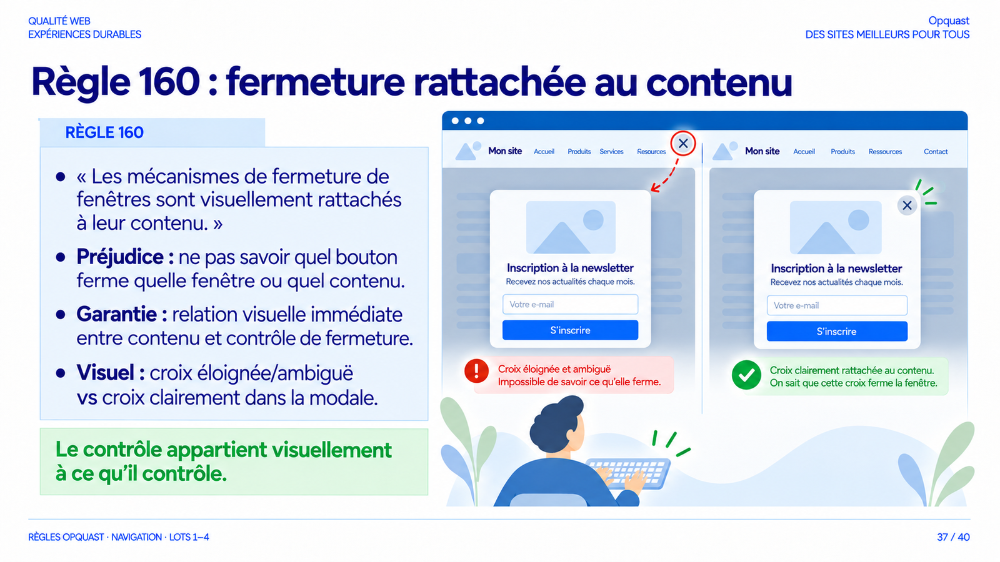
Idée principale
La règle Opquast 160 demande que le mécanisme de fermeture d’une fenêtre soit visuellement rattaché au contenu qu’il contrôle.
Le bouton peut se trouver dans le bloc ou de manière contiguë. L’objectif est de permettre d’identifier immédiatement quelle fenêtre sera fermée.
Ce que montre l’illustration
Deux fenêtres d’inscription à une newsletter sont comparées.
Exemple ambigu
À gauche, la croix de fermeture est éloignée de la fenêtre et placée au-dessus de son cadre.
Une flèche rouge relie la croix à la fenêtre. Le commentaire indique :
Croix éloignée et ambiguë. Impossible de savoir ce qu’elle ferme.
La fenêtre contient le titre « Inscription à la newsletter », le texte « Recevez nos actualités chaque mois », un champ « Votre e-mail » et le bouton « S’inscrire ».
Exemple compréhensible
À droite, la croix est accolée à l’angle supérieur droit de la fenêtre.
Des marques vertes la mettent en évidence. Le commentaire indique :
Croix clairement rattachée au contenu. On sait que cette croix ferme la fenêtre.
Portée de la règle
La règle exige une relation visuelle compréhensible. Elle n’impose pas un angle particulier et ne vérifie pas encore la disponibilité immédiate, le libellé ou la stabilité du contrôle.
Message à retenir
Le contrôle appartient visuellement à ce qu’il contrôle.
Identifier ce que le contrôle va fermer
Regardons d’abord la partie gauche du visuel.
Une croix apparaît au-dessus de la fenêtre d’inscription, à distance de son cadre.
Si nous activons cette croix, que va-t-elle fermer ?
La fenêtre d’inscription, la page entière ou un autre contenu affiché en surimpression ?
Le simple fait de devoir se poser cette question révèle le problème traité par la règle 160.
La règle Opquast
Les mécanismes de fermeture de fenêtres sont visuellement rattachés à leur contenu.
La règle porte sur une relation visuelle.
Le contrôle de fermeture doit être placé dans le bloc qu’il commande ou de manière suffisamment contiguë pour que cette relation soit immédiatement compréhensible.
La personne ne devrait pas avoir à explorer l’écran ni à interpréter plusieurs zones avant de comprendre ce que la commande va fermer.
Une relation, pas un emplacement obligatoire
L’angle supérieur droit est un emplacement fréquent et généralement bien compris. Ce n’est toutefois pas l’exigence formulée par la règle.
Un autre emplacement peut convenir si la relation avec la fenêtre reste claire et constante.
Le contrôle peut également être placé juste à côté du bloc. L’essentiel est que la proximité, l’alignement, le contraste et la composition visuelle ne laissent aucun doute sur sa portée.
Lire le visuel
La partie gauche montre une fenêtre intitulée « Inscription à la newsletter ».
La croix est placée au-dessus, dans une autre zone de la page. Une flèche rouge souligne son éloignement. Le commentaire indique :
Croix éloignée et ambiguë. Impossible de savoir ce qu’elle ferme.
Dans la partie droite, la croix est accolée à l’angle supérieur droit de la fenêtre. Les marques vertes attirent l’attention sur cette proximité. Le commentaire indique :
Croix clairement rattachée au contenu. On sait que cette croix ferme la fenêtre.
La différence ne tient donc pas seulement à la présence d’une croix. Elle tient à la relation perceptible entre cette croix et la fenêtre concernée.
Ce que cette règle ne vérifie pas encore
Un contrôle peut être correctement rattaché tout en présentant d’autres défauts.
- Il peut apparaître après un délai.
- Son rôle peut rester ambigu.
- Son emplacement peut varier d’une page à l’autre.
- Il peut être impossible à utiliser au clavier.
Les règles suivantes traitent séparément ces dimensions.
Tester la règle
Pour chaque fenêtre modale, popup dimensionnée ou contenu similaire :
- repérer le mécanisme de fermeture ;
- vérifier qu’il se trouve dans le bloc concerné ou juste à côté ;
- vérifier que la relation reste compréhensible sans dépendre d’une convention implicite ;
- confirmer qu’aucun autre contenu voisin ne semble être la cible du même contrôle.
Message à retenir
Le contrôle appartient visuellement à ce qu’il contrôle.
La personne doit comprendre immédiatement quelle fenêtre sera fermée. La slide suivante vérifie si ce contrôle est disponible dès l’affichage.
Slide 38 - Règle 161 : fermeture immédiatement disponible
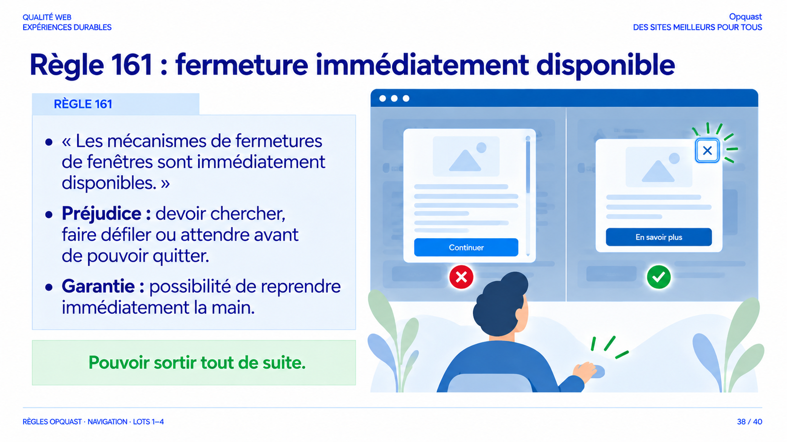
Idée principale
La règle Opquast 161 demande que le mécanisme de fermeture d’une fenêtre soit disponible dès son affichage.
La personne ne doit pas attendre, faire défiler le contenu ou chercher une commande différée avant de pouvoir reprendre la main.
Ce que montre l’illustration
Deux fenêtres affichées en surimpression sont comparées.
Fermeture indisponible
À gauche, une fenêtre longue contient une illustration, plusieurs lignes de texte, une barre de défilement et le bouton « Continuer ».
Aucune croix de fermeture n’est visible dans la zone affichée. Une croix rouge sous la fenêtre signale que la personne ne peut pas la quitter immédiatement.
Fermeture disponible
À droite, une fenêtre plus courte contient le bouton « En savoir plus ».
Une croix de fermeture est visible dans l’angle supérieur droit dès l’affichage. Des marques vertes et une coche signalent la possibilité de fermer immédiatement la fenêtre.
Portée de la règle
Cette règle vérifie la disponibilité immédiate du mécanisme. Son rattachement visuel, son caractère explicite et son utilisation au clavier font l’objet de vérifications complémentaires.
Message à retenir
Pouvoir sortir tout de suite.
Présent ne signifie pas disponible
Imaginons qu’une fenêtre s’affiche devant le contenu que nous consultons.
Nous savons peut-être où son bouton de fermeture devrait se trouver. Mais la croix n’apparaît qu’après un compte à rebours, se trouve après un long défilement ou reste inactive pendant quelques secondes.
Le mécanisme existe. Pourtant, nous ne pouvons pas encore reprendre la main.
C’est cette différence que traite la règle 161.
La règle Opquast
Les mécanismes de fermetures de fenêtres sont immédiatement disponibles.
Une fenêtre modale, une vidéo en vignette flottante ou un contenu similaire doit pouvoir être fermé dès son affichage.
La personne ne doit pas attendre qu’un délai expire, regarder une publicité jusqu’à un certain point ou parcourir le contenu pour découvrir enfin la commande.
Une règle distincte du rattachement visuel
La règle 160 demandait de comprendre à quelle fenêtre appartient le contrôle.
La règle 161 demande maintenant de pouvoir utiliser ce contrôle tout de suite.
Une croix peut donc être parfaitement placée mais apparaître trop tard. À l’inverse, un contrôle peut être présent dès l’ouverture mais tellement éloigné que sa relation avec la fenêtre reste ambiguë.
Les deux vérifications sont nécessaires et différentes.
Lire le visuel
À gauche, une fenêtre longue contient une illustration, plusieurs lignes de texte, une barre de défilement et un bouton « Continuer ».
Aucun contrôle de fermeture n’est disponible dans la zone immédiatement visible. Une croix rouge sous la fenêtre signale l’échec.
À droite, une fenêtre plus courte contient un bouton « En savoir plus ». Une croix de fermeture est visible dès l’affichage dans son angle supérieur droit. Des marques vertes et une coche confirment que le contrôle est disponible.
Le contraste entre les deux exemples montre que la personne ne devrait ni faire défiler, ni chercher, ni attendre avant de pouvoir fermer.
Tester la règle
Pour chaque fenêtre ou contenu similaire :
- déclencher son affichage ;
- tenter de le fermer immédiatement ;
- vérifier qu’aucun compte à rebours ne retarde la commande ;
- vérifier que la commande n’apparaît pas seulement après un défilement ;
- vérifier qu’elle est active dès son affichage ;
- répéter le contrôle pour les vidéos en vignette flottante et les composants fournis par des services tiers.
Message à retenir
Pouvoir sortir tout de suite.
Une interface ne doit pas retenir artificiellement la personne. La slide suivante vérifie si le moyen de fermeture est également explicite.
Slide 39 - Règle 162 : bouton de fermeture explicite
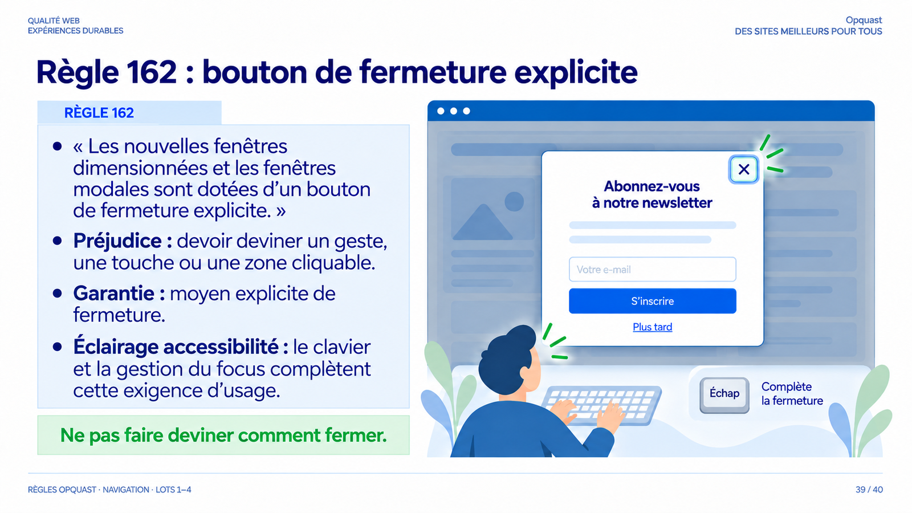
Idée principale
La règle Opquast 162 exige un bouton ou un lien de fermeture explicite dans les nouvelles fenêtres dimensionnées et les fenêtres modales.
La fermeture ne doit pas reposer uniquement sur une touche, un geste ou une zone cliquable que la personne doit deviner.
Ce que montre l’illustration
Une fenêtre modale intitulée « Abonnez-vous à notre newsletter » est affichée au-dessus d’une page.
Elle contient :
- un champ « Votre e-mail » ;
- un bouton « S’inscrire » ;
- un lien « Plus tard » ;
- une croix de fermeture dans son angle supérieur droit.
Des marques vertes attirent l’attention sur la croix.
Sous la fenêtre, une touche « Échap » est représentée avec la mention :
Complète la fermeture
Le visuel présente ainsi Échap comme un moyen complémentaire, et non comme le seul mécanisme proposé.
Éclairage accessibilité
L’utilisation au clavier, le nom accessible du bouton et la gestion du focus complètent l’exigence d’usage. Ces points doivent être vérifiés séparément de la présence du moyen explicite demandé par la règle 162.
Message à retenir
Ne pas faire deviner comment fermer.
Ne pas obliger à connaître une convention cachée
Une fenêtre s’ouvre et masque le contenu.
Aucun bouton « Fermer » n’est visible. Il faut deviner qu’un clic sur l’arrière-plan ou une pression sur Échap permettra peut-être de la quitter.
Cette interaction peut sembler évidente à une personne habituée à ce type de composant. Elle ne l’est pas pour tout le monde.
La règle 162 évite de faire reposer la sortie sur une convention implicite.
La règle Opquast
Les nouvelles fenêtres dimensionnées et les fenêtres modales sont dotées d’un bouton de fermeture explicite.
Le corps de la fenêtre doit contenir un bouton ou un lien associé à une action de fermeture.
Son rôle doit être compréhensible.
Un bouton portant le texte « Fermer » constitue une solution directe. Une icône en forme de croix peut également être utilisée si sa fonction est explicitée pour les personnes qui ne perçoivent pas ou ne comprennent pas le pictogramme seul.
Explicite ne signifie pas seulement visible
Une zone peut être visible sans annoncer clairement son action.
Une croix peut signifier fermer, supprimer ou annuler selon le contexte. Le bouton doit donc être identifiable comme le moyen de quitter la fenêtre concernée.
Le contrôle porte sur trois questions :
- existe-t-il un bouton ou un lien de fermeture ?
- son rôle est-il explicite ?
- son activation ferme-t-elle réellement la fenêtre ?
Une fermeture reposant uniquement sur Échap ou sur un clic en dehors de la fenêtre ne satisfait pas la règle.
Lire le visuel
La fenêtre représentée porte le titre « Abonnez-vous à notre newsletter ».
Elle contient un champ « Votre e-mail », le bouton « S’inscrire » et le lien « Plus tard ».
Une croix visible se trouve dans l’angle supérieur droit de la fenêtre. Les marques vertes attirent l’attention sur ce contrôle.
Sous la fenêtre, une touche « Échap » est accompagnée de la mention :
Complète la fermeture
Le visuel distingue ainsi le moyen explicite présenté dans la fenêtre et le raccourci clavier qui peut le compléter.
Le lien « Plus tard » propose une autre décision, mais le visuel seul ne permet pas d’affirmer qu’il ferme effectivement la fenêtre.
L’éclairage accessibilité
La règle 162 ne suffit pas à rendre une fenêtre modale accessible.
Il faut également vérifier séparément que :
- le bouton possède un nom compréhensible pour les technologies d’assistance ;
- il peut être atteint et activé au clavier ;
- le focus est géré de manière cohérente à l’ouverture et à la fermeture ;
- la touche Échap, lorsqu’elle est prise en charge, complète le contrôle visible sans le remplacer.
Ces exigences prolongent la qualité d’usage, mais ne doivent pas être présentées comme le texte de la règle Opquast 162.
Tester la règle
Pour chaque nouvelle fenêtre dimensionnée ou fenêtre modale :
- chercher un bouton ou un lien de fermeture dans son contenu ;
- vérifier que son libellé ou son nom permet de comprendre l’action ;
- activer le contrôle et confirmer qu’il ferme effectivement la fenêtre ;
- vérifier que la fermeture ne repose pas uniquement sur Échap, un geste ou un clic hors du composant ;
- contrôler séparément son utilisation au clavier et la gestion du focus.
Message à retenir
Ne pas faire deviner comment fermer.
La personne doit disposer d’un moyen de fermeture visible, compréhensible et associé à une action réelle. La dernière slide vérifie si ce moyen reste au même emplacement sur l’ensemble du site.
Slide 40 - Règle 163 : fermeture au même emplacement
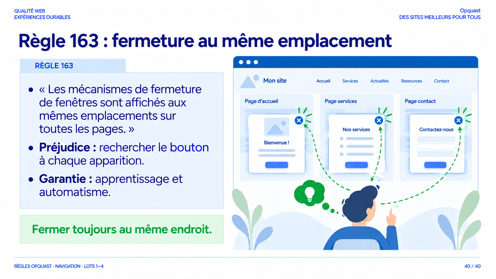
Idée principale
La règle Opquast 163 demande que les mécanismes de fermeture occupent les mêmes emplacements sur les différentes pages du site.
Une position stable permet de réutiliser un apprentissage au lieu de rechercher la commande à chaque apparition.
Ce que montre l’illustration
Trois pages d’un même site sont présentées côte à côte.
- La « Page d’accueil » contient une fenêtre intitulée « Bienvenue ! ».
- La « Page services » contient une fenêtre intitulée « Nos services ».
- La « Page contact » contient une fenêtre intitulée « Contactez-nous ».
Dans chaque fenêtre, une croix de fermeture apparaît dans l’angle supérieur droit.
Des marques vertes mettent les trois croix en évidence. Des flèches en pointillés les relient à une personne qui observe les pages. Une ampoule représente l’apprentissage de l’emplacement.
Le menu du site affiche « Accueil », « Services », « Actualités », « Ressources » et « Contact ».
Portée de la règle
L’angle supérieur droit illustré est une convention courante, pas un emplacement imposé par la règle.
L’exigence porte sur la stabilité du choix à travers le site.
Message à retenir
Fermer toujours au même endroit.
Transformer un apprentissage en automatisme
Nous venons d’apprendre qu’une fenêtre doit proposer un moyen de fermeture rattaché à son contenu, disponible immédiatement et explicite.
Il reste une question.
Lorsque nous retrouvons une autre fenêtre sur une autre page du même site, le bouton se trouve-t-il au même endroit ?
Si la commande change de position à chaque apparition, la personne doit recommencer sa recherche.
La règle Opquast
Les mécanismes de fermetures de fenêtres sont affichés aux mêmes emplacements sur toutes les pages.
La règle demande une convention stable à travers le site.
Une fois l’emplacement appris, la personne doit pouvoir le retrouver sans analyser à nouveau toute la fenêtre.
Cette stabilité limite le temps d’apprentissage, accélère l’accès au contenu et facilite la navigation.
Une convention stable, pas un angle imposé
L’angle supérieur droit est l’emplacement le plus courant et le référentiel le cite comme exemple.
La règle ne l’impose toutefois pas.
L’équipe peut retenir un autre emplacement si celui-ci reste cohérent pour toutes les fenêtres concernées.
Ce qui compte est la stabilité de la relation spatiale. Si le bouton se trouve dans l’angle supérieur droit d’une fenêtre sur la page d’accueil, il ne devrait pas passer en bas à gauche sur la page des services puis au milieu de la page de contact.
Lire le visuel
Le visuel montre trois pages d’un même site.
- La « Page d’accueil » contient une fenêtre intitulée « Bienvenue ! ».
- La « Page services » contient une fenêtre intitulée « Nos services ».
- La « Page contact » contient une fenêtre intitulée « Contactez-nous ».
Dans les trois cas, la croix apparaît dans l’angle supérieur droit de la fenêtre.
Des flèches vertes relient ces emplacements à une personne qui observe les pages. Une ampoule représente l’apprentissage de cette convention.
La personne n’a pas à chercher trois fois. Elle réutilise ce qu’elle a appris lors de la première apparition.
Tester la règle
Pour contrôler la cohérence :
- inventorier les fenêtres modales et composants similaires du site ;
- les ouvrir sur plusieurs pages ;
- comparer la position du mécanisme relativement à chaque fenêtre ;
- inclure les composants provenant d’outils ou de services tiers ;
- vérifier qu’aucun gabarit ne déplace la commande dans une autre zone sans raison compréhensible.
Fermer le bloc sur le contrôle des fenêtres
Les règles du bloc construisent une progression.
- La règle 154 évite les popups provoquées par la navigation.
- La règle 160 rattache visuellement la fermeture à son contenu.
- La règle 161 rend cette fermeture disponible dès l’affichage.
- La règle 162 fournit un moyen explicite.
- La règle 163 stabilise son emplacement.
Elles ne disent pas toutes la même chose. Elles empêchent chacune une forme différente de perte de contrôle.
Fermer le module Navigation
Cette slide est la dernière de la série, mais une vingtième règle reste dans le périmètre sans visuel dédié :
Les limites de temps imposées à une action ou un accès sont indiquées.
La règle 172 demande d’annoncer la limite et sa durée avant le déclenchement de l’action ou la mise à disposition.
Elle complète la dernière question posée au début du module : « Ai-je le temps d’agir ? »
Nous retrouvons ainsi le fil rouge de la séquence :
Je sais où je suis. Je sais où aller. Je peux y aller. Et je garde la main.
Message à retenir
Fermer toujours au même endroit.
La stabilité transforme un premier repérage en apprentissage réutilisable.